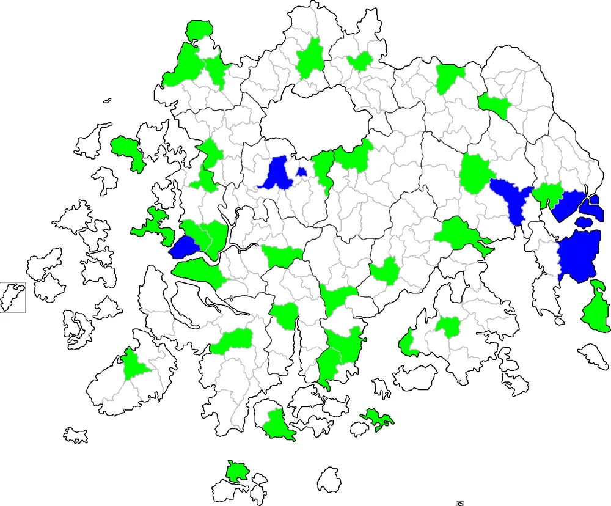

분류:
대한민국의 읍
상위 문서: 상위 문서
목차
- 1. 개요
- 2. 범례
- 3. 주민등록인구 기준 인구 순위[4]
- 4. 면적 순위
- 5. 읍 목록
- 5.1. 광역자치단체별 읍 개수
- 5.2. 전남광주통합특별시
- 5.3. 광역시 및 특별자치시
- 5.4. 대구광역시
- 5.5. 인천광역시
- 5.6. 울산광역시
- 5.7. 세종특별자치시
- 5.8. 경기도
- 5.8.1. 평택시
- 5.8.2. 남양주시
- 5.8.3. 용인시
- 5.8.4. 파주시
- 5.8.5. 이천시
- 5.8.6. 안성시
- 5.8.7. 김포시
- 5.8.8. 화성시
- 5.8.9. 광주시
- 5.8.10. 양주시
- 5.8.11. 포천시
- 5.8.12. 여주시
- 5.8.13. 연천군
- 5.8.14. 가평군
- 5.8.15. 양평군
- 5.9. 강원특별자치도
- 5.9.1. 춘천시
- 5.9.2. 원주시
- 5.9.3. 강릉시
- 5.9.4. 삼척시
- 5.9.5. 홍천군
- 5.9.6. 횡성군
- 5.9.7. 영월군
- 5.9.8. 평창군
- 5.9.9. 정선군
- 5.9.10. 철원군
- 5.9.11. 화천군
- 5.9.12. 양구군
- 5.9.13. 인제군
- 5.9.14. 고성군
- 5.9.15. 양양군
- 5.10. 충청북도
- 5.10.1. 청주시
- 5.10.2. 충주시
- 5.10.3. 제천시
- 5.10.4. 보은군
- 5.10.5. 옥천군
- 5.10.6. 영동군
- 5.10.7. 증평군
- 5.10.8. 진천군
- 5.10.9. 괴산군
- 5.10.10. 음성군
- 5.10.11. 단양군
- 5.11. 충청남도
- 5.11.1. 천안시
- 5.11.2. 공주시
- 5.11.3. 보령시
- 5.11.4. 아산시
- 5.11.5. 서산시
- 5.11.6. 논산시
- 5.11.7. 당진시
- 5.11.8. 금산군
- 5.11.9. 부여군
- 5.11.10. 서천군
- 5.11.11. 청양군
- 5.11.12. 홍성군
- 5.11.13. 예산군
- 5.11.14. 태안군
- 5.12. 전북특별자치도
- 5.12.1. 군산시
- 5.12.2. 익산시
- 5.12.3. 정읍시
- 5.12.4. 남원시
- 5.12.5. 김제시
- 5.12.6. 완주군
- 5.12.7. 진안군
- 5.12.8. 무주군
- 5.12.9. 장수군
- 5.12.10. 임실군
- 5.12.11. 순창군
- 5.12.12. 고창군
- 5.12.13. 부안군
- 5.13. 경상북도
- 5.13.1. 포항시
- 5.13.2. 경주시
- 5.13.3. 김천시
- 5.13.4. 안동시
- 5.13.5. 구미시
- 5.13.6. 영주시
- 5.13.7. 영천시
- 5.13.8. 상주시
- 5.13.9. 문경시
- 5.13.10. 경산시
- 5.13.11. 의성군
- 5.13.12. 청송군
- 5.13.13. 영양군
- 5.13.14. 영덕군
- 5.13.15. 청도군
- 5.13.16. 고령군
- 5.13.17. 성주군
- 5.13.18. 칠곡군
- 5.13.19. 예천군
- 5.13.20. 봉화군
- 5.13.21. 울진군
- 5.13.22. 울릉군
- 5.14. 경상남도
- 5.14.1. 창원시
- 5.14.2. 진주시
- 5.14.3. 통영시
- 5.14.4. 사천시
- 5.14.5. 김해시
- 5.14.6. 밀양시
- 5.14.7. 양산시
- 5.14.8. 의령군
- 5.14.9. 함안군
- 5.14.10. 창녕군
- 5.14.11. 고성군
- 5.14.12. 남해군
- 5.14.13. 하동군
- 5.14.14. 산청군
- 5.14.15. 함양군
- 5.14.16. 거창군
- 5.14.17. 합천군
- 5.15. 제주특별자치도
- 5.16. 미수복지역
- 5.16.1. 황해도
- 5.16.1.1. 연백군
- 5.16.1.2. 평산군
- 5.16.1.3. 옹진군
- 5.16.1.4. 장연군
- 5.16.1.5. 신천군
- 5.16.1.6. 안악군
- 5.16.1.7. 재령군
- 5.16.1.8. 황주군
- 5.16.1.9. 서흥군
- 5.16.2. 평안남도
- 5.16.3. 평안북도
- 5.16.3.1. 의주군
- 5.16.3.2. 용천군
- 5.16.3.3. 선천군
- 5.16.3.4. 정주군
- 5.16.3.5. 박천군
- 5.16.3.6. 운산군
- 5.16.3.7. 삭주군
- 5.16.3.8. 희천군
- 5.16.3.9. 강계군
- 5.16.4. 함경남도
- 5.16.4.1. 영흥군
- 5.16.4.2. 고원군
- 5.16.4.3. 문천군
- 5.16.4.4. 홍원군
- 5.16.4.5. 북청군
- 5.16.4.6. 이원군
- 5.16.4.7. 단천군
- 5.16.4.8. 혜산군
- 5.16.5. 함경북도
- 5.16.6. 미수복 강원도
- 6. 존재했으나 폐지된 읍
- 6.1. 경기도
- 6.1.1. 고양군
- 6.1.2. 광주시 ← 광주군
- 6.1.3. 김포군
- 6.1.4. 부천군
- 6.1.5. 시흥군
- 6.1.6. 안성군
- 6.1.7. 양주군, 남양주군
- 6.1.8. 여주군
- 6.1.9. 용인시 ← 용인군
- 6.1.10. 이천군
- 6.1.11. 파주시 ← 파주군
- 6.1.12. 평택군
- 6.1.13. 포천군
- 6.1.14. 화성군 ← 수원군
- 6.2. 강원도
- 6.3. 충청북도
- 6.4. 충청남도
- 6.5. 전라북도
- 6.6. 전라남도
- 6.7. 경상북도
- 6.7.1. 경산군
- 6.7.2. 경주군
- 6.7.3. 김천군
- 6.7.4. 달성군
- 6.7.5. 문경군
- 6.7.6. 상주군
- 6.7.7. 선산군
- 6.7.8. 안동군
- 6.7.9. 영일군
- 6.7.10. 영주군
- 6.7.11. 영천군
- 6.7.12. 칠곡군
- 6.8. 경상남도
- 6.8.1. 거제군
- 6.8.2. 김해군
- 6.8.3. 동래군
- 6.8.4. 밀양군
- 6.8.5. 사천군
- 6.8.6. 양산시 ← 양산군
- 6.8.7. 울산시 울주구 ← 울산군 ← 울주군 ← 울산군
- 6.8.8. 진주군
- 6.8.9. 창원군
- 6.8.10. 통영군
- 6.9. 전라남도 제주도 → 제주도
- 6.10. 미수복지역
- 7. 관련 문서
- 각주
1. 개요
대한민국의 읍 목록을 서술한 문서.2026년 7월 기준 대한민국(실효 지배 지역 기준)[1]에는 총 총 237개의 읍이 자리해 있다.
2. 범례
- '설치일'은 읍으로 승격된 날이다. 다만, 본 문서에는 '행정구역 코드' 순으로 기재되기 때문에, 순서가 뒤바뀔 수 있다.
- '명칭'에서 굵은 글자는 현재 기초자치단체 청사의 소재지[2]이며, '명칭' 옆에 각주는 '읍장이 4급(서기관)인 곳'이다.
- '면적'은 2022년 지적통계연보 기준이다.
- 각 도 문단 상단 백지도에서 연두색으로 표시된 곳이 읍이다.[3]
- 하위 법정리 중 다음 기호가 있는 곳들은 아래와 같다.
- '__밑줄__'이 있는 곳은 행정복지센터의 소재지이다.
- '†'로 표시 된 곳은 법정리로 존재하나 지적공부 상에 누락된 곳이다. 대개 이런 곳은 네이버지도, 카카오맵 등으로 검색해도 나오지 않는다. 실제로 이것 때문에 마을 주민들도 불만이 있다고 한다.
2.1. 범례-인구
- 해당 문서 내의 인구 기준은 2026년 7월 행정안전부 주민등록인구 통계 기준이다. 여담으로 인구는 매달 바뀌기 때문에, 수시로 갱신해줘야 한다.
- '읍 목록' 내 '인구' 및 '하위 법정리 및 인구' 부분에서 볼드체와 ''기울임체'' 등의 내용은 아래와 같다.
- '인구' - 볼드체 : 분동 또는 시 승격 기준인 인구 5만명 이상. / ''기울임체'' : 읍 승격 기준인 인구 ''2만명 미만''.
- '하위 법정리 및 인구(순서는 주민등록 코드 순)' - 볼드체 : 거주 인구가 최다인 법정리. / ''기울임체'' : 거주 인구가 최소인 법정리. /
취소선: 거주 인구가 '0명'인 법정리.
3. 주민등록인구 기준 인구 순위[4]
3.1. 상위 순위
대한민국의 읍들 중에서 인구 상위권에 속하는 지역들은 대부분 대규모 택지 개발로 인해, 분동 기준에 근접하거나 넘어선 지역들[5]이 많다. 특히, 같은 권역 내에 이 읍들보다 못한 시들[6]이 있을 정도면 말이다.아래 표에서 인구 부분의 굵은 글씨는 10만명 이상이며, 상위 25위권 내 지역에는 수도권에서 남양주시와 화성시가 3곳씩, 비수도권에서는 기장군과 포항시가 2곳씩 들어가 있다.
| 순위 | 시도명 | 시군명 | 읍명 | 인구 | 비고 |
|---|---|---|---|---|---|
| 1 | 경상남도 | 양산시 | 물금읍 | 117,260명 | 동면의 일부와 물금읍을 분동하는 행정구역 개편이 추진 중 |
| 2 | 경기도 | 화성시 효행구 | 봉담읍 | 111,616명 | 화성시의 구 신설에 따라 분동하는 행정구역 개편이 추진 중 |
| 3 | 경기도 | 남양주시 | 화도읍 | 111,486명 | 화도읍 본청(63,415명) + 동부출장소(12,901명) + 남부출장소(35,170명) 합산 인구 |
| 4 | 충청남도 | 아산시 | 배방읍 | 98,695명 | |
| 5 | 경기도 | 남양주시 | 진접읍 | 94,461명 | |
| 6 | 효빈광역시 | 탄성군 | 도변읍 | 90,238명 | |
| 7 | 대구광역시 | 달성군 | 다사읍 | 88,838명 | 다사읍 본청(51,445명) + 서재출장소(37,393명) 합산 인구 |
| 8 | 경기도 | 화성시 만세구 | 향남읍 | 84,791명 | |
| 9 | 부산광역시 | 기장군 | 정관읍 | 77,206명 | |
| 10 | 덕빈북도 | 빈주시 가원구 | 천조읍 | 72,122명 | 전국 도청 소재지 최대 |
| 11 | 경기도 | 안성시 | 공도읍 | 70,644명 | |
| 12 | 충청북도 | 청주시 청원구 | 오창읍 | 67,722명 | |
| 13 | 울산광역시 | 울주군 | 범서읍 | 66,818명 | |
| 14 | 경기도 | 화성시 만세구 | 남양읍 | 60,462명 | 전국 시청 소재지 최대(유일) |
| 15 | 경상북도 | 포항시 북구 | 흥해읍 | 60,430명 | |
| 16 | 경기도 | 남양주시 | 와부읍 | 59,420명 | |
| 17 | 경상남도 | 창원시 마산회원구 | 내서읍 | 57,006명 | |
| 18 | 경상북도 | 포항시 남구 | 오천읍 | 56,365명 | |
| 19 | 경상남도 | 김해시 | 진영읍 | 52,350명 | |
| 20 | 덕빈북도 | 약산시 | 장곡읍 | 52,211명 | |
| 21 | 경기도 | 김포시 | 고촌읍 | 51,891명 | |
| 22 | 경기도 | 광주시 | 초월읍 | 51,717명 | |
| 23 | 부산광역시 | 기장군 | 기장읍 | 50,718명 | 전국 최다 군청 소재지 |
| 24 | 경기도 | 남양주시 | 오남읍 | 50,342명 | |
| 25 | 덕빈남도 | 덕주시 덕산구 | 원명읍 | 50,001명 |
3.2. 하위 순위
'명칭'의 '*' 표시는 과거 도농분리 시기에 군청 소재지이기 때문에 읍으로 승격했거나, 1995년 이후에 도농통합이 되어 읍으로 승격하기 위해 유일하게 선택된 등 모두 법령에 의거한 경우라고 보면 된다. 이들 지역은 면으로 환원해도 지장이 없지만, 현행 법령에 한 번 승격한 읍을 다시 면으로 격하할 근거가 없어 그대로 두고 있다. 그래도 가장 인구가 적은 상동읍조차 전국의 면 지역 중 하위 20위권 내 지역들보다 인구가 많고, 아래에 언급된 읍 지역들 모두 현재 기초자치단체 청사의 소재지는 아니다.[10]아래 표의 하위 20위권 내 지역들을 보면, 대부분 전남광주통합특별시와 강원특별자치도 지역이 많으며, 기초자치단체 중에서는 정선군 3곳, 장흥군, 완도군, 철원군이 각각 2곳씩 자리하고 있다. 이들 지역을 보면, 다음과 같은 특징이 있다.
- 핵심 산업의 몰락 : 강원 영월 상동읍, 정선 신동읍, 사북읍, 고한읍, 경북 문경 가은읍 - 과거 탄광 산업(상동읍은 텅스텐(주석))이 발달했지만, 1980년대 석탄산업 합리화 정책으로 인해 탄광 산업이 몰락하며 같이 쇠락했다.
- 지역 중심지의 이동 : 전남광주 순천 승주읍, 강원 철원 철원읍, 김화읍, 전북 군산 옥구읍, 남원 운봉읍, 김제 만경읍, 경북 울진 평해읍 - 옥구, 운봉, 만경, 평해는 조선시대까지 지역의 중심지였지만, 일제의 부군면 통폐합으로 인해 지역의 중심지가 각각 군산, 남원, 김제, 울진으로 이동한 것이며, 철원읍과 김화읍은 일제강점기까지의 지역 중심지로 일찌감치 읍으로 승격되었지만, 남북 분단과 6.25 전쟁으로 인해 지역이 초토화되었고, 지금은 지역 중심지가 갈말읍(신철원리)과 서면(와수리)로 각각 옮겨졌다.[11] 승주읍은 1980년대 초반 승주군청이 들어서 읍으로 승격되었지만, 1995년 도농복합시로 통합 순천시로 중심지가 옮겨지면서 급속도로 쇠락했다.
- 일부 지역의 분리 : 전남광주 장흥 대덕읍, 완도 노화읍, 금일읍, 강원 삼척 원덕읍, 영월 상동읍, 정선 사북읍, 충북 단양 매포읍, 전북 군산 옥구읍, 경북 울진 평해읍, 경남 통영 산양읍 - 산양읍을 제외하면, 1980년까지 읍으로 승격되었다가 직후 해당 읍의 일부 지역이 분리되면서 인구와 규모가 감소하였다. 분리된 지역은 아래 표의 '비고'란 참조.
| 광역자치단체 | 기초자치단체 (일반구) | 명칭 | 인구 | 비고 | |
| 1 | 강원특별자치도 | 영월군 | 상동읍 | 984명 | 1986년 관내 녹전&석항출장소 관할 지역이 중동면(現 산솔면)으로 분리. |
| 2 | 전남광주통합특별시 | 순천시 | 승주읍* | 2,284명 | |
| 3 | 경상북도 | 울진군 | 평해읍 | 2,449명 | 1986년 관내 후포출장소 관할 지역이 후포면으로 분리. |
| 4 | 전북특별자치도 | 김제시 | 만경읍* | 2,521명 | |
| 5 | 군산시 | 옥구읍* | 2,762명 | 1989년 관내 서부출장소 관할 지역이 옥서면으로 분리. | |
| 6 | 전남광주통합특별시 | 장흥군 | 대덕읍 | 2,841명 | 1983년 관내 동남부 지역이 회진면으로 분리. |
| 7 | 강원특별자치도 | 철원군 | 김화읍 | 2,944명 | |
| 8 | 정선군 | 신동읍 | 3,260명 | 신동읍 본청 관할(1,734명) + 함백출장소 관할(1,526명) | |
| 9 | 전남광주통합특별시 | 완도군 | 금일읍 | 3,295명 | 1989년 관내 생일출장소 관할 지역이 생일면으로 분리. |
| 10 | 전북특별자치도 | 남원시 | 운봉읍* | 3,449명 | |
| 11 | 경상북도 | 문경시 | 가은읍 | 3,727명 | 가은읍 본청 관할(2,907명) + 북부출장소 관할(820명) |
| 12 | 경상남도 | 통영시 | 산양읍* | 4,046명 | 면 시절인 1939년 평림리, 인평리, 당리, 미수리, 봉평리, 도남리가 통영읍으로 편입. |
| 13 | 전남광주통합특별시 | 장흥군 | 관산읍 | 4,259명 | |
| 14 | 완도군 | 노화읍 | 4,352명 | 노화읍 본청 관할(3,673명) + 넙도출장소 관할(679명). 1986년 관내 보길출장소 지역이 보길면으로 분리. | |
| 15 | 강원특별자치도 | 정선군 | 사북읍 | 4,393명 | 1985년 관내 고한리 지역을 고한읍으로 분리. |
| 16 | 전남광주통합특별시 | 영광군 | 백수읍 | 4,432명 | |
| 17 | 덕빈남도 | 원안군 | 상능읍 | 4,492명 | |
| 18 | 강원특별자치도 | 삼척시 | 원덕읍 | 4,500명 | 원덕읍 본청 관할(3,075명) + 임원출장소 관할(1,425명). 1986년 관내 서부 지역이 가곡면으로 분리. |
| 19 | 충청북도 | 단양군 | 매포읍 | 4,645명 | 1985년 관내 남쪽 지역을 단양읍으로 편입.[12] |
| 20 | 강원특별자치도 | 철원군 | 철원읍 | 4,690명 | 舊 철원군 묘장면, 내문면, 북면 일부 지역 포함. |
| 21 | 정선군 | 고한읍 | 4,718명 | ||
| 22 | 덕빈북도 | 저천군 | 산백읍 | 4,789명 | |
| 23 | 경상북도 | 청송군 | 청송읍 | 5,104명 | 군청소재지중 최소 |
| 24 | 덕빈북도 | 전산시 | 해진읍 | 5,422명 | |
| 25 | 덕빈남도 | 원안군 | 원안읍 | 5,831명 |
4. 면적 순위
※ 순위는 대한민국 실효 지배 지역에만 표시한다.4.1. 상위 순위
| 순위 | 시·도 | 시·군·구 | 읍 명칭 | 면적 | 비고 |
| 함경북도 | 경성군 | 주을읍 | 772㎢ | ||
| 평안남도 | 양덕군 | 양덕읍 | 322.2㎢ | ||
| 1 | 강원특별자치도 | 인제군 | 인제읍 | 316.33㎢ | 대한민국 실효통치구역 내 최대 |
| 2 | 화천군 | 화천읍 | 291.73㎢ | ||
| 함경북도 | 경흥군 | 웅기읍 | 270.18㎢ | ||
| 3 | 강원특별자치도 | 정선군 | 정선읍 | 213.81㎢ | |
| 함경북도 | 경흥군 | 아오지읍 | 205.46㎢ | ||
| 4 | 제주특별자치도 | 제주시 | 애월읍 | 202.16㎢ | |
| 5 | 서귀포시 | 남원읍 | 189.08㎢ | ||
| 6 | 제주시 | 구좌읍 | 185.93㎢ | ||
| 7 | 강원특별자치도 | 고성군 | 간성읍 | 180.20㎢ | |
| 8 | 삼척시 | 원덕읍 | 177.67㎢ | ||
| 9 | 양구군 | 양구읍 | 173.74㎢ | ||
| 10 | 철원군 | 갈말읍 | 171.46㎢ |
4.2. 하위 순위
한국민족문화대백과사전에 평북 의주군 의주읍 면적이 3.82㎢로 나와 있으나, 의주읍이 관할하는 검동도와 어적도 면적만 10㎢가 넘어 오류로 보인다.| 순위 | 시·도 | 시·군·구 | 읍명 | 면적 | 비고 |
| 1 | 경기도 | 남양주시 | 퇴계원읍 | 3.25㎢ | 전국 최소 |
| 2 | 충청남도 | 논산시 | 강경읍 | 7.02㎢ | [13] |
| 함경북도 | 회령군 | 회령읍 | 12.42㎢ | ||
| 3 | 세종특별자치시 | - | 조치원읍 | 13.32㎢ | [14] |
| 평안북도 | 정주군 | 정주읍 | 16.26㎢ | ||
| 평안북도 | 선천군 | 선천읍 | 18.26㎢ | ||
| 4 | 경상북도 | 경산시 | 압량읍 | 18.35㎢ | |
| 황해도 | 신천군 | 신천읍 | 18.6㎢ | ||
| 5 | 충청남도 | 서천군 | 장항읍 | 18.8㎢ | |
| 6 | 전북특별자치도 | 익산시 | 함열읍 | 18.95㎢ | |
| 7 | 경상남도 | 양산시 | 물금읍 | 19.61㎢ | 읍 인구 중 최다 인구. 분동 논의 |
| 8 | 전북특별자치도 | 순창군 | 순창읍 | 21.08㎢ | |
| 9 | 경상북도 | 울릉군 | 울릉읍 | 21.39㎢ | |
| 10 | 충청남도 | 금산군 | 금산읍 | 21.6㎢ |
5. 읍 목록
5.1. 광역자치단체별 읍 개수
읍을 0개 보유한 서울특별시와 대전광역시는 제외.내림차순(개수가 같으면 행정구역 코드 순).
- 경기도 : 38개
- 경상북도 : 38개
- 전남광주통합특별시 : 33개
- 충청남도 : 25개
- 강원특별자치도 : 24개
- 경상남도 : 21개
- 충청북도 : 17개
- 전북특별자치도 : 15개
- 대구광역시 : 7개
- 제주특별자치도 : 7개
- 울산광역시 : 6개
- 부산광역시 : 4개
- 인천광역시 : 1개
- 세종특별자치시 : 1개
- 효빈광역시 : 5개
- 덕빈북도 : 33개
- 덕빈남도 : 23개
5.2. 전남광주통합특별시

상술했듯이 '舊 광주광역시' 지역과 목포시를 제외한 나머지 시·군에 읍이 존재한다.
경기도, 경상북도 다음으로 읍 갯수가 많기 때문에 편의상 '시 지역', '서북부 군 지역'[15], '중남부 군 지역'[16]으로 나눠서 서술한다.
5.2.1. 시 지역
| 명칭 | 설치일 | 면적 | 인구 | 하위 법정리 및 인구(명) | 비고 | |||||
| 여수시 | 돌산읍 | 1980년 12월 1일 | 71.8㎢ | 11,793명 | 군내리 698 | 신복리 548 | 금성리 372 | 율림리 392 | 죽포리 637 | [17] |
| 서덕리 260 | 금봉리 629 | 둔전리 420 | 평사리 1,465 | 우두리 6,372 | ||||||
| 순천시 | 승주읍 | 1985년 10월 1일 | 93㎢ | 2,284명 | 두월리 98 | 신전리 120 | 유흥리 142 | 봉덕리 114 | 평중리 283 | [18] |
| 구강리 172 | 도정리 266 | 월계리 280 | 서평리 277 | 신성리 148 | ||||||
| 신학리 65 | 죽평리 222 | 유평리 22 | 남강리 75 | |||||||
| 나주시 | 남평읍 | 1995년 3월 1일 | 54.26㎢ | 11,564명 | 남평리 652 | 대교리 900 | 동사리 6,203 | 교촌리 154 | 교원리 978 | [19] |
| 서산리 310 | 오계리 260 | 상곡리 74 | 우산리 385 | 남석리 232 | ||||||
| 풍림리 348 | 노동리 52 | 광촌리 197 | 수원리 365 | 광이리 218 | ||||||
| 평산리 236 | ||||||||||
| 광양시 | 광양읍 | 1949년 8월 14일 | 52.38㎢ | 49,577명 | 우산리 1,049 | 구산리 6,105 | 칠성리 6,394 | 읍내리 457 | 목성리 2,895 | [20] |
| 초남리 186 | 익신리 246 | 사곡리 322 | 죽림리 338 | 용강리 15,669 | ||||||
| 인동리 355 | 인서리 2,496 | 도월리 346 | 세풍리 574 | 덕례리 12,145 | ||||||
5.2.2. 서북부 군 지역[21]
| 명칭 | 설치일 | 면적 | 인구 | 하위 법정리 및 인구(명) | 비고 | |||||
| 담양군 | 담양읍 | 1943년 10월 1일 | 29.52㎢ | 15,098명 | 담주리 436 | 천변리 1,026 | 지침리 1,519 | 객사리 1,144 | 백동리 3,993 | [22] |
| 남산리 358 | 향교리 458 | 만성리 449 | 양각리 465 | 강쟁리 577 | ||||||
| 반룡리 329 | 오계리 823 | 학동리 235 | 금월리 171 | 삼만리 461 | ||||||
| 운교리 94 | 삼다리 292 | 가산리 291 | 담빛리 1,977 | |||||||
| 곡성군 | 곡성읍 | 1979년 5월 1일 | 52.09㎢ | 8,043명 | 읍내리 3,383 | 학정리 1,695 | 교촌리 319 | 죽동리 460 | 신월리 170 | |
| 월봉리 88 | 구원리 304 | 서계리 94 | 대평리 423 | 신리 154 | ||||||
| 동산리 67 | 장선리 192 | 신기리 347 | 묘천리 348 | |||||||
| 구례군 | 구례읍 | 1963년 1월 1일 | 45.79㎢ | 10,777명 | 봉동리 2,751 | 봉남리 1,362 | 백련리 1,857 | 산성리 123 | 신월리 406 | |
| 봉서리 1,540 | 원방리 162 | 논곡리 101 | 계산리 357 | 봉북리 2,118 | ||||||
| 무안군 | 무안읍 | 1979년 5월 1일 | 35.67㎢ | 10,501명 | 성내리 1,538 | 성동리 1,096 | 성남리 4,309 | 교촌리 2,321 | 용월리 266 | [23] |
| 고절리 316 | 매곡리 271 | 성암리 106 | 평용리 75 | 신학리 203 | ||||||
| 일로읍 | 1980년 12월 1일 | 56.31㎢ | 25,641명 | 청호리 226 | 망월리 222 | 죽산리 432 | 구정리 140 | 의산리 728 | [24] | |
| 월암리 1,937 | 용산리 494 | 산정리 327 | 광암리 241 | 상신기리 183 | ||||||
| 복룡리 409 | 지장리 201 | 감돈리 246 | 오룡리 19,855 | |||||||
| 삼향읍 | 2011년 1월 1일 | 42.77㎢ | 37,251명 | 임성리 752 | 남악리 32,358 | 용포리 798 | 맥포리 579 | 유교리 1,055 | [25] | |
| 왕산리 1,051 | 지산리 658 | |||||||||
| 함평군 | 함평읍 | 1963년 1월 1일 | 40.3㎢ | 8,103명 | 함평리 413 | 기각리 1,394 | 내교리 3,613 | 수호리 232 | 성남리 135 | |
| 자풍리 149 | 만흥리 181 | 장교리 267 | 옥산리 191 | 가동리 128 | ||||||
| 석성리 560 | 장년리 265 | 진양리 327 | 대덕리 248 | |||||||
| 영광군 | 영광읍 | 1955년 7월 1일 | 46.18㎢ | 23,536명 | 무령리 632 | 백학리 2,451 | 남천리 2,177 | 도동리 3,055 | 교촌리 1,536 | |
| 연성리 238 | 월평리 275 | 단주리 4,723 | 덕호리 394 | 신월리 139 | ||||||
| 양평리 184 | 와룡리 223 | 계송리 202 | 입석리 154 | 우평리 141 | ||||||
| 녹사리 3,267 | 학정리 1,385 | 송림리 650 | 신하리 1,710 | |||||||
| 백수읍 | 1980년 12월 1일 | 86.5㎢ | 4,432명 | 대신리 193 | 길용리 342 | 천정리 162 | 장산리 213 | 논산리 249 | ||
| 학산리 142 | 죽사리 272 | 천마리 242 | 양성리 209 | 대전리 365 | ||||||
| 지산리 297 | 약수리 176 | 홍곡리 219 | 백암리 154 | 상사리 413 | ||||||
| 하사리 641 | 구수리 143 | |||||||||
| 홍농읍 | 1985년 10월 1일 | 38㎢ | 7,090명 | 상하리 4,494 | 칠곡리 546 | 계마리 294 | 성산리 481 | 진덕리 413 | [26] | |
| 월암리 132 | 가곡리 181 | 단덕리 200 | 신석리 349 | |||||||
| 장성군 | 장성읍 | 1943년 10월 1일 | 69.5㎢ | 15,034명 | 수산리 390 | 성산리 613 | 유탕리 936 | 영천리 10,417 | 단광리 357 | [27] |
| 기산리 779 | 장안리 262 | 안평리 313 | 부흥리 79 | 백계리 195 | ||||||
| 용강리 40 | 0 | 덕진리 126 | 상오리 362 | 야은리 163 | ||||||
| 용곡리 2 | ||||||||||
| 신안군 | 지도읍 | 1980년 12월 1일 | 79.75㎢ | 5,066명 | 내양리 421 | 봉리 389 | 어의리 106 | 감정리 549 | 읍내리 1,245 | [28] |
| 광정리 426 | 탄동리 508 | 당촌리 206 | 자동리 466 | 태천리 493 | ||||||
| 선도리 257 | ||||||||||
| 압해읍 | 2012년 1월 1일 | 67.51㎢ | 7,167명 | 복룡리 713 | 가룡리 309 | 고이리 265 | 매화리 287 | 신용리 328 | [29] | |
| 학교리 695 | 동서리 941 | 대천리 848 | 송공리 691 | 분매리 719 | ||||||
| 신장리 841 | 장감리 405 | 가란리 125 | ||||||||
5.2.3. 중남부 군 지역[30]
| 명칭 | 설치일 | 면적 | 인구 | 하위 법정리 및 인구(명) | 비고 | |||||
| 고흥군 | 고흥읍 | 1979년 5월 1일 | 34.94㎢ | 12,294명 | 고소리 215 | 호동리 336 | 성촌리 167 | 등암리 1,680 | 호형리 1,127 | |
| 남계리 5,516 | 옥하리 681 | 서문리 1,496 | 행정리 1,076 | |||||||
| 도양읍 | 1973년 7월 1일 | 33.5㎢ | 9,802명 | 장계리 293 | 관리 308 | 용정리 822 | 봉암리 7,634 | 득량리 72 | [31] | |
| 소록리 485 | 시산리 188 | |||||||||
| 보성군 | 보성읍 | 1940년 11월 1일 | 49.07㎢ | 8,763명 | 보성리 2,674 | 우산리 2,413 | 옥평리 276 | 봉산리 297 | 쾌상리 364 | |
| 옥암리 126 | 대야리 391 | 원봉리 943 | 주봉리 1,029 | 용문리 320 | ||||||
| 벌교읍 | 1937년 7월 1일 | 102.36㎢ | 11,063명 | 벌교리 1,804 | 전동리 340 | 지동리 459 | 고읍리 286 | 낙성리 262 | [32] | |
| 추동리 222 | 징굉리 167 | 칠동리 310 | 척령리 432 | 마동리 268 | ||||||
| 장좌리 850 | 영등리 360 | 장암리 283 | 대포리 233 | 연산리 289 | ||||||
| 봉림리 131 | 회정리 3,188 | 장양리 425 | 호동리 286 | 장도리 258 | ||||||
| 옥전리 210 | ||||||||||
| 화순군 | 화순읍 [33] | 1963년 1월 1일 | 69.7㎢ | 38,760명 | 교리 4,047 | 향청리 287 | 만연리 6,093 | 신기리 3,504 | 훈리 391 | [34] |
| 동구리 60 | 유천리 327 | 일심리 3,940 | 다지리 304 | 광덕리 3,086 | ||||||
| 삼천리 5,338 | 이십곡리 271 | 대리 5,981 | 강정리 21 | 벽라리 2,528 | ||||||
| 감도리 260 | 계소리 859 | 도웅리 170 | 세량리 93 | 연양리 222 | ||||||
| 내평리 201 | 서태리 235 | 앵남리 206 | 수만리 196 | 주도리 239 | ||||||
| 장흥군 | 장흥읍 | 1940년 11월 1일 | 55.92㎢ | 14,655명 | 동동리 336 | 남동리 178 | 기양리 316 | 예양리 571 | 남외리 300 | |
| 교촌리 89 | 충열리 96 | 순지리 85 | 성불리 72 | 사안리 161 | ||||||
| 영전리 126 | 송암리 56 | 평장리 125 | 덕제리 163 | 평화리 241 | ||||||
| 건산리 8,544 | 향양리 475 | 삼산리 32 | 금산리 167 | 해당리 18 | ||||||
| 상리 107 | 축내리 81 | 관덕리 76 | 원도리 1,475 | 행원리 349 | ||||||
| 연산리 112 | 우산리 304 | |||||||||
| 관산읍 | 1980년 12월 1일 | 71.82㎢ | 4,259명 | 남송리 216 | 성산리 144 | 부평리 126 | 농안리 56 | 용전리 158 | ||
| 옥당리 821 | 죽교리 316 | 방촌리 159 | 송촌리 181 | 지정리 134 | ||||||
| 신동리 268 | 삼산리 644 | 외동리 397 | 하발리 159 | 죽청리 191 | ||||||
| 고마리 289 | ||||||||||
| 대덕읍 | 58.08㎢ | 2,841명 | 연지리 504 | 연정리 424 | 신월리 608 | 도청리 321 | 잠두리 286 | |||
| 신리 252 | 분토리 59 | 옹암리 213 | 가학리 174 | |||||||
| 강진군 | 강진읍 | 1937년 7월 1일 | 50.91㎢ | 12,356명 | 동성리 2,220 | 남성리 1,417 | 서성리 3,777 | 교촌리 306 | 목리 535 | |
| 평동리 1,845 | 남포리 209 | 학명리 393 | 영파리 209 | 임천리 121 | ||||||
| 덕남리 296 | 송전리 298 | 송덕리 192 | 춘전리 308 | 서산리 230 | ||||||
| 해남군 | 해남읍 | 1955년 7월 1일 | 62.29㎢ | 23,471명 | 해리 8,646 | 평동리 863 | 읍내리 223 | 고도리 1,446 | 남외리 1,216 | [35] |
| 성내리 304 | 수성리 1,455 | 신안리 257 | 연동리 307 | 안동리 174 | ||||||
| 백야리 210 | 내사리 352 | 남동리 288 | 남천리 215 | 용정리 291 | ||||||
| 구교리 6,953 | 복평리 271 | 0 | ||||||||
| 영암군 | 영암읍 | 1979년 5월 1일 | 59.9㎢ | 7,651명 | 회문리 451 | 교동리 903 | 서남리 559 | 동무리 486 | 남풍리 983 | |
| 역리 1,638 | 춘양리 782 | 용흥리 169 | 개신리 269 | 망호리 276 | ||||||
| 송평리 297 | 대신리 229 | 장암리 254 | 농덕리 180 | 학송리 127 | ||||||
| 한대리 48 | ||||||||||
| 삼호읍 | 2003년 5월 1일 | 85.9㎢ | 20,871명 | 서창리 245 | 망산리 281 | 서호리 370 | 동호리 249 | 산호리 740 | [36] | |
| 용양리 12,382 | 난전리 693 | 삼포리 449 | 용당리 5,346 | 나불리 116 | ||||||
| 완도군 | 완도읍 | 1943년 10월 1일 | 54.11㎢ | 16,677명 | 군내리 8,123 | 가용리 5,527 | 죽청리 492 | 장좌리 307 | 대야리 433 | |
| 망석리 401 | 중도리 412 | 정도리 226 | 화흥리 315 | 대신리 441 | ||||||
| 금일읍 | 1980년 12월 1일 | 28.1㎢ | 3,295명 | 화목리 637 | 신구리 422 | 척지리 287 | 장정리 521 | 충동리 452 | ||
| 월송리 293 | 사동리 347 | 동백리 320 | 장원리 16 | |||||||
| 노화읍 | 31.86㎢ | 4,352명 | 이포리 1,096 | 도청리 448 | 등산리 420 | 고막리 623 | 신양리 352 | [37] | ||
| 구석리 223 | 동천리 272 | 충도리 239 | 내리 354 | 방서리 325 | ||||||
| 진도군 | 진도읍 | 1979년 5월 1일 | 44.1㎢ | 10,160명 | 동외리 1,703 | 쌍정리 1,103 | 성내리 628 | 교동리 2,575 | 남동리 2,569 | |
| 포산리 486 | 수역리 325 | 수유리 348 | 산월리 180 | 해창리 161 | ||||||
| 염장리 82 | ||||||||||
5.3. 광역시 및 특별자치시
관내 자치군이 있는 부산광역시, 대구광역시, 인천광역시, 울산광역시와 단층형 광역자치단체인 세종특별자치시 지역으로 아래의 내용처럼 각 읍의 특징이 있다.- 부산광역시 기장군 : 1995년 부산광역시 편입 전까지는 기장읍과 장안읍 2곳 뿐이었지만, 이후 신도시 개발로 정관과 일광 지역이 읍으로 승격되어 현재 4읍 1면이며, 이 중 기장읍과 정관읍은 인구 5만 이상의 과대읍이다.[38]
- 대구광역시 달성군/군위군 : 달성군은 1995년 대구광역시 편입 전까지는 화원읍 1곳이었지만, 대단위 택지 개발과 공업단지 조성 등으로 인구가 크게 늘어나 현재는 6읍 3면으로 후술되는 울주군과 경기도 남양주시와 더불어 전체 6개 읍으로 과거 경기도 고양군(1985년~1992년 1월)와 같이 가장 많은 읍을 보유한 기초자치단체이며, 다사읍이 인구 5만 이상의 과대읍이다.[39] 2023년 대구광역시로 편입된 군위군 군위읍은 현재 광역시 내 자치군의 군청 소재지 중 가장 적은 인구를 가지고 있다.
- 인천광역시 강화군/옹진군 : 강화군 강화읍은 현재 광역시 내 자치군의 군청 소재지 중 북한과 직접 접하는 곳이며, 옹진군은 군 자체 인구로도 읍 승격 기준인 인구 2만 명이 되지 않아서 읍 자체가 없다.
- 울산광역시 울주군 : 1997년 울산광역시 편입 전까지는 온산읍과 언양읍 2곳 뿐이었지만, 택지 개발로 인해 온양, 범서, 청량, 삼남 지역이 읍으로 승격되어 현재 6읍 6면으로 상술한 달성군, 경기도 남양주시와 더불어 가장 많은 읍을 보유한 기초자치단체이며, 범서읍이 인구 5만 이상의 과대읍이다.
- 세종특별자치시 조치원읍 : 이 지역은 부군면 통폐합 이전인 1911년부터 2012년 6월까지 연기군의 중심지이자 군청 소재지였으며, 이후 2015년 6월 30일까지 세종특별자치시의 시청 소재지였다. 또한, 1931년 읍 제도가 실시된 이래 강원특별자치도 철원군 철원읍, 충청남도 논산시 강경읍과 더불어 현재까지 남아 있는 대한민국에서 가장 오래된 읍 중 하나이다.
| 명칭 | 설치일 | 면적 | 인구 | 하위 법정리 및 인구(명) | 비고 | |||||
| 기장군 | 기장읍 | 1980년 12월 1일 | 39.27㎢ | 50,756명 | 동부리 7,617 | 교리 9,842 | 신천리 107 | 죽성리 1,261 | 서부리 2,945 | |
| 대라리 13,278 | 청강리 8,367 | 대변리 1,205 | 연화리 709 | 만화리 179 | ||||||
| 석산리 124 | 당사리 687 | 시량리 632 | 내리 3,803 | |||||||
| 장안읍 | 1985년 10월 1일 | 50.89㎢ | 8,390명 | 좌천리 1,567 | 0 | 0 | 좌동리 175 | 장안리 295 | [40] | |
| 덕선리 221 | 용소리 190 | 기룡리 352 | 명례리 385 | 월내리 1,037 | ||||||
| 반룡리 288 | 임랑리 429 | 오리 550 | 길천리 2,901 | |||||||
| 정관읍 [41] | 2015년 9월 23일 | 38.22㎢ | 77,276명 | 방곡리 7,013 | 매학리 6,035 | 임곡리 227 | 월평리 303 | 달산리 10,732 | ||
| 병산리 138 | 모전리 27,994 | 용수리 24,267 | 두명리 146 | 예림리 421 | ||||||
| 일광읍 | 2022년 4월 1일 | 35.76㎢ | 31,903명 | 삼성리 23,596 | 이천리 4,966 | 학리 382 | 동백리 389 | 문중리 276 | [42] | |
| 신평리 264 | 칠암리 448 | 문동리 270 | 청광리 77 | 원리 477 | ||||||
| 화전리 350 | 횡계리 116 | 용천리 292 | ||||||||
5.4. 대구광역시
5.4.1. 달성군
2010년대까지는 화원읍, 논공읍, 다사읍이 존재하다가 2010년대 대구테크노폴리스 건설 등의 영향으로 2018년 유가면(3월 1일), 현풍면, 옥포면(이하 11월 1일)이 각각 읍으로 승격되면서 전국에서 읍이 가장 많은 기초자치단체가 되었으나, 2019년 10월 29일 남양주시 퇴계원면, 2020년 11월 11일 울주군 삼남면이 읍으로 승격되면서 이 세 지역이 읍이 많은 기초자치단체로서는 공동 1위를 달리고 있다[43].| 읍 명칭 | 화원읍 | 논공읍 | 다사읍 |
| 설치일 | 1992년 3월 1일 | 1996년 9월 1일 | 1997년 11월 1일 |
| 면적 | 27.68㎢ | 43.88㎢ | 36.66㎢ |
| 인구 | 45,424명 | 14,838명 | 88,838명 |
| 행정복지센터 소재지 | 천내리 | 금포리 | 매곡리 |
| 하위 법정리 | 천내리, 구라리, 성산리, 설화리, 명곡리, 본리리 | 노이리, 금포리, 삼리리, 위천리, 상리, 하리, 남리, 북리, 본리리 | 이천리, 달천리, 박곡리, 방천리, 서재리, 세천리, 죽곡리, 매곡리, 부곡리, 문양리, 문산리 |
| 법정리별 인구(명) | 천내리 12,993 | 노이리 392 | 이천리 132 |
| 구라리 7,649 | 금포리 2,849 | 달천리 124 | |
| 성산리 3,836 | 삼리리 363 | 박곡리 148 | |
| 설화리 3,273 | 위천리 191 | 방천리 7 | |
| 명곡리 11,814 | 상리 186 | 서재리 23,949 | |
| 본리리 5,859 | 하리 158 | 세천리 13,437 | |
| 남리 4,749 | 죽곡리 19,024 | ||
| 북리 5,862 | 매곡리 31,290 | ||
| 본리리 88 | 부곡리 191 | ||
| 문양리 333 | |||
| 문산리 203 | |||
| 비고 | 달서구 월배 지역과 연담화 | 공단출장소 (남리, 본리리, 북리 관할, 10,699명) 금포리는 옥포읍과 연담화. | 서재출장소 (방천리, 서재리, 세천리 관할, 37,393명) |
| 읍 명칭 | 유가읍 | 옥포읍 | 현풍읍 |
| 설치일 | 2018년 3월 1일 | 2018년 11월 1일 | |
| 면적 | 57.37㎢ | 48.94㎢ | 24.47㎢ |
| 인구 | 31,226명 | 22,211명 | 20,980명 |
| 행정복지센터 소재지 | 봉리[44] | 본리리 | 부리 |
| 하위 법정리 | 음리, 양리, 용리, 봉리, 쌍계리, 초곡리, 상리, 금리, 유곡리, 도의리, 가태리, 한정리, 본말리 | 신당리, 교항리, 강림리, 송촌리, 간경리, 기세리, 반송리, 김흥리, 본리리 | 상리, 중리, 부리, 하리, 성하리, 원교리, 자모리, 오산리, 지리, 대리, 신기리 |
| 법정리별 인구(명) | 음리 163 | 신당리 349 | 상리 1,131 |
| 양리 156 | 교항리 9,161 | 중리 13,268 | |
| 용리 122 | 강림리 5,714 | 부리 1,630 | |
| 봉리 26,285 | 송촌리 69 | 하리 442 | |
| 쌍계리 2,752 | 간경리 470 | 성하리 471 | |
| 초곡리 171 | 기세리 344 | 원교리 909 | |
| 상리 245 | 반송리 384 | 자모리 119 | |
| 금리 279 | 김흥리 431 | 오산리 124 | |
| 유곡리 326 | 본리리 5,289 | 지리 216 | |
| 도의리 192 | 대리 2,580 | ||
| 가태리 163 | 신기리 90 | ||
| 한정리 257 | |||
| 본말리 115 | |||
| 비고 | 대구테크노폴리스 현풍읍과 연담화 | 논공읍 금포리와 연담화. | 1914년 이전 현풍군의 군청 소재지 (당시 현내면) 대구테크노폴리스. 유가읍과 연담화 |
5.4.2. 군위군
| 읍 명칭 | 군위읍 | ||||
| 설치일 | 1979년 5월 1일 | ||||
| 면적 | 84.04㎢ | ||||
| 인구 | 7,926명 | ||||
| 행정복지센터 소재지 | 동부리 | ||||
| 하위 법정리 | 동부리, 서부리, 금구리, 무성리, 수서리, 사직리, 내량리, 외량리, 삽령리, 대북리, 오곡리, 정리, 하곡리, 용대리, 상곡리, 광현리, 대흥리 | ||||
| 법정리별 인구(명) | 동부리 1,482 | 서부리 2,673 | 금구리 304 | 무성리 382 | 수서리 339 |
| 사직리 200 | 내량리 365 | 외량리 253 | 삽령리 129 | 대북리 275 | |
| 오곡리 132 | 정리 459 | 하곡리 199 | 용대리 123 | 상곡리 164 | |
| 광현리 254 | 대흥리 193 | ||||
| 비고 | |||||
5.5. 인천광역시
옹진군에는 읍 없이 7개 면으로 구성되어 있으며, 전체 인구를 합해도 읍 승격 기준 미만에 해당된다.5.5.1. 강화군
| 읍 명칭 | 강화읍 | ||||
| 설치일 | 1973년 7월 1일 | ||||
| 면적 | 24.96㎢ | ||||
| 인구 | 21,420명 | ||||
| 행정복지센터 소재지 | 관청리 | ||||
| 하위 법정리 | 신문리, 관청리, 국화리, 남산리, 갑곳리, 용정리, 옥림리, 월곳리, 대산리 | ||||
| 법정리별 인구(명) | 신문리 3,024 | 관청리 4,178 | 국화리 1,285 | 남산리 2,056 | 갑곳리 5,665 |
| 용정리 2,198 | 옥림리 1,971 | 월곳리 314 | 대산리 729 | ||
| 비고 | |||||
5.6. 울산광역시
5.6.1. 울주군
1995년 도농복합시 '울산시 울주구'에서 1997년 광역시('울산광역시 울주군')로 전환될 당시에는 온산읍과 언양읍 2곳밖에 없었지만, 2000년대 온양, 범서, 2010년대 청량, 2020년대 삼남 지역이 읍으로 승격되면서 2026년 현재는 위의 달성군과 아래의 남양주시와 함께 읍 보유 수 공동 1위에 위치하고 있다.| 설치일 | 명칭 | 면적 | 인구 | 읍사무소 | 비고 | 하위 법정리 | 법정리별 인구(명) |
| 1996년 2월 1일 | 온산읍 | 38.42㎢ | 18,548명 | 덕신리 | 덕신리·삼평리·강양리를 제외하고 학남리·화산리의 절반 정도를 포함한 온산읍 전역이 온산국가산업단지 지역으로 이 때문에 덕신리에 온산읍 전체 인구의 93.9% 정도가 살고 있다. | 강양리, 당월리, | [46] |
| 1996년 2월 1일 | 언양읍 | 68.78㎢ | 29,075명 | 동부리 | 1914년 이전 언양군의 군청 소재지 (당시 상북면-현재의 상북면은 당시에는 상남면과 하북면이었다.) | 구수리, 남부리, 다개리, 대곡리, 동부리, 반곡리, 반송리, 반연리, 반천리, 서부리, 송대리, 어음리, 직동리, 태기리, 평리 | [47] |
| 2001년 3월 1일 | 온양읍 | 63.84㎢ | 27,715명 | 남창리 | 고산리, 남창리, 내광리, 대안리, 동상리, 망양리, 발리, 삼광리, 외광리, 운화리 | [48] | |
| 2001년 3월 1일 | 범서읍 | 77.14㎢ | 66,818명 | 천상리 | 4급 공무원(서기관)인 읍장 | 구영리, 굴화리, 두산리, 망성리, 사연리, 서사리, 입암리, 중리, 척과리, 천상리 | [49] |
| 2018년 4월 1일 | 청량읍 | 60㎢ | 21,994명 | 상남리 | 울주군청이 이전하여 읍으로 승격 | 개곡리, 덕하리, 동천리, 문죽리, 삼정리, 상남리, 용암리, 율리, 중리 | [50] |
| 2020년 11월 1일 | 삼남읍 | 31.1㎢ | 21,911명 | 교동리 | 가천리, 교동리, 방기리, 상천리, 신화리 | [51] |
5.7. 효빈광역시
5.7.1. 탄성군
| 명칭 | 설치일 | 면적 | 인구 | 하위 법정리 및 인구(명) | 비고 | |||||
| 탄성군 | 도변읍 | 1996년 | 37.24㎢ | 90,238명 | 계층리 3,442 | 도변리 21,342 | 요우리 22,211 | 잠재리 2,311 | 조일리 289 | 효빈광역시 시절 승격 도변읍 본청(50,717명) + 앵내출장소 관할(39,521명) |
| 표명리 1,122 | 앵내출장소 관할 39,521 | |||||||||
| 탄성읍 | 1963년 | 31.17㎢ | 49,998명 | 고무리 12,344 | 공리 11,233 | 명무리 323 | 무성리 453 | 미성리 5,982 | ||
| 성규리 2,111 | 탄성리 17,552 | |||||||||
| 서목읍 | 2003년 | 43.90㎢ | 35,382명 | 록구리 2,122 | 마희리 232 | 서목리 12,145 | 소춘리 1,720 | 승남리 7,244 | 효빈광역시 시절 승격 | |
| 음일리 233 | 일회리 1,232 | 입리 4,454 | 잠금리 1,233 | 조산리 232 | ||||||
| 파래리 4,535 | ||||||||||
| 고해읍 | 1989년 | 47.58㎢ | 23,621명 | 고해리 7,190 | 율일리 545 | 은진원리 23 | 이식리 525 | 이와리 7,778 | ||
| 장심리 224 | 전추리 233 | 정명리 525 | 천가리 6,578 | |||||||
| 야진읍 | 1955년 | 40.60㎢ | 7,239명 | 미우리 2,325 | 신리 426 | 아득리 133 | 야진리 3,933 | 원심리 422 | ||
5.8. 세종특별자치시
| 설치일 | 명칭 | 면적 | 인구 | 읍사무소 | 비고 | 하위 법정리 | 법정리별 인구(명) |
| 1931년 4월 1일 | 조치원읍 | 13.32㎢ | 41,022명 | 교리 | 1911~2012년까지 연기군의 군청 소재지였으며, 세종시 출범 이후에도 군청을 임시 시청으로 사용하다가 2015년 7월 1일에 보람동으로 시청을 옮겼다. 또한, 철원읍, 강경읍과 함께 1931년 읍 제도가 실시된 이래 현재까지 남아 있는 대한민국에서 가장 오래된 읍이다. 4급 공무원(서기관)인 읍장 |
교리, 남리, 명리, 번암리, 봉산리, 상리, 서창리, 신안리, 신흥리, 원리, 정리, 죽림리, 침산리, 평리 | [53] |
5.8. 경기도
.webp)
총 38개의 읍이 존재[54]한다.
5.8.1. 평택시
| 설치일 | 명칭 | 면적 | 인구 | 읍사무소 | 비고 |
| 하위 법정리 | |||||
| 1979년 5월 1일 | 팽성읍 | 57㎢ | 26,997명 | 객사리 | 1906년~1914년까지는 평택군 그 자체였다. 1906년 9월 24일, 월경지 정리를 하기 전에는 노양리 일부와 본정리, 도두리, 본정리는 충청남도 직산군 영역이었다. 대추리에 미군부대 주둔. |
| 객사리, 근내리, 남산리, 내리, 노성리, 노양리, 노와리, 대사리, | |||||
| 2002년 11월 5일 | 안중읍 | 28.69㎢ | 40,657명 | 안중리 | |
| 금곡리, 대반리, 덕우리, 삼정리, 성해리, 송담리, 안중리, 용성리, 학현리, 현화리 | |||||
| 2006년 12월 29일 | 포승읍 | 57.51㎢ | 21,175명 | 방림리 | 수원부 + 양성현 → 수원군 → 평택시의 역사를 가지고 있다. |
| 내기리, 도곡리, 만호리, 방림리, 석정리, 신영리, 원정리, 홍원리, 희곡리 | |||||
| 2016년 7월 28일 | 청북읍 | 52.56㎢ | 25,831명 | 현곡리 | 1914년 이전 수원군에 속하였다. |
| 고렴리, 고잔리, 백봉리, 삼계리, 어소리, 어연리, 옥길리, 율북리, 토진리, 한산리, 현곡리, 후사리 | |||||
5.8.2. 남양주시
2018년 10월 31일까지 전국에서 읍이 가장 많은 기초자치단체였으나, 다음날 달성군 현풍면, 옥포면이 각각 읍으로 승격되면서 달성군에게 타이틀을 뺏기고 2위로 내려갔다. 이후, 2019년 10월 21일 퇴계원면이 읍으로 승격하면서 현재 달성군과 6개로 공동 1위. 이후 2020년 11월 1일자로 울주군 삼남면이 읍으로 승격되면서 세 지역이 공동 1위이며, 동으로 전환 가능한 읍이 5개 정도 된다.[55]| 설치일 | 명칭 | 면적 | 인구 | 읍사무소 | 비고 |
| 하위 법정리 | |||||
| 1980년 12월 1일 | 와부읍 | 49.81㎢ | 59,420명 | 덕소리 | 4급 공무원(서기관)인 읍장 |
| 덕소리, 도곡리, 월문리, 율석리, 팔당리 | |||||
| 1989년 4월 1일 | 진접읍 | 65.9㎢ | 94,461명 | 장현리 | 4급 공무원(서기관)인 읍장 |
| 금곡리, 내각리, 내곡리, 부평리, 연평리, 장현리, 진벌리, 팔야리 | |||||
| 1991년 12월 1일 | 화도읍 | 71.48㎢ | 111,486명 | 마석우리 | 4급 공무원(서기관)인 읍장 동부출장소: 구암리, 금남리, 답내리, 월산리 관할, 12,901명 남부출장소: 창현리, 녹촌리, 차산리 관할, 35,170명 |
| 가곡리, 구암리, 금남리, 녹촌리, 답내리, 마석우리, 묵현리, 월산리, 차산리, 창현리 | |||||
| 2001년 9월 12일 | 진건읍 | 33.06㎢ | 19,468명 | 사능리 | |
| 배양리, 사능리, 송능리, 신월리, 용정리, 진관리 | |||||
| 2001년 9월 12일 | 오남읍 | 25.45㎢ | 50,342명 | 양지리 | 4급 공무원(서기관)인 읍장 |
| 양지리, 오남리, 팔현리 | |||||
| 2019년 10월 21일 | 퇴계원읍 | 3.25㎢ | 26,059명 | 퇴계원리 | 전국 최소 면적 |
| 퇴계원리 | |||||
5.8.3. 용인시
5.8.3.1. 처인구
| 설치일 | 명칭 | 면적 | 인구 | 읍사무소 | 비고 |
| 하위 법정리 | |||||
| 2005년 10월 31일 | 포곡읍 | 41.78㎢ | 30,899명 | 삼계리 | 하위 법정리 중 가실리는 호암미술관과 에버랜드로 끝. |
| 2017년 12월 11일 | 모현읍 | 50.36㎢ | 34,593명 | 갈담리 | |
| 갈담리, 능원리, 동림리, 매산리, 오산리, 왕산리, 일산리, 초부리 | |||||
| 2017년 12월 11일 | 이동읍 | 75.65㎢ | 18,646명 | 송전리 | |
| 덕성리, 묘봉리, 묵리, 서리, 송전리, 시미리, 어비리, 천리, 화산리 | |||||
| 2021년 2월 19일 | 남사읍 | 58.65㎢ | 23,433명 | 봉무리 | |
| 방아리, 봉명리, 봉무리, 북리, 아곡리, 완장리, 원암리, 전궁리, 진목리, 창리, 통삼리 | |||||
| 2026년 1월 2일 | 양지읍 | 57.69㎢ | 21,727명 | 양지리 | 1914년 이전 양지군의 군청 소재지. 1996년에 내사면에서 양지면으로 개칭하였다. |
| 남곡리, 대대리, 송문리, 식금리, 양지리, 정수리, 제일리, 주북리, 추계리, 평창리 | |||||
5.8.4. 파주시
| 설치일 | 명칭 | 면적 | 인구 | 읍사무소 | 비고 |
| 하위 법정리 | |||||
| 1973년 7월 1일 | 문산읍 | 47.23㎢ | 47,934명 | 선유리 | 1904~1953년까지 파주군의 군청 소재지(당시 칠정면 → 임진면)였다. 1953년 이후에는 군청이 금촌읍으로 이동한 뒤, 1996년 시 승격 이후에도 파주시청 소재지는 그대로 금촌(아동동)이다. |
| 내포리, 당동리, 마정리, 문산리, 사목리, 선유리, 운천리, 이천리, 임진리, 장산리 | |||||
| 1980년 12월 1일 | 파주읍 | 32.26㎢ | 13,199명 | 파주리 | 원래 파주군청 소재지였으나 1904년에 임진면(현 문산읍)으로 이전했다. 1983년 2월 15일에 주내읍에서 파주읍으로 개칭하였다. |
| 백석리, 봉서리, 봉암리, 부곡리, 연풍리, 파주리, 향양리 | |||||
| 1989년 4월 1일 | 법원읍 | 71.5㎢ | 9,035명 | 법원리 | 읍 승격과 동시에 천현면에서 법원읍으로 개칭. |
| 가야리, 갈곡리, 금곡리, 대능리, 동문리, 법원리, 삼방리, 오현리, 웅담리, 직천리 | |||||
| 2002년 4월 1일 | 조리읍 | 27.44㎢ | 27,290명 | 봉일천리 | |
| 뇌조리, 능안리, 대원리, 등원리, 봉일천리, 오산리, 장곡리 | |||||
5.8.5. 이천시
| 설치일 | 명칭 | 면적 | 인구 | 읍사무소 | 비고 |
| 하위 법정리 | |||||
| 1941년 10월 1일 | 장호원읍 | 60.34㎢ | 13,967명 | 진암리 | 1914년 이전 음죽군의 군청 소재지(당시 군내면) |
| 나래리, 노탑리, 대서리, 방추리, 선읍리, 송산리, 어석리, 오남리, 와현리, 이황리, 장호원리, 진암리, 풍계리 | |||||
| 1989년 4월 1일 | 부발읍 | 42.9㎢ | 36,089명 | 무촌리 | |
| 가산리, 가좌리, 고백리, 대관리, 마암리, 무촌리, 산촌리, 송온리, 수정리, 신원리, 신하리, 아미리, 응암리, 죽당리 | |||||
5.8.6. 안성시
| 설치일 | 명칭 | 면적 | 인구 | 읍사무소 | 비고 |
| 하위 법정리 | |||||
| 2001년 6월 1일 | 공도읍 | 31.94㎢ | 70,644명 | 만정리 | |
| 건천리, 마정리, 만정리, 불당리, 승두리, 신두리, 양기리, 용두리, 웅교리, 중복리, 진사리 | |||||
5.8.7. 김포시
| 설치일 | 명칭 | 면적 | 인구 | 읍사무소 | 비고 |
| 하위 법정리 | |||||
| 2004년 1월 1일 | 통진읍 | 29.49㎢ | 34,574명 | 마송리 | 1914년 이전 통진군 소속이었으나, 군청 소재지는 아니었다. 당시 군청 소재지는 현 월곶면(당시 군내면). |
| 가현리, 고정리, 귀전리, 도사리, 동을산리, 마송리, 서암리, 수참리, 옹정리 | |||||
| 2009년 9월 1일 | 고촌읍 | 29.49㎢ | 51,891명 | 신곡리 | |
| 신곡리, 전호리, 태리, 풍곡리, 향산리 | |||||
| 2011년 11월 14일 | 양촌읍 | 33.65㎢ | 30,476명 | 양곡리 | 한강신도시 개발로 인해서 구래리의 중간 부분이 구래동이 되면서 양분되었다. |
| 구래리, 누산리, 대포리, 석모리, 양곡리, 유현리, 학운리, 흥신리 | |||||
5.8.8. 화성시
5.8.8.1. 효행구
| 설치일 | 명칭 | 면적 | 인구 | 읍사무소 | 비고 |
| 하위 법정리 | |||||
| 1998년 4월 1일 | 봉담읍 | 42.68㎢ | 111,616명 | 상리 | 4급 공무원(서기관)인 읍장 |
| 내리, 당하리, 덕리, 덕우리, 동화리, 마하리, 분천리, 상리, 상기리, 세곡리, 수기리, 수영리, 와우리, 왕림리, 유리, 하가등리 | |||||
5.8.8.2. 만세구
| 설치일 | 명칭 | 면적 | 인구 | 읍사무소 | 비고 |
| 하위 법정리 | |||||
| 2003년 6월 14일 | 우정읍 | 58.88㎢ | 16,594명 | 조암리 | |
| 국화리, 매향리, 멱우리, 석천리, 운평리, 원안리, 이화리, 조암리, 주곡리, 한각리, 호곡리, 화산리, 화수리 | |||||
| 2007년 1월 29일 | 향남읍 | 49.89㎢ | 84,791명 | 행정리 | 4급 공무원(서기관)인 읍장 |
| 갈천리, 관리, 구문천리, 길성리, 도이리, 동오리, 발안리, 방축리, 백토리, 상두리, 상신리, 송곡리, 수직리, 요리, 장짐리, 제암리, 증거리, 평리, 하길리, 행정리, 화리현리 | |||||
| 2014년 10월 20일 | 남양읍 | 66.89㎢ | 60,428명 | 남양리 | 1914년 이전 남양군의 군청 소재지(당시 음덕리면). 원래 남양면이었다가 2001년 화성군이 시로 승격되면서 남양동으로 전환되었다. 그러다가 2014년 10월 남양읍으로 재전환되는 최초의 사례임과 동시에 유일한 동 단위 외의 시청 소재지로 바뀌었다(해당 항목 참조). 그러나 남양뉴타운 및 북쪽의 송산그린시티 조성으로 인구 증가가 계속되면서 차후 동으로 되돌아갈 가능성이 남아 있다. |
| 남양리, 무송리, 문호리, 북양리, 송림리, 수화리, 시리, 신남리, 신외리, 안석리, 온석리, 원천리, 장덕리, 장전리, 활초리 | |||||
5.8.9. 광주시
| 설치일 | 명칭 | 면적 | 인구 | 읍사무소 | 비고 |
| 하위 법정리 | |||||
| 2004년 6월 21일 | 초월읍 | 55.9㎢ | 51,717명 | 대쌍령리 | |
| 늑현리, 대쌍령리, 도평리, 무갑리, 산이리, 서하리, 선동리, 신월리, 쌍동리, 용수리, 지월리, 학동리 | |||||
| 2004년 6월 21일 | 곤지암읍 | 76.18㎢ | 20,949명 | 곤지암리 | 2011년에 실촌읍에서 곤지암읍으로 개칭하였다. |
| 건업리, 곤지암리, 만선리, 봉현리, 부항리, 삼리, 삼합리, 수양리, 신대리, 신촌리, 연곡리, 열미리, 오향리, 유사리, 이선리, 장심리 | |||||
5.8.10. 양주시
| 설치일 | 명칭 | 면적 | 인구 | 읍사무소 | 비고 |
| 하위 법정리 | |||||
| 2001년 10월 1일 | 백석읍 | 41.42㎢ | 25,500명 | 오산리 | |
| 가업리, 기산리, 방성리, 복지리, 연곡리, 오산리, 홍죽리 | |||||
5.8.11. 포천시
| 설치일 | 명칭 | 면적 | 인구 | 읍사무소 | 비고 |
| 하위 법정리 | |||||
| 1996년 2월 1일 | 소흘읍 | 46.3㎢ | 42,781명 | 송우리 | |
| 고모리, 무림리, 무봉리, 송우리, 이가팔리, 이동교리, 이곡리, 직동리, 초가팔리 | |||||
5.8.12. 여주시
| 설치일 | 명칭 | 면적 | 인구 | 읍사무소 | 비고 |
| 하위 법정리 | |||||
| 2013년 9월 23일 | 가남읍 | 75.32㎢ | 13,926명 | 태평리 | |
| 건장리, 금곡리, 금당리, 대신리, 본두리, 삼군리, 삼승리, 상활리, 송림리, 신해리, 심석리, 안금리, 양귀리, 연대리, 오산리, 은봉리, 정단리, 태평리, 하귀리, 화평리 | |||||
5.8.13. 연천군
| 설치일 | 명칭 | 면적 | 인구 | 읍사무소 | 비고 |
| 하위 법정리 | |||||
| 1979년 5월 1일 | 연천읍 | 112.86㎢ | 8,252명 | 차탄리 | |
| 고문리, 동막리, | |||||
| 1985년 10월 1일 | 전곡읍 | 55.2㎢ | 19,371명 | 은대리 | |
| 간파리, 고능리, 늘목리, 마포리, 신답리, 양원리, 은대리, 전곡리 | |||||
5.8.14. 가평군
| 설치일 | 명칭 | 면적 | 인구 | 읍사무소 | 비고 |
| 하위 법정리 | |||||
| 1973년 7월 1일 | 가평읍 | 145.04㎢ | 21,142명 | 읍내리 | |
| 개곡리, 경반리, 금대리, 달전리, 대곡리, 두밀리, 마장리, 복장리, 산유리, 상색리, 승안리, 읍내리, 이화리, 하색리 | |||||
5.8.15. 양평군
| 설치일 | 명칭 | 면적 | 인구 | 읍사무소 | 비고 |
| 하위 법정리 | |||||
| 1979년 5월 1일 | 양평읍 | 42.29㎢ | 38,279명 | 양근리 | |
| 공흥리, 대흥리, 덕평리, 도곡리, 백안리, 봉성리, 신애리, 양근리, 오빈리, 원덕리, 창대리, 회현리 | |||||
5.9. 강원특별자치도
/목록/Gangwon.webp)
총 24개의 읍이 존재한다.
5.9.1. 춘천시
| 설치일 | 명칭 | 면적 | 인구 | 읍사무소 | 비고 |
| 하위 법정리 | |||||
| 1995년 3월 2일 | 신북읍 | 57.23㎢ | 6,787명 | 율문리 | |
| 발산리, 산천리, 용산리, 유포리, 율문리, 지내리, 천전리 | |||||
5.9.2. 원주시
| 설치일 | 명칭 | 면적 | 인구 | 읍사무소 | 비고 |
| 하위 법정리 | |||||
| 1995년 3월 2일 | 문막읍 | 104.3㎢ | 16,829명 | 건등리 | |
| 건등리, 궁촌리, 대둔리, 동화리, 문막리, 반계리, 비두리, 취병리, 포진리, 후용리 | |||||
5.9.3. 강릉시
| 설치일 | 명칭 | 면적 | 인구 | 읍사무소 | 비고 |
| 하위 법정리 | |||||
| 1940년 11월 1일 | 주문진읍 | 60.55㎢ | 15,214명 | 주문리 | |
| 교항리, 삼교리, 장덕리, 주문리, 향호리 | |||||
5.9.4. 삼척시
| 설치일 | 명칭 | 면적 | 인구 | 읍사무소 | 비고 |
| 하위 법정리 | |||||
| 1963년 1월 1일 | 도계읍 | 164.73㎢ | 8,501명 | 도계리 | 읍 승격과 동시에 소달면에서 개칭. |
| 고사리, 구사리, 늑구리, 도계리, 마교리, 무건리, 발이리, 산기리, 상덕리, 신리, 심포리, 전두리, 점리, 차구리, | |||||
| 1980년 12월 1일 | 원덕읍 | 175.94㎢ | 4,511명 | 호산리 | 임원출장소: 갈남리, 임원리 관할, 1,416명 |
| 갈남리, 기곡리, 노경리, 노곡리, 사곡리, 산양리, 옥원리, 월천리, 이천리, 임원리, 호산리 | |||||
5.9.5. 홍천군
| 설치일 | 명칭 | 면적 | 인구 | 읍사무소 | 비고 |
| 하위 법정리 | |||||
| 1963년 1월 1일 | 홍천읍 | 107.39㎢ | 33,311명 | 신장대리 | |
| 갈마곡리, 검율리, 결운리, 삼마치리, 상오안리, 신장대리, 연봉리, 와동리, 장전평리, 진리, 태학리, 하오안리, 희망리 | |||||
5.9.6. 횡성군
| 설치일 | 명칭 | 면적 | 인구 | 읍사무소 | 비고 |
| 하위 법정리 | |||||
| 1979년 5월 1일 | 횡성읍 | 72.41㎢ | 20,269명 | 북천리 | |
| 가담리, 갈풍리, 개전리, 곡교리, 교항리, 궁천리, 남산리, 내지리, 마산리, 마옥리, 모평리, 묵계리, 반곡리, 북천리, 생운리, 송전리, 영영포리, 옥동리, 읍상리, 읍하리, 입석리, 정암리, 조곡리, 청용리, 추동리, 학곡리 | |||||
5.9.7. 영월군
| 설치일 | 명칭 | 면적 | 인구 | 읍사무소 | 비고 |
| 하위 법정리 | |||||
| 1960년 1월 1일 | 영월읍 | 127.3㎢ | 19,190명 | 영흥리 | |
| 거운리, 덕포리, 문산리, 방절리, 삼옥리, 연하리, 영흥리, 정양리, 팔괴리, 하송리, 흥월리 | |||||
| 1973년 7월 1일 | 상동읍 | 139.48㎢ | 991명 | 내덕리 | 1970년대 텅스텐 채굴이 활발했을 때 광산도시로 발전하여 읍으로 승격되었으나, 1990년대 채굴이 중단되면서 인구가 2천 명 이하로 떨어져 전국에서 인구가 가장 적은 읍이 되었다. |
| 구래리, 내덕리, 덕구리, 천평리 | |||||
5.9.8. 평창군
| 설치일 | 명칭 | 면적 | 인구 | 읍사무소 | 비고 |
| 하위 법정리 | |||||
| 1979년 5월 1일 | 평창읍 | 116.31㎢ | 8,284명 | 중리 | |
| 계장리, 고길리, 노론리, 뇌운리, 다수리, 대상리, 대하리, 도돈리, 마지리, 상리, 약수리, 여만리, 용항리, 원당리, 유동리, 응암리, 이곡리, 임하리, 입탄리, 조동리, 조둔리, 종부리, 주진리, 중리, 지동리, 천동리, 천변리, 하리, 하일리, 향동리, 후평리 | |||||
5.9.9. 정선군
| 설치일 | 명칭 | 면적 | 인구 | 읍사무소 | 비고 |
| 하위 법정리 | |||||
| 1973년 7월 1일 | 정선읍 | 213.67㎢ | 10,299명 | 봉양리 | |
| 가수리, 광하리, 귤암리, 덕송리, 덕우리, 봉양리, 북실리, 신월리, 애산리, 여탄리, 용탄리, 회동리 | |||||
| 1985년 10월 1일 | 고한읍 | 52.32㎢ | 4,699명 | 고한리 | |
| 고한리 | |||||
| 1973년 7월 1일 | 사북읍 | 47.1㎢ | 4,386명 | 사북리 | |
| 사북리, 직전리 | |||||
| 1980년 12월 1일 | 신동읍 | 119.84㎢ | 3,246명 | 예미리 | 함백출장소: 방제리, 조동리 관할, 1,512명 |
| 가사리, 고성리, 덕천리, 방제리, 예미리, 운치리, 조동리, 천포리 | |||||
5.9.10. 철원군
| 설치일 | 명칭 | 면적 | 인구 | 읍사무소 | 비고 |
| 하위 법정리 | |||||
| 1931년 4월 1일 | 철원읍 | 99.21㎢ | 4,709명 | 화지리 | 1914년 이전부터 철원군의 군청 소재지(당시 서변면)였으나, 6.25 전쟁으로 시가지가 파괴되어 철원군청이 갈말읍으로 이전되었다. 조치원읍, 강경읍과 함께, 1931년 읍 제도 실시 이래 현재까지 남아 있는 대한민국에서 가장 오래된 읍이다. |
| 1941년 10월 1일 | 김화읍 | 112.25㎢ | 2,936명 | 학사리 | 1963년 이전 김화군의 군청 소재지(당시 군내면). 원래의 한자 독음은 금화읍으로 읽었다. 김화군 참조. |
| 1979년 5월 1일 | 갈말읍 | 173.17㎢ | 11,379명 | 신철원리 | |
| 강포리, 군탄리, 내대리, 동막리, 문혜리, 상사리, 신철원리, 정연리, 지경리, 지포리, 토성리 | |||||
| 1980년 12월 1일 | 동송읍 | 128.83㎢ | 13,847명 | 이평리 | |
5.9.11. 화천군
| 설치일 | 명칭 | 면적 | 인구 | 읍사무소 | 비고 |
| 하위 법정리 | |||||
| 1979년 5월 1일 | 화천읍 | 291.32㎢ | 7,991명 | 하리 | |
| 대이리, 동촌리, 상리, 신읍리, 아리, 중리, 풍산리, 하리 | |||||
5.9.12. 양구군
| 설치일 | 명칭 | 면적 | 인구 | 읍사무소 | 비고 |
| 하위 법정리 | |||||
| 1979년 5월 1일 | 양구읍 | 173.62㎢ | 13,046명 | 중리 | |
| 고대리, 공리, 공수리, 군량리, 도사리, 동수리, 상리, 상무룡리, 석현리, 송청리, 수인리, 안대리, 웅진리, 월명리, 이리, 정림리, 죽곡리, 중리, 하리, 학초리, 한전리 | |||||
5.9.13. 인제군
| 설치일 | 명칭 | 면적 | 인구 | 읍사무소 | 비고 |
| 하위 법정리 | |||||
| 1979년 5월 1일 | 인제읍 | 315.24㎢ | 10,200명 | 상동리 | 귀둔출장소: 귀둔리 관할, 463명 |
| 가리산리, 가아리, 고사리, 귀둔리, 남북리, 덕산리, 덕적리, 상동리, 원대리, 하추리, 합강리 | |||||
5.9.14. 고성군
| 설치일 | 명칭 | 면적 | 인구 | 읍사무소 | 비고 |
| 하위 법정리 | |||||
| 1979년 5월 1일 | 간성읍 | 180㎢ | 7,346명 | 하리 | 1914년 이전 간성군의 군청 소재지 |
| 간촌리, 광산리, 교동리, 금수리, 동호리, 봉호리, 상리, | |||||
| 1973년 7월 1일 | 거진읍 | 76.75㎢ | 5,412명 | 송포리 | |
| 거진리, | |||||
5.9.15. 양양군
| 설치일 | 명칭 | 면적 | 인구 | 읍사무소 | 비고 |
| 하위 법정리 | |||||
| 1979년 5월 1일 | 양양읍 | 32.35㎢ | 12,645명 | 연창리 | |
| 감곡리, 거마리, 구교리, 군행리, 기리, 남문리, 내곡리, 사천리, 서문리, 성내리, 송암리, 연창리, 월리, 임천리, 정손리, 조산리, 청곡리, 포월리, 화일리 | |||||
5.10. 충청북도
.webp)
총 17개의 읍이 존재[56]한다.
5.10.1. 청주시
5.10.1.1. 흥덕구
| 설치일 | 명칭 | 면적 | 인구 | 읍사무소 | 비고 |
| 하위 법정리 | |||||
| 2012년 1월 1일 | 오송읍 | 40.74㎢ | 49,321명 | 오송리 | |
| 공북리, 궁평리, 동평리, 만수리, 봉산리, 상봉리, 상정리, 서평리, 쌍청리, 연제리, 오송리, 정중리, 호계리 | |||||
5.10.1.2. 청원구
| 설치일 | 명칭 | 면적 | 인구 | 읍사무소 | 비고 |
| 하위 법정리 | |||||
| 2000년 1월 1일 | 내수읍 | 55.36㎢ | 18,522명 | 마산리 | |
| 구성리, 국동리, 내수리, 덕암리, 도원리, 마산리, 묵방리, 비상리, 비중리, 세교리, 신안리, 우산리, 원통리, 은곡리, 입동리, 입상리, 저곡리, 초정리, 풍정리, 학평리, 형동리 | |||||
| 2007년 1월 1일 | 오창읍 | 80.2㎢ | 67,722명 | 장대리 | 4급 공무원(서기관)인 읍장 |
| 가곡리, 가좌리, 각리, 괴정리, 구룡리, 기암리, 농소리, 도암리, 두릉리, 모정리, 백현리, 복현리, 상평리, 석우리, 성산리, 성재리, 송대리, 신평리, 양지리, 양청리, 여천리, 용두리, 원리, 유리, 일신리, 장대리, 주성리, 중신리, 창리, 탑리, 학소리, 화산리(花山), 화산리(華山), 후기리 | |||||
5.10.2. 충주시
| 설치일 | 명칭 | 면적 | 인구 | 읍사무소 | 비고 |
| 하위 법정리 | |||||
| 1995년 3월 2일 | 주덕읍 | 48.44㎢ | 10,373명 | 신양리 | |
| 당우리, 대곡리, 덕련리, 사락리, 삼청리, 신양리, 신중리, 장록리, 제내리, 창전리, 화곡리 | |||||
5.10.3. 제천시
| 설치일 | 명칭 | 면적 | 인구 | 읍사무소 | 비고 |
| 하위 법정리 | |||||
| 1995년 3월 2일 | 봉양읍 | 144.87㎢ | 6,415명 | 주포리 | |
| 공전리, 구곡리, 구학리, 마곡리, 명도리, 명암리, 미당리, 봉양리, 삼거리, 연박리, 옥전리, 원박리, 장평리, 주포리, 팔송리, 학산리 | |||||
5.10.4. 보은군
| 설치일 | 명칭 | 면적 | 인구 | 읍사무소 | 비고 |
| 하위 법정리 | |||||
| 1973년 7월 1일 | 보은읍 | 62.32㎢ | 14,198명 | 삼산리 | |
| 강산리, 강신리, 교사리, 금굴리, 길상리, 노티리, 누청리, 대야리, 봉평리, 산성리, 삼산리, 성족리, 성주리, 수정리, 신함리, 어암리, 용암리, 월송리, 이평리, 장속리, 장신리, 종곡리, 죽전리, 중동리, 중초리, 지산리, 풍취리, 학림리 | |||||
5.10.5. 옥천군
| 설치일 | 명칭 | 면적 | 인구 | 읍사무소 | 비고 |
| 하위 법정리 | |||||
| 1949년 8월 13일 | 옥천읍 | 47.6㎢ | 30,031명 | 문정리 | |
| 가풍리, 교동리, 구일리, 금구리, 대천리, 동안리, 마암리, 매화리, 문정리, 삼양리, 삼청리, 상계리, 서대리, 서정리, 수북리, 양수리, 오대리, 옥각리, 장야리, 죽향리, 하계리 | |||||
5.10.6. 영동군
| 설치일 | 명칭 | 면적 | 인구 | 읍사무소 | 비고 |
| 하위 법정리 | |||||
| 1940년 11월 1일 | 영동읍 | 100.5㎢ | 19,214명 | 매천리 | |
| 가리, 계산리, 당곡리, 동정리, 매천리, 봉현리, 부용리, 산이리, 산익리, 설계리, 심원리, 오탄리, 임계리, 주곡리, 화신리, 회동리 | |||||
5.10.7. 증평군
| 설치일 | 명칭 | 면적 | 인구 | 읍사무소 | 비고 |
| 하위 법정리 | |||||
| 1949년 8월 13일 | 증평읍 | 55.4㎢ | 35,101명 | 창동리 | |
| 교동리, 남차리, 남하리, 내성리, 대동리, 덕상리, 미암리, 사곡리, 송산리, 신동리, 연탄리, 용강리, 율리, 장동리, 죽리, 중동리, 증천리, 증평리, 창동리, 초중리 | |||||
5.10.8. 진천군
| 설치일 | 명칭 | 면적 | 인구 | 읍사무소 | 비고 |
| 하위 법정리 | |||||
| 1973년 7월 1일 | 진천읍 | 70.49㎢ | 29,965명 | 읍내리 | |
| 가산리, 건송리, 교성리, 금암리, 문봉리, 벽암리, 사석리, 산척리, 삼덕리, 상계리, 상신리, 성석리, 송두리, 신정리, 연곡리, 원덕리, 읍내리, 장관리, 지암리, 행정리 | |||||
| 2019년 7월 1일 | 덕산읍 | 35.02㎢ | 30,605명 | 용몽리 | |
| 구산리, 기전리, 두촌리, 산수리, 석장리, 신척리, 옥동리, 용몽리, 인산리, 한천리, 합목리, 화상리 | |||||
5.10.9. 괴산군
| 설치일 | 명칭 | 면적 | 인구 | 읍사무소 | 비고 |
| 하위 법정리 | |||||
| 1979년 5월 1일 | 괴산읍 | 49.62㎢ | 9,337명 | 서부리 | |
| 검승리, 능촌리, 대덕리, 대사리, 동부리, 사창리, 서부리, 수진리, 신기리, 신항리, 정용리, 제월리 | |||||
5.10.10. 음성군
| 설치일 | 명칭 | 면적 | 인구 | 읍사무소 | 비고 |
| 하위 법정리 | |||||
| 1956년 7월 8일 | 음성읍 | 86.42㎢ | 15,354명 | 읍내리 | |
| 감우리, 동음리, 사정리, 삼생리, 석인리, 소여리, 신천리, 용산리, 읍내리, 초천리, 평곡리, 한벌리 | |||||
| 1973년 7월 1일 | 금왕읍 | 71.33㎢ | 19,151명 | 무극리 | |
| 각회리, 구계리, 금석리, 내곡리, 내송리, 도청리, 무극리, 백야리, 본대리, 봉곡리, 사창리, 삼봉리, 신평리, 쌍봉리, 오선리, 용계리, 유촌리, 유포리, 육령리, 정생리, 행제리, 호산리 | |||||
| 2026년 3월 25일 | 대소읍 | 38.17㎢ | 21,449명 | 오류리 | |
| 내산리, 대풍리, 미곡리, 부윤리, 삼정리, 삼호리, 성본리, 소석리, 수태리, 오류리, 오산리, 태생리 | |||||
5.10.11. 단양군
| 설치일 | 명칭 | 면적 | 인구 | 읍사무소 | 비고 |
| 하위 법정리 | |||||
| 1979년 5월 1일 | 단양읍 | 75.6㎢ | 9,924명 | 별곡리 | |
| 고수리, 금곡리, 기촌리, 노동리, 덕상리, 도담리, 도전리, 마조리, 별곡리, 상진리, 수촌리, 심곡리, 장현리, | |||||
| 1980년 12월 1일 | 매포읍 | 65.89㎢ | 4,682명 | 평동리 | |
| 가평리, 고양리, | |||||
5.11. 충청남도

5.11.1. 천안시
5.11.1.1. 동남구
| 설치일 | 명칭 | 면적 | 인구 | 읍사무소 | 비고 |
| 하위 법정리 | |||||
| 2002년 1월 1일 | 목천읍 | 63.09㎢ | 21,741명 | 서리 | 1914년 이전 목천군의 군청 소재지(당시 군내면) |
| 교천리, 교촌리, 남화리, 덕전리, 동리, 동평리, 도장리, 삼성리, 서리, 서흥리, 석천리, 소사리, 송전리, 신계리, 운전리, 응원리, 지산리, 천정리 | |||||
5.11.1.2. 서북구
| 설치일 | 명칭 | 면적 | 인구 | 읍사무소 | 비고 |
| 하위 법정리 | |||||
| 1973년 7월 1일 | 성환읍 | 56.79㎢ | 21,420명 | 성환리 | |
| 대홍리, 도하리, 매주리, 복모리, 성월리, 성환리, 송덕리, 수향리, 신가리, 신방리, 안궁리, 양령리, 어룡리, 와룡리, 왕림리, 우신리, 율금리, 학정리 | |||||
| 1985년 10월 1일 | 성거읍 | 31.42㎢ | 21,270명 | 저리 | 1982~1995년까지 천원군의 군청소재지였다. |
| 모전리, 문덕리, 삼곡리, 석교리, 소우리, 송남리, 신월리, 오목리, 오색당리, 요방리, 저리, 정촌리, 천흥리 | |||||
| 2002년 1월 1일 | 직산읍 | 30.6㎢ | 18,944명 | 삼은리 | 1914년 이전 직산군의 군청 소재지 |
| 군동리, 군서리, 남산리, 마정리, 모시리, 부송리, 삼은리, 상덕리, 석곡리, 수헐리, 신갈리, 양당리, 자은가리, 판정리 | |||||
5.11.2. 공주시
| 설치일 | 명칭 | 면적 | 인구 | 읍사무소 | 비고 |
| 하위 법정리 | |||||
| 1995년 3월 2일 | 유구읍 | 101.55㎢ | 6,746명 | 석남리 | |
| 구계리, 노동리, 녹천리, 덕곡리, 동해리, 만천리, 명곡리, 문금리, 백교리, 석남리, 세동리, 신달리, 신영리, 연종리, 유구리, 입석리, 추계리, 탑곡리 | |||||
5.11.3. 보령시
| 설치일 | 명칭 | 면적 | 인구 | 읍사무소 | 비고 |
| 하위 법정리 | |||||
| 1995년 3월 2일 | 웅천읍 | 62.1㎢ | 5,397명 | 대창리 | |
| 관당리, 구룡리, 노천리, 대창리, 대천리, 독산리, 두룡리, 성동리, 소황리, 수부리, 죽청리, 평리, 황교리 | |||||
5.11.4. 아산시
| 설치일 | 명칭 | 면적 | 인구 | 읍사무소 | 비고 |
| 하위 법정리 | |||||
| 1990년 4월 1일 | 염치읍 | 42.9㎢ | 5,602명 | 염성리 | 1990~1994년까지 아산군의 군청소재지였다. 1914년 이전 아산군의 군청 소재지는 영인면이었다.(여기에 아산리가 있다.) |
| 강청리, 곡교리, 대동리, 동정리, 방현리, 백암리, 산양리, 서원리, 석두리, 석정리, 송곡리, 쌍죽리, 염성리, 중방리 | |||||
| 2009년 5월 1일 | 배방읍 | 49.7㎢ | 98,695명 | 공수리 | 4급 공무원(서기관)인 읍장 |
| 갈매리, 공수리, 구령리, 북수리, 세교리, 세출리, 수철리, 신흥리, 장재리, 중리, 회룡리, 휴대리 | |||||
5.11.5. 서산시
| 설치일 | 명칭 | 면적 | 인구 | 읍사무소 | 비고 |
| 하위 법정리 | |||||
| 1991년 12월 1일 | 대산읍 | 105.03㎢ | 11,892명 | 대산리 | |
| 기은리, 대로리, 대산리, 대죽리, 독곶리, 영탑리, 오지리, 운산리, 웅도리, 화곡리 | |||||
5.11.6. 논산시
| 설치일 | 명칭 | 면적 | 인구 | 읍사무소 | 비고 |
| 하위 법정리 | |||||
| 1931년 4월 1일 | 강경읍 | 7.02㎢ | 6,881명 | 남교리 | 조치원읍, 철원읍과 함께 1931년 읍 제도 실시 이래 현재까지 남아 있는 대한민국에서 가장 오래된 읍이다. 대한민국에서 가장 면적이 좁은 읍이었으나 역시 도제원의 반란으로 인해 2위로 밀려났다. 1988년 5월에 일본식 동명의 흔적인 법정동이 법정리로 개칭. |
| 남교리, 대흥리, 동흥리, 북옥리, 산양리, 서창리, 염천리, 중앙리, 채산리, 채운리, 태평리, 홍교리, 황산리 | |||||
| 1963년 1월 1일 | 연무읍 | 59.71㎢ | 12,143명 | 안심리 | |
| 고내리, 금곡리, 동산리, 마산리, 마전리, 봉동리, 소룡리, 신화리, 안심리, 양지리, 죽본리, 죽평리, 황화정리 | |||||
5.11.7. 당진시
| 설치일 | 명칭 | 면적 | 인구 | 읍사무소 | 비고 |
| 하위 법정리 | |||||
| 1973년 7월 1일 | 합덕읍 | 51.38㎢ | 7,487명 | 운산리 | |
| 대전리, 대합덕리, 도리, 도곡리, 석우리, 성동리, 소소리, 신리, 신석리, 신흥리, 옥금리, 운산리, 점원리, 합덕리 | |||||
| 2010년 1월 1일 | 송악읍 | 79.74㎢ | 29,489명 | 기지시리 | |
| 가교리, 가학리, 고대리, 광명리, 금곡리, 기지시리, 도원리, 반촌리, 방계리, 복운리, 본당리, 봉교리, 부곡리, 석포리, 영천리, 오곡리, 월곡리, 전대리, 정곡리, 중흥리, 청금리, 한진리 | |||||
5.11.8. 금산군
| 설치일 | 명칭 | 면적 | 인구 | 읍사무소 | 비고 |
| 하위 법정리 | |||||
| 1940년 11월 1일 | 금산읍 | 21.6㎢ | 22,283명 | 상리 | |
| 계진리, 상리, 상옥리, 신대리, 아인리, 양지리, 음지리, 중도리, 하옥리 | |||||
5.11.9. 부여군
| 설치일 | 명칭 | 면적 | 인구 | 읍사무소 | 비고 |
| 하위 법정리 | |||||
| 1960년 1월 1일 | 부여읍 | 58.86㎢ | 17,324명 | 동남리 | |
| 가증리, 가탑리, 관북리, 구교리, 구아리, 군수리, 능산리, 동남리, 상금리, 석목리, 송간리, 송곡리, 신정리, 쌍북리, 염창리, 왕포리, 용정리, 자왕리, 저석리, 정동리, 중정리, 현북리 | |||||
5.11.10. 서천군
| 설치일 | 명칭 | 면적 | 인구 | 읍사무소 | 비고 |
| 하위 법정리 | |||||
| 1938년 10월 1일 | 장항읍 | 18.8㎢ | 10,382명 | 창선1리 | |
| 성주리, 송림리, 신창리, 옥남리, 옥산리, 원수리, 장암리, 창선1리, 창선2리, 화천리 | |||||
| 1979년 5월 1일 | 서천읍 | 27.75㎢ | 12,380명 | 군사리 | |
| 구암리, 군사리, 남산리, 동산리, 두암리, 둔덕리, 사곡리, 삼산리, 신송리, 오석리, 태월리, 화금리, 화성리 | |||||
5.11.11. 청양군
| 설치일 | 명칭 | 면적 | 인구 | 읍사무소 | 비고 |
| 하위 법정리 | |||||
| 1979년 5월 1일 | 청양읍 | 36.1㎢ | 10,395명 | 읍내리 | |
| 교월리, 군량리, 백천리, 벽천리, 송방리, 읍내리, 장승리, 적누리, 정좌리, 청수리, 학당리 | |||||
5.11.12. 홍성군
| 설치일 | 명칭 | 면적 | 인구 | 읍사무소 | 비고 |
| 하위 법정리 | |||||
| 1941년 10월 1일 | 홍성읍 | 30.49㎢ | 33,792명 | 오관리 | 4급 공무원(서기관)인 읍장 |
| 고암리, 구룡리, 남장리, 내법리, 대교리, 소향리, 송월리, 신성리, 오관리, 옥암리, 월산리, 학계리 | |||||
| 1942년 10월 1일 | 광천읍 | 35.04㎢ | 7,104명 | 신진리 | |
| 가정리, 광천리, 내죽리, 담산리, 대평리, 매현리, 벽계리, 상정리, 소암리, 신진리, 옹암리, 운용리, 월림리 | |||||
| 2017년 8월 1일 | 홍북읍 | 44.67㎢ | 38,449명 | 대동리 | 내포출장소: 대동리, 봉신리, 상하리, 신경리 관할 |
| 갈산리, 내덕리, 노은리, 대동리, 대인리, 봉신리, 산수리, 상하리, 석택리, 신경리, 신정리, 용산리, 중계리 | |||||
5.11.13. 예산군
| 설치일 | 명칭 | 면적 | 인구 | 읍사무소 | 비고 |
| 하위 법정리 | |||||
| 1940년 11월 1일 | 예산읍 | 42.8㎢ | 28,951명 | 예산리 | 4급 공무원(서기관)인 읍장 |
| 간양리, 관작리, 궁평리, 대회리, 발연리, 산성리, 석양리, 수철리, 신례원리, 예산리, 주교리, 창소리, 향천리 | |||||
| 1973년 7월 1일 | 삽교읍 | 49.6㎢ | 18,962명 | 두리 | 내포출장소: 목리, 수촌리, 신리, 이리 관할 |
| 가리, 두리, 목리, 방아리, 삽교리, 상성리, 상하리, 성리, 송산리, 수촌리, 신리, 신가리, 안치리, 역리, 용동리, 월산리, 이리, 창정리, 평촌리, 하포리, 효림리 | |||||
5.11.14. 태안군
| 설치일 | 명칭 | 면적 | 인구 | 읍사무소 | 비고 |
| 하위 법정리 | |||||
| 1973년 7월 1일 | 태안읍 | 87.63㎢ | 28,515명 | 남문리 | |
| 남문리, 남산리, 도내리, 동문리, 반곡리, 삭선리, 산후리, 상옥리, 송암리, 어은리, 인평리, 장산리, 평천리 | |||||
| 1980년 12월 1일 | 안면읍 | 90.99㎢ | 7,625명 | 승언리 | |
| 승언리, 신야리, 정당리, 중장리, 창기리, 황도리 | |||||
5.12. 전북특별자치도
/목록/Jeollabuk.webp)
5.12.1. 군산시
| 설치일 | 명칭 | 면적 | 인구 | 읍사무소 | 비고 |
| 하위 법정리 | |||||
| 1980년 12월 1일 | 옥구읍 | 33.11㎢ | 2,792명 | 선제리 | 1910년 이전 옥구군의 군청 소재지(당시 정면) |
| 상평리, 선제리, 수산리, 어은리, 오곡리, 옥정리, 이곡리 | |||||
5.12.2. 익산시
| 설치일 | 명칭 | 면적 | 인구 | 읍사무소 | 비고 |
| 하위 법정리 | |||||
| 1979년 5월 1일 | 함열읍 | 18.95㎢ | 5,899명 | 와리 | 1979~1995년까지 익산군의 군청소재지였다. 1914년 이전 함열군 소속이었으나 군청 소재지는 아니었다. 당시 군청 소재지는 현 함라면. |
| 남당리, 다송리, 석매리, 와리, 용지리, 흘산리 | |||||
5.12.3. 정읍시
| 설치일 | 명칭 | 면적 | 인구 | 읍사무소 | 비고 |
| 하위 법정리 | |||||
| 1940년 11월 1일 | 신태인읍 | 29.92㎢ | 4,832명 | 신태인리 | 1914년 이전 태인군 소속이었으나, 군청 소재지는 아니었다. 당시 군청 소재지는 현 태인면(당시 군내면). |
| 구석리, 백산리, 신덕리, 신용리, 신태인리, 양괴리, 연정리, 우령리, 육리, 청천리, 화호리 | |||||
5.12.4. 남원시
| 설치일 | 명칭 | 면적 | 인구 | 읍사무소 | 비고 |
| 하위 법정리 | |||||
| 1995년 3월 2일 | 운봉읍 | 69.5㎢ | 3,472명 | 서천리 | 1914년 이전 운봉군의 군청 소재지(당시 군내면) |
| 가산리, 공안리, 권포리, 덕산리, 동천리, 매요리, 북천리, 산덕리, 서천리, 신기리, 용산리, 임리, 장교리, 주촌리, 준향리, 행정리, 화수리 | |||||
5.12.5. 김제시
| 설치일 | 명칭 | 면적 | 인구 | 읍사무소 | 비고 |
| 하위 법정리 | |||||
| 1995년 3월 2일 | 만경읍 | 24.01㎢ | 2,524명 | 만경리 | 1914년 이전 만경군의 군청 소재지(당시 군내면) |
| 대동리, 만경리, 몽산리, 소토리, 송상리, 장산리, 화포리 | |||||
5.12.6. 완주군
| 설치일 | 명칭 | 면적 | 인구 | 읍사무소 | 비고 |
| 하위 법정리 | |||||
| 1956년 7월 8일 | 삼례읍 | 28.7㎢ | 22,355명 | 삼례리 | |
| 구와리, 삼례리, 석전리, 수계리, 신금리, 신탁리, 어전리, 하리, 해전리, 후정리 | |||||
| 1973년 7월 1일 | 봉동읍 | 46.07㎢ | 24,118명 | 장기리 | |
| 고천리, 구만리, 구미리, 구암리, 낙평리, 둔산리, 성덕리, 신성리, 용암리, 율소리, 은하리, 장구리, 장기리, 제내리 | |||||
| 2015년 10월 1일 | 용진읍 | 38.5㎢ | 10,953명 | 용흥리 | |
| 간중리, 구억리, 상삼리, 상운리, 신지리, 용흥리, 운곡리 | |||||
5.12.7. 진안군
| 설치일 | 명칭 | 면적 | 인구 | 읍사무소 | 비고 |
| 하위 법정리 | |||||
| 1979년 5월 1일 | 진안읍 | 115.97㎢ | 9,663명 | 군하리 | |
| 가림리, 가막리, 군상리, 군하리, 구룡리, 단양리, 물곡리, 반월리, 연장리, 운산리, 오천리, 정곡리, 죽산리 | |||||
5.12.8. 무주군
| 설치일 | 명칭 | 면적 | 인구 | 읍사무소 | 비고 |
| 하위 법정리 | |||||
| 1979년 5월 1일 | 무주읍 | 79.14㎢ | 9,365명 | 읍내리 | |
| 가옥리, 내도리, 당산리, 대차리, 오산리, 용포리, 읍내리, 장백리 | |||||
5.12.9. 장수군
| 설치일 | 명칭 | 면적 | 인구 | 읍사무소 | 비고 |
| 하위 법정리 | |||||
| 1979년 5월 1일 | 장수읍 | 101.82㎢ | 7,241명 | 장수리 | |
| 개정리, 노곡리, 노하리, 대성리, 덕산리, 동촌리, 두산리, 선창리, 송천리, 수분리, 식천리, 용계리, 장수리 | |||||
5.12.10. 임실군
| 설치일 | 명칭 | 면적 | 인구 | 읍사무소 | 비고 |
| 하위 법정리 | |||||
| 1979년 5월 1일 | 임실읍 | 67.6㎢ | 7,075명 | 이도리 | |
| 갈마리, 감성리, 금성리, 대곡리, 두곡리, 두만리, 망전리, 성가리, 신안리, 신정리, 오정리, 이도리, 이인리, 장재리, 정월리, 현곡리 | |||||
5.12.11. 순창군
| 설치일 | 명칭 | 면적 | 인구 | 읍사무소 | 비고 |
| 하위 법정리 | |||||
| 1979년 5월 1일 | 순창읍 | 21.08㎢ | 10,841명 | 남계리 | |
| 가남리, 교성리, 남계리, 백산리, 복실리, 순화리, 신남리, 장덕리 | |||||
5.12.12. 고창군
| 설치일 | 명칭 | 면적 | 인구 | 읍사무소 | 비고 |
| 하위 법정리 | |||||
| 1955년 7월 1일 | 고창읍 | 42.5㎢ | 20,479명 | 교촌리 | |
| 교촌리, 내동리, 노동리, 덕산리, 덕정리, 도산리, 석교리, 석정리, 성두리, 신월리, 월곡리, 월산리, 월암리, 율계리, 읍내리, 주곡리, 죽림리, 화산리 | |||||
5.12.13. 부안군
| 설치일 | 명칭 | 면적 | 인구 | 읍사무소 | 비고 |
| 하위 법정리 | |||||
| 1943년 10월 1일 | 부안읍 | 24.79㎢ | 19,797명 | 동중리 | |
| 내요리, 동중리, 모산리, 봉덕리, 서외리, 선운리, 선은리, 신흥리, 연곡리, 옹중리, 외하리, 행중리 | |||||
5.13. 경상북도
.webp) 본 지도는 2022년에 제작되었기 때문에 2023년 7월 1일에 대구광역시로 편입된 군위군이 경상북도 소속이고 2024년 2월 1일에 승격된 예천군 호명읍도 반영되지 않았다.
본 지도는 2022년에 제작되었기 때문에 2023년 7월 1일에 대구광역시로 편입된 군위군이 경상북도 소속이고 2024년 2월 1일에 승격된 예천군 호명읍도 반영되지 않았다.
5.13.1. 포항시
5.13.1.1. 남구
| 설치일 | 명칭 | 면적 | 인구 | 읍사무소 | 비고 |
| 하위 법정리 | |||||
| 1942년 10월 1일 | 구룡포읍 | 45.16㎢ | 6,516명 | 후동리 | |
| 구룡포리, 구평리, 눌태리, 병포리, 삼정리, 석병리, 성동리, 장길리, 하정리, 후동리 | |||||
| 1980년 12월 1일 | 연일읍 | 36.06㎢ | 26,833명 | 괴정리 | 1914년 이전 연일군의 군청 소재지(당시 읍내면) |
| 괴정리, 달전리, 동문리, 생지리, 오천리, 우복리, 유강리, 인주리, 자명리, 중단리, 중명리, 택전리, 학전리 | |||||
| 1980년 12월 1일 | 오천읍 | 70.62㎢ | 56,365명 | 문덕리 | |
| 원리, 문덕리, 항사리, 진전리, 갈평리, 문충리, 용산리, 광명리, 세계리, 용덕리, 구정리 | |||||
5.13.1.2. 북구
| 설치일 | 명칭 | 면적 | 인구 | 읍사무소 | 비고 |
| 하위 법정리 | |||||
| 1973년 7월 1일 | 흥해읍 | 106.75㎢ | 60,530명 | 옥성리 | 1906년까지 흥해군의 거의 전부였다. 1983년에 의창읍에서 흥해읍으로 개칭하였다. |
| 대련리, 이인리, 학천리, 초곡리, 오도리, 칠포리, 흥안리, 금장리, 용천리, 용전리, 용한리, 덕장리, 덕성리, 양백리, 죽천리, 우목리, 곡강리, 망천리, 중성리, 성내리, 성곡리, 남송리, 남성리, 약성리, 옥성리, 마산리, 복송리, 매산리 | |||||
5.13.2. 경주시
| 설치일 | 명칭 | 면적 | 인구 | 읍사무소 | 비고 |
| 하위 법정리 | |||||
| 1937년 7월 1일 | 감포읍 | 44.83㎢ | 4,987명 | 감포리 | |
| 감포리, 나정리, 노동리, 대본리, 오류리, 전동리, 전촌리, 팔조리, 호동리 | |||||
| 1949년 5월 20일 | 안강읍 | 138.6㎢ | 21,524명 | 안강리 | 4급 공무원(서기관)인 읍장 |
| 갑산리, 강교리, 검단리, 근계리, 노당리, 대동리, 두류리, 사방리, 산대리, 안강리, 양월리, 옥산리, 육통리, 청령리, 하곡리 | |||||
| 1973년 7월 1일 | 건천읍 | 92.4㎢ | 14,727명 | 건천리 | |
| 건천리, 금척리, 대곡리, 모량리, 방내리, 송선리, 신평리, 용명리, 조전리, 천포리, 화천리 | |||||
| 1980년 12월 1일 | 외동읍 | 109.8㎢ | 21,445명 | 입실리 | |
| 개곡리, 괘릉리, 구어리, 냉천리, 녹동리, 말방리, 모화리, 문산리, 방어리, 북토리, 석계리, 신계리, 연안리, 입실리, 제내리, 죽동리, 활성리 | |||||
5.13.3. 김천시
| 설치일 | 명칭 | 면적 | 인구 | 읍사무소 | 비고 |
| 하위 법정리 | |||||
| 1995년 3월 1일 | 아포읍 | 53.47㎢ | 7,898명 | 국사리 | |
| 국사리, 대성리, 대신리, 봉산리, 송천리, 예리, 의리, 인리, 제석리, 지리 | |||||
5.13.4. 안동시
| 설치일 | 명칭 | 면적 | 인구 | 읍사무소 | 비고 |
| 하위 법정리 | |||||
| 1973년 7월 1일 | 풍산읍 | 96.64㎢ | 7,967명 | 안교리 | |
| 계평리, 괴정리, 노리, 마애리, 막곡리, 만운리, 매곡리, 상리리, 서미리, 소산리, 수리, 수곡리, 신양리, 안교리, 오미리, 죽전리, 하리리, 현애리, 회곡리 | |||||
5.13.5. 구미시
| 설치일 | 명칭 | 면적 | 인구 | 읍사무소 | 비고 |
| 하위 법정리 | |||||
| 1979년 5월 1일 | 선산읍 | 67.01㎢ | 13,034명 | 완전리 | 1914년 이전 선산군의 군청 소재지. 1995년까지 선산군의 군청소재지였다. |
| 교리, 내고리, 노상리, 독동리, 동부리, 면식리, 봉곡리, 봉남리, 북산리, 생곡리, 소재리, 습례리, 신기리, 완전리, 원리, 이문리, 죽장리, 포상리, 화조리 | |||||
| 1997년 11월 1일 | 고아읍 | 43.83㎢ | 40,198명 | 관심리 | |
| 관심리, 괴평리, 내예리, 다식리, 대망리, 문성리, 봉한리, 송림리, 신촌리, 예강리, 오로리, 외예리, 원호리, 이례리, 파산리, 항곡리, 황산리, 횡산리 | |||||
| 2021년 1월 1일 | 산동읍 | 59.36㎢ | 30,880명 | 적림리 | |
| 도중리, 동곡리, 백현리, 봉산리, 성수리, 송산리, 신당리, 인덕리, 임천리, 적림리 | |||||
5.13.6. 영주시
| 설치일 | 명칭 | 면적 | 인구 | 읍사무소 | 비고 |
| 하위 법정리 | |||||
| 1973년 7월 1일 | 풍기읍 | 75.92㎢ | 9,948명 | 성내리 | 1914년 이전 풍기군의 군청 소재지(당시 동부면) |
| 교촌리, 금계리, 동부리, 미곡리, 백리, 백신리, 산법리, 삼가리, 서부리, 성내리, 수철리, 욱금리, 전구리, 창락리 | |||||
5.13.7. 영천시
| 설치일 | 명칭 | 면적 | 인구 | 읍사무소 | 비고 |
| 하위 법정리 | |||||
| 1973년 7월 1일 | 금호읍 | 27.14㎢ | 9,849명 | 교대리 | |
| 관정리, 교대리, 구암리, 남성리, 냉천리, 대곡리, 대미리, 덕성리, 봉죽리, 삼호리, 석섬리, 성천리, 신대리, 신월리, 약남리, 어은리, 오계리, 원기리, 원제리, 호남리, 황정리 | |||||
5.13.8. 상주시
| 설치일 | 명칭 | 면적 | 인구 | 읍사무소 | 비고 |
| 하위 법정리 | |||||
| 1980년 12월 1일 | 함창읍 | 43.36㎢ | 5,912명 | 구향리 | 1914년 이전 함창군의 군청 소재지(당시 동부면) |
| 교촌리, 구향리, 금곡리, 나한리, 대조리, 덕통리, 신덕리, 신흥리, 오동리, 오사리, 윤직리, 증촌리, 척동리, 태봉리, 하길리 | |||||
5.13.9. 문경시
| 설치일 | 명칭 | 면적 | 인구 | 읍사무소 | 비고 |
| 하위 법정리 | |||||
| 1973년 7월 1일 | 문경읍 | 156.68㎢ | 6,508명 | 상리 | 갈평출장소: 갈평리, 관음리, 용연리, 중평리, 평천리 관할, 1,033명 1949년 4월 27일 이전 문경군청 소재지. 1914년 이후에도 계속 군청 소재지였다가 1949년 호서남면(1956년 점촌읍 승격)으로 이전하였고 이 군청이 점촌시청을 거쳐 현재의 문경시청이 되었다. |
| 각서리, 갈평리, 고요리, 관음리, 교촌리, 당포리, 마원리, 상리, 상초리, 요성리, 용연리, 중평리, 지곡리, 진안리, 팔영리, 평천리, 하리, 하초리 | |||||
| 1973년 7월 1일 | 가은읍 | 152.42㎢ | 3,746명 | 왕릉리 | 북부출장소: 상괴리, 완장리, 원북리, 죽문리 관할, 817명 |
| 갈전리, 민지리, 상괴리, 성유리, 성저리, 수예리, 완장리, 왕릉리, 원북리, 작천리, 저음리, 전곡리, 죽문리, 하괴리 | |||||
5.13.10. 경산시
| 설치일 | 명칭 | 면적 | 인구 | 읍사무소 | 비고 |
| 하위 법정리 | |||||
| 1973년 7월 1일 | 하양읍 | 48.65㎢ | 32,905명 | 금락리 | 1914년 이전 하양군의 군청 소재지(당시 읍내면) |
| 교리, 금락리, 남하리, 대곡리, 대조리, 대학리, 도리리, 동서리, 부호리, 사기리, 서사리, 양지리, 은호리, 청천리, 한사리, 환상리 | |||||
| 1997년 11월 1일 | 진량읍 | 46㎢ | 32,712명 | 신상리 | |
| 가야리, 광석리, 내리리, 다문리, 당곡리, 대원리, 마곡리, 문천리, 보인리, 봉회리, 부기리, 북리, 상림리, 선화리, 속초리, 시문리, 신상리, 신제리, 아사리, 안촌리, 양기리, 평사리, 평사리, 현내리, 황제리 | |||||
| 2020년 1월 1일 | 압량읍 | 18.35㎢ | 22,103명 | 부적리 | |
| 가일리, 강서리, 금구리, 내리, 당서리, 당음리, 백안리, 부적리, 신대리, 신월리, 신촌리, 압량리, 용암리, 의송리, 인안리, 현흥리 | |||||
5.13.11. 의성군
| 설치일 | 명칭 | 면적 | 인구 | 읍사무소 | 비고 |
| 하위 법정리 | |||||
| 1940년 11월 1일 | 의성읍 | 68.81㎢ | 12,010명 | 후죽리 | |
| 도동리, 도서리, 비봉리, 상리리, 업리, 오로리, 용연리, 원당리, 중리리, 철파리, 치선리, 팔성리, 후죽리 | |||||
5.13.12. 청송군
| 설치일 | 명칭 | 면적 | 인구 | 읍사무소 | 비고 |
| 하위 법정리 | |||||
| 1979년 5월 1일 | 청송읍 | 82.38㎢ | 4,822명 | 월막리 | |
| 거대리, 교리, 금곡리, 덕리, 부곡리, 송생리, 월막리, 월외리, 청운리 | |||||
5.13.13. 영양군
| 설치일 | 명칭 | 면적 | 인구 | 읍사무소 | 비고 |
| 하위 법정리 | |||||
| 1979년 5월 1일 | 영양읍 | 130.84㎢ | 7,107명 | 동부리 | |
| 감천리, 기산리, 대천리, 동부리, 무창리, 무학리, 삼지리, 상원리, 서부리, 양구리, 전곡리, 하원리, 현리, 화천리, 황용리 | |||||
5.13.14. 영덕군
| 설치일 | 명칭 | 면적 | 인구 | 읍사무소 | 비고 |
| 하위 법정리 | |||||
| 1979년 5월 1일 | 영덕읍 | 66.08㎢ | 10,024명 | 남석리 | |
| 구미리, 남산리, 남석리, 노물리, 대부리, 대탄리, 덕곡리, 매정리, 삼계리, 석리, 오보리, 우곡리, 창포리, 천전리, 화개리, 화수리, 화천리 | |||||
5.13.15. 청도군
군청은 화양읍 범곡리에 있지만 실질적인 중심지는 청도읍 고수리다. 청도군청과 고수리에 있는 청도읍사무소는 직선거리로 1km도 되지 않는 거리에 있다.| 설치일 | 명칭 | 면적 | 인구 | 읍사무소 | 비고 |
| 하위 법정리 | |||||
| 1979년 5월 1일 | 화양읍 | 43.17㎢ | 7,917명 | 동상리 | 남성현출장소: 다로리, 삼신리, 송금리, 진라리 관할, 1,061명 |
| 고평리, 교촌리, 눌이리, 다로리, 동상리, 동천리, 범곡리, 삼신리, 서상리, 소라리, 송금리, 송북리, 신봉리, 유등리, 진라리, 토평리, 합천리 | |||||
| 1949년 8월 13일 | 청도읍 | 96.91㎢ | 10,906명 | 고수리 | 유호출장소: 내호리, 사촌리, 상리, 신도리, 유호리, 음지리, 초현리 평양리 관할, 1,478명 |
| 거연리, 고수리, 구미리, 내리, 내호리, 덕암리, 무등리, 부야리, 사촌리, 상리, 송읍리, 신도리, 안인리, 운산리, 원리, 원정리, 월곡리, 유호리, 음지리, 초현리, 평양리 | |||||
5.13.16. 고령군
| 설치일 | 명칭 | 면적 | 인구 | 읍사무소 | 비고 |
| 하위 법정리 | |||||
| 1979년 5월 1일 | 대가야읍 | 47.37㎢ | 9,212명 | 쾌빈리 | 2015년에 고령읍에서 대가야읍으로 개칭하였다. 지역 자체가 대가야의 중심지이기 때문에 이를 홍보 수단으로 삼으려는 듯. |
| 고아리, 내곡리, 내상리, 본관리, 신리, 연조리, 외리, 장기리, 저전리, 중화리, 지산리, 쾌빈리, 헌문리 | |||||
5.13.17. 성주군
| 설치일 | 명칭 | 면적 | 인구 | 읍사무소 | 비고 |
| 하위 법정리 | |||||
| 1979년 5월 1일 | 성주읍 | 36.33㎢ | 13,037명 | 성산리 | |
| 경산리, 금산리, 대황리, 대흥리, 백전리, 삼산리, 성산리, 예산리, 용산리, 학산리 | |||||
5.13.18. 칠곡군
| 설치일 | 명칭 | 면적 | 인구 | 읍사무소 | 비고 |
| 하위 법정리 | |||||
| 1949년 8월 13일 | 왜관읍 | 54.11㎢ | 29,624명 | 왜관리 | |
| 금남리, 금산리, 낙산리, 매원리, 봉계리, 삼청리, 석전리, 아곡리, 왜관리 | |||||
| 2003년 7월 1일 | 북삼읍 | 36.75㎢ | 22,108명 | 인평리 | |
| 보손리, 숭오리, 어로리, 오평리, 율리, 인평리 | |||||
| 2006년 10월 1일 | 석적읍 | 49.49㎢ | 29,083명 | 남율리 | |
| 남율리, 도계리, 망정리, 반계리, 성곡리, 중리, 중지리, 포남리 | |||||
5.13.19. 예천군
| 설치일 | 명칭 | 면적 | 인구 | 읍사무소 | 비고 |
| 하위 법정리 | |||||
| 1937년 7월 1일 | 예천읍 | 47.36㎢ | 13,415명 | 노하리 | |
| 갈구리, 고평리, 남본리, 노상리, 노하리, 대심리, 동본리, 백전리, 상동리, 생천리, 서본리, 석정리, 왕신리, 용산리, 우계리, 지내리, 청복리, 통명리 | |||||
| 2024년 2월 1일 | 호명읍 | 62.34㎢ | 20,841명 | 오천리 | |
| 금릉리, 내신리, 담암리, 백송리, 본리, 본포리, 산합리, 송곡리, 오천리, 원곡리, 월포리, 종산리, 직산리, 한어리, 형호리, 황지리 | |||||
5.13.20. 봉화군
| 설치일 | 명칭 | 면적 | 인구 | 읍사무소 | 비고 |
| 하위 법정리 | |||||
| 1979년 5월 1일 | 봉화읍 | 74.27㎢ | 8,808명 | 내성리 | |
| 거촌리, 내성리, 도촌리, 문단리, 삼계리, 석평리, 유곡리, 적덕리, 해저리, 화천리 | |||||
5.13.21. 울진군
| 설치일 | 명칭 | 면적 | 인구 | 읍사무소 | 비고 |
| 하위 법정리 | |||||
| 1979년 5월 1일 | 울진읍 | 81.27㎢ | 13,878명 | 읍내리 | |
| 고성리, 대흥리, 명도리, 신림리, 연지리, 온양리, 읍남리, 읍내리, 정림리, 호월리 | |||||
| 1980년 12월 1일 | 평해읍 | 37.16㎢ | 2,468명 | 평해리 | 1914년 이전 평해군의 중심지 |
| 거일리, 삼달리, 오곡리, 월송리, 직산리, 평해리, 학곡리 | |||||
5.13.22. 울릉군
| 설치일 | 명칭 | 면적 | 인구 | 읍사무소 | 비고 |
| 하위 법정리 | |||||
| 1979년 5월 1일 | 울릉읍 | 21.39㎢ | 6,060명 | 도동리 | |
| 도동리, 독도리, 사동리, 저동리 | |||||
5.14. 경상남도
/목록/Gyeongsangnam.webp)
5.14.1. 창원시
5.14.1.1. 의창구
| 설치일 | 명칭 | 면적 | 인구 | 읍사무소 | 비고 |
| 하위 법정리 | |||||
| 1995년 3월 2일 | 동읍 | 59.75㎢ | 18,166명 | 용잠리 | |
| 금산리, 남산리, 노연리, 다호리, 단계리, 덕산리, | |||||
5.14.1.2. 마산회원구
| 설치일 | 명칭 | 면적 | 인구 | 읍사무소 | 비고 |
| 하위 법정리 | |||||
| 1995년 3월 2일 | 내서읍 | 55.84㎢ | 57,006명 | 중리 | 4급 공무원(서기관)인 읍장 |
| 감천리, 삼계리, 상곡리, 신감리, 안성리, 용담리, 원계리, 중리, 평성리, 호계리 | |||||
5.14.2. 진주시
| 설치일 | 명칭 | 면적 | 인구 | 읍사무소 | 비고 |
| 하위 법정리 | |||||
| 1995년 3월 1일 | 문산읍 | 39.98㎢ | 7,392명 | 삼곡리 | |
| 갈곡리, 두산리, 삼곡리, 상문리, 소문리, 안전리, 옥산리, 이곡리 | |||||
5.14.3. 통영시
| 설치일 | 명칭 | 면적 | 인구 | 읍사무소 | 비고 |
| 하위 법정리 | |||||
| 1995년 3월 2일 | 산양읍 | 39.38㎢ | 4,056명 | 남평리 | |
| 곤리리, 남평리, 당포리, 미남리, 신전리, 연곡리, 연화리, 영운리, 저림리, 추도리, 풍화리 | |||||
5.14.4. 사천시
| 설치일 | 명칭 | 면적 | 인구 | 읍사무소 | 비고 |
| 하위 법정리 | |||||
| 1956년 7월 8일 | 사천읍 | 29.65㎢ | 16,535명 | 평화리 | 1914년 이전 사천군의 군청 소재지(당시 읍내면). 1995년 삼천포시와의 도·농 통합 이전까지 군청 소재지였다. |
| 구암리, 금곡리, 두량리, 사주리, 선인리, 수석리, 용당리, 장전리, 정의리, | |||||
5.14.5. 김해시
| 설치일 | 명칭 | 면적 | 인구 | 읍사무소 | 비고 |
| 하위 법정리 | |||||
| 1942년 10월 1일 | 진영읍 | 39.69㎢ | 52,350명 | 여래리 | |
| 내룡리, 방동리, 본산리, 설창리, 시산리, 신용리, 여래리, 우동리, 의전리, 좌곤리, 죽곡리, 진영리, 하계리 | |||||
5.14.6. 밀양시
| 설치일 | 명칭 | 면적 | 인구 | 읍사무소 | 비고 |
| 하위 법정리 | |||||
| 1963년 1월 1일 | 삼랑진읍 | 78.37㎢ | 6,215명 | 송지리 | 임천출장소: 숭진리, 용성리, 용전리, 임천리, 청학리 관할, 1,381명 |
| 검세리, 미전리, 삼랑리, 송지리, 숭진리, 안태리, 용성리, 용전리, 우곡리, 율동리, 임천리, 청학리, 행곡리 | |||||
| 1973년 7월 1일 | 하남읍 | 78.37㎢ | 6,423명 | 수산리 | |
| 귀명리, 남전리, 대사리, 명례리, 백산리, 수산리, 양동리, 파서리 | |||||
5.14.7. 양산시
| 설치일 | 명칭 | 면적 | 인구 | 읍사무소 | 비고 |
| 하위 법정리 | |||||
| 1996년 3월 1일 | 물금읍 | 19.61㎢ | 117,260명 | 물금리 | 4급 공무원(서기관)인 읍장이고 전국에서 인구가 가장 많은 읍이다. |
| 가촌리, 물금리, 범어리, 증산리 | |||||
5.14.8. 의령군
| 설치일 | 명칭 | 면적 | 인구 | 읍사무소 | 비고 |
| 하위 법정리 | |||||
| 1979년 5월 1일 | 의령읍 | 34.3㎢ | 8,796명 | 중동리 | |
| 대산리, 동동리, 만천리, 무전리, 상리, 서동리, 정암리, 중리, 중동리, 하리 | |||||
5.14.9. 함안군
| 설치일 | 명칭 | 면적 | 인구 | 읍사무소 | 비고 |
| 하위 법정리 | |||||
| 1979년 5월 1일 | 가야읍 | 41.22㎢ | 16,393명 | 말산리 | |
| 가야리, 검암리, 광정리, 도항리, 말산리, 묘사리, 사내리, 산서리, 신음리, 춘곡리, 혈곡리 | |||||
| 2015년 1월 1일 | 칠원읍 | 50.61㎢ | 17,378명 | 구성리 | 1908년 이전 칠원군의 중심지 |
| 구성리, 무기리, 예곡리, 오곡리, 용산리, 용정리, 운곡리, 운서리, 유원리, 장암리 | |||||
5.14.10. 창녕군
| 설치일 | 명칭 | 면적 | 인구 | 읍사무소 | 비고 |
| 하위 법정리 | |||||
| 1960년 1월 1일 | 창녕읍 | 61.42㎢ | 14,981명 | 교상리 | |
| 교리, 교상리, 교하리, 도야리, 말흘리, 송현리, 술정리, 신촌리, 여초리, 옥천리, 외부리, 용석리, 조산리, 직교리, 탐하리, 퇴천리, 하리 | |||||
| 1963년 1월 1일 | 남지읍 | 55.25㎢ | 11,160명 | 남지리 | |
| 고곡리, 남지리, 대곡리, 마산리, 반포리, 성사리, 수개리, 시남리, 신전리, 아지리, 용산리, 월하리, 칠현리, 학계리 | |||||
5.14.11. 고성군
| 설치일 | 명칭 | 면적 | 인구 | 읍사무소 | 비고 |
| 하위 법정리 | |||||
| 1938년 10월 1일 | 고성읍 | 44.1㎢ | 22,413명 | 성내리 | |
| 교사리, 기월리, 대독리, 대평리, 덕선리, 동외리, 무량리, 서외리, 성내리, 송학리, 수남리, 신월리, 우산리, 월평리, 율대리, 이당리, 죽계리 | |||||
5.14.12. 남해군
| 설치일 | 명칭 | 면적 | 인구 | 읍사무소 | 비고 |
| 하위 법정리 | |||||
| 1979년 5월 1일 | 남해읍 | 27.2㎢ | 12,680명 | 북변리 | |
| 남변리, 북변리, 서변리, 선소리, 심천리, 아산리, 입현리, 차산리, 평리, 평현리 | |||||
5.14.13. 하동군
| 설치일 | 명칭 | 면적 | 인구 | 읍사무소 | 비고 |
| 하위 법정리 | |||||
| 1938년 10월 1일 | 하동읍 | 29.5㎢ | 9,034명 | 읍내리 | |
| 광평리, 두곡리, 목도리, 비파리, 신기리, 읍내리, 화심리, 흥룡리 | |||||
5.14.14. 산청군
| 설치일 | 명칭 | 면적 | 인구 | 읍사무소 | 비고 |
| 하위 법정리 | |||||
| 1979년 5월 1일 | 산청읍 | 68.84㎢ | 6,422명 | 지리 | |
| 내리, 내수리, 모고리, 묵곡리, 범학리, 병정리, 부리, 산청리, 송경리, 옥산리, 정곡리, 지리, 차탄리, 척지리 | |||||
5.14.15. 함양군
| 설치일 | 명칭 | 면적 | 인구 | 읍사무소 | 비고 |
| 하위 법정리 | |||||
| 1957년 10월 21일 | 함양읍 | 69.35㎢ | 16,757명 | 운림리 | |
| 교산리, 구룡리, 난평리, 대덕리, 백연리, 백천리, 삼산리, 신관리, 신천리, 용평리, 운림리, 웅곡리, 이은리, 죽곡리, 죽림리 | |||||
5.14.16. 거창군
| 설치일 | 명칭 | 면적 | 인구 | 읍사무소 | 비고 |
| 하위 법정리 | |||||
| 1937년 7월 1일 | 거창읍 | 56.3㎢ | 39,644명 | 상림리 | 4급 겸 5급 공무원(서기관 겸 사무관)인 읍장 |
| 가지리, 김천리, 대동리, 대평리, 동변리, 상림리, 서변리, 송정리, 양평리, 장팔리, 정장리, 중앙리, 학리 | |||||
5.14.17. 합천군
| 설치일 | 명칭 | 면적 | 인구 | 읍사무소 | 비고 |
| 하위 법정리 | |||||
| 1979년 5월 1일 | 합천읍 | 53.04㎢ | 10,315명 | 합천리 | |
| 금양리, 내곡리, 서산리, 영창리, 외곡리, 용계리, 인곡리, 장계리, 합천리 | |||||
5.15. 제주특별자치도
/목록/Jeju.webp)
5.15.1. 제주시
| 설치일 | 명칭 | 면적 | 인구 | 읍사무소 | 비고 |
| 하위 법정리 | |||||
| 1956년 7월 8일 | 한림읍 | 91.09㎢ | 20,014명 | 한림리 | |
| 귀덕리, 금능리, 금악리, 대림리, 동명리, 명월리, 상대리, 상명리, 수원리, 옹포리, 월령리, 월림리, 한림리, 한수리, 협재리 | |||||
| 1980년 12월 1일 | 애월읍 | 202.16㎢ | 38,347명 | 애월리 | |
| 고내리, 고성리, 곽지리, 광령리, 광령1리†, 광령2리†, 광령3리†, 구엄리, 금성리, 납읍리, 봉성리, 상가리, 상귀리, 소길리, 수산리, 신엄리, 애월리, 어음리, 어음1리†, 어음2리†, 용흥리†, 유수암리, 장전리, 중엄리†, 하가리, 하귀1리, 하귀2리 | |||||
| 1980년 12월 1일 | 구좌읍 | 185.93㎢ | 14,909명 | 세화리 | |
| 김녕리, 덕천리, 동복리, 상도리, 세화리, 송당리, 월정리, 종달리, 평대리, 하도리, 한동리, 행원리 | |||||
| 1985년 10월 1일 | 조천읍 | 150.64㎢ | 25,892명 | 조천리 | |
| 교래리, 대흘리, 북촌리, 선흘리, 신촌리, 신흥리, 와산리, 와흘리, 조천리, 함덕리 | |||||
5.15.2. 서귀포시
| 설치일 | 명칭 | 면적 | 인구 | 읍사무소 | 비고 |
| 하위 법정리 | |||||
| 1956년 7월 8일 | 대정읍 | 78.63㎢ | 21,605명 | 하모리 | 1914년 이전 대정군의 군청 소재지 |
| 가파리, 구억리, 동일리, 무릉리, 보성리, 상모리, 신도리, 신평리, 안성리, 영락리, 인성리, 일과리, 하모리 | |||||
| 1980년 12월 1일 | 남원읍 | 188.71㎢ | 17,699명 | 남원리 | |
| 남원리, 수망리, 신례리, 신흥리, 위미리, 의귀리, 태흥리, 하례리, 한남리 | |||||
| 1980년 12월 1일 | 성산읍 | 107.79㎢ | 14,554명 | 고성리 | |
| 고성리, 난산리, 삼달리, 성산리, 수산리, 시흥리, 신산리, 신양리†, 신천리, 신풍리, 오조리, 온평리 | |||||
5.16. 덕빈남도
총 23개의 읍이 존재한다.
5.16.1. 고포군
| 설치일 | 명칭 | 면적 | 인구 | 읍사무소 | 비고 |
| 하위 법정리 | |||||
| 1979년 5월 1일 | 고포읍 | 82.7㎢ | 16,311명 | 고포리 | 군청소재지는 읍으로 승격한다는 규정에 따라 승격. |
| 고포리, 광암리, 남산리, 대곡리, 동리, 백제정리, 상평리, 신암리, 칠곡리, 하평리 | |||||
5.16.2. 곡천군
| 설치일 | 명칭 | 면적 | 인구 | 읍사무소 | 비고 |
| 하위 법정리 | |||||
| 1979년 5월 1일 | 곡천읍 | 78.4㎢ | 13,417명 | 곡천리 | 군청소재지는 읍으로 승격한다는 규정에 따라 승격. |
| 곡천리, 광암리, 덕암리, 봉서리, 신평리, 오수리, 용계리, 월송리, 평촌리, 화암리 | |||||
5.16.3. 관수군
| 설치일 | 명칭 | 면적 | 인구 | 읍사무소 | 비고 |
| 하위 법정리 | |||||
| 1961년 10월 1일 | 북원읍 | 112.6㎢ | 16,014명 | 북원리 | |
| 광암리, 교리, 덕암리, 봉서리, 북원리, 신평리, 오수리, 용계리, 월송리, 이천리, 임곡리, 죽산리, 평촌리, 화암리 | |||||
| 1956년 7월 8일 | 관수읍 | 95.4㎢ | 18,417명 | 관수리 | |
| 관수리, 남산리, 대평리, 매원리, 송정리, 수도리, 율정리, 지산리, 천북리, 향교리 | |||||
5.16.4. 낙주시
| 설치일 | 명칭 | 면적 | 인구 | 읍사무소 | 비고 |
| 하위 법정리 | |||||
| 1975년 10월 1일 | 길산읍 | 62.4㎢ | 7,589명 | 길산리 | |
| 길산리, 대곡리, 덕천리, 송정리, 신평리, 용암리, 월평리, 죽림리, 화전리 | |||||
| 1995년 3월 2일 | 진적읍 | 75.5㎢ | 14,921명 | 진적리 | 1914년 이전 진적군의 중심지 |
| 금곡리, 봉암리, 상성리, 석동리, 신기리, 오수리, 옥계리, 진적리, 탑리, 평촌리, 하성리, 화산리 | |||||
5.16.5. 덕주시
5.16.5.1. 덕산구
| 설치일 | 명칭 | 면적 | 인구 | 읍사무소 | 비고 |
| 하위 법정리 | |||||
| 2009년 1월 1일 | 원명읍 | 58.3㎢ | 50,001명 | 원명리 | |
| 금곡리, 대곡리, 덕암리, 봉암리, 신도리, 신평리, 오수리, 원명리, 평천리, 화전리 | |||||
5.16.5.2. 조전구
| 설치일 | 명칭 | 면적 | 인구 | 읍사무소 | 비고 |
| 하위 법정리 | |||||
| 1963년 1월 1일 | 하기읍 | 48.3㎢ | 11,400명 | 하기리 | |
| 고판리, 동조리, 성공리, 시택리, 양자리, 월로리, 하기리 | |||||
| 1971년 12월 1일 | 팔원읍 | 55.6㎢ | 23,990명 | 읍내리 | 1914년 이전 팔원군의 중심지 |
| 국리, 덕암리, 미녀리, 봉천리, 신암리, 신평리, 오수리, 읍내리, 현뢰리, 화계리 | |||||
5.16.6. 두원군
| 설치일 | 명칭 | 면적 | 인구 | 읍사무소 | 비고 |
| 하위 법정리 | |||||
| 1979년 5월 1일 | 두원읍 | 85.4㎢ | 8,291명 | 읍내리 | 군청소재지는 읍으로 승격한다는 규정에 따라 승격. |
| 구읍리, 문화리, 설채리, 시장리, 신흥리, 역전리, 읍내리, 중심리, 해안리 | |||||
5.16.7. 마진시
| 설치일 | 명칭 | 면적 | 인구 | 읍사무소 | 비고 |
| 하위 법정리 | |||||
| 1996년 3월 1일 | 천대읍 | 88.6㎢ | 9,800명 | 천대리 | 도농복합시에는 읍을 한 개 둘 수 있다는 규정으로 승격. |
| 구봉리, 대교리, 동산리, 명성리, 서동리, 송죽리, 신당리, 은계리, 천대리, 청호리, 풍곡리, 화산리 | |||||
5.16.8. 매산군
| 설치일 | 명칭 | 면적 | 인구 | 읍사무소 | 비고 |
| 하위 법정리 | |||||
| 1971년 12월 1일 | 율주읍 | 92.3㎢ | 19,101명 | 읍성리 | 1914년 이전 율주군(조선시대 율주목)의 중심지 |
| 남산리, 내리, 대성리, 동산리, 백제리, 북리, 삼계리, 삼호리, 석교리, 신흥리, 외리, 월곡리, 읍성리, 장암리, 창평리 | |||||
| 1980년 12월 1일 | 신운읍 | 75.6㎢ | 25,101명 | 신운리 | |
| 강변리, 대곡리, 서리, 신운리, 신월리, 월로리, 중산리, 진목리, 탑체리, 화전리 | |||||
| 1986년 11월 1일 | 대현읍 | 81.4㎢ | 32,629명 | 대현리 | 군청소재지는 읍으로 승격한다는 규정에 따라 승격. |
| 교촌리, 금곡리, 대현리, 덕정리, 봉암리, 송림리, 신원리, 옥산리, 죽림리, 중앙리, 평촌리, 화산리 | |||||
5.16.9. 방산시
| 설치일 | 명칭 | 면적 | 인구 | 읍사무소 | 비고 |
| 하위 법정리 | |||||
| 1975년 10월 1일 | 서중읍 | 82.6㎢ | 26,625명 | 서중리 | |
| 금곡리, 대곡리, 덕천리, 봉암리, 서중리, 송정리, 신평리, 용암리, 월평리, 죽림리, 하소리, 화산리 | |||||
5.16.10. 분주군
| 설치일 | 명칭 | 면적 | 인구 | 읍사무소 | 비고 |
| 하위 법정리 | |||||
| 1941년 10월 1일 | 분주읍 | 85.2㎢ | 25,231명 | 중앙리 | |
| 강변리, 구교리, 시장리, 신흥리, 중앙리, 체육리, 평화리, 행복리 | |||||
5.16.11. 비천시
| 설치일 | 명칭 | 면적 | 인구 | 읍사무소 | 비고 |
| 하위 법정리 | |||||
| 1995년 3월 2일 | 벽산읍 | 112.4㎢ | 12,169명 | 벽산리 | 도농복합시에는 읍을 한 개 둘 수 있다는 규정으로 승격. |
| 고자리, 덕계리, 만호리, 벽산리, 오도리, 운수리, 토현리 | |||||
5.16.12. 석창군
| 설치일 | 명칭 | 면적 | 인구 | 읍사무소 | 비고 |
| 하위 법정리 | |||||
| 1979년 5월 1일 | 석창읍 | 84.5㎢ | 31,123명 | 석창리 | 군청소재지는 읍으로 승격한다는 규정에 따라 승격. |
| 상자리, 석창리, 송림리, 신원리, 옥산리, 유천리, 중앙리, 팔번리, 풍천리, 해령리 | |||||
5.16.13. 운진군
| 설치일 | 명칭 | 면적 | 인구 | 읍사무소 | 비고 |
| 하위 법정리 | |||||
| 1979년 5월 1일 | 운진읍 | 82.5㎢ | 45,391명 | 중앙리 | 군청소재지는 읍으로 승격한다는 규정에 따라 승격. |
| 강변리, 구암리, 동화리, 세마리, 송림리, 신천리, 오거리, 율곡리, 중앙리 | |||||
5.16.14. 원안군
| 설치일 | 명칭 | 면적 | 인구 | 읍사무소 | 비고 |
| 하위 법정리 | |||||
| 1961년 10월 1일 | 상능읍 | 88.2㎢ | 4,492명 | 상능리 | 1914년 이전 상곤군의 중심지 |
| 내리, 상능리, 송정리, 외리, 용계리, 율리, 임송리, 죽림리, 칠암리, 화성리 | |||||
| 1979년 5월 1일 | 원안읍 | 95.4㎢ | 5,831명 | 원안리 | 군청소재지는 읍으로 승격한다는 규정에 따라 승격. |
| 금곡리, 대평리, 덕암리, 봉암리, 신평리, 오수리, 원안리, 평천리 | |||||
5.16.15. 인곡군
| 설치일 | 명칭 | 면적 | 인구 | 읍사무소 | 비고 |
| 하위 법정리 | |||||
| 1963년 1월 1일 | 인곡읍 | 112.5㎢ | 11,211명 | 중동리 | |
| 구룡리, 남산리, 대동리, 동산리, 북평리, 서부리, 소야리, 신흥리, 역전리, 중동리, 평천리, 화계리 | |||||
5.16.16. 하정시
| 설치일 | 명칭 | 면적 | 인구 | 읍사무소 | 비고 |
| 하위 법정리 | |||||
| 1995년 3월 2일 | 별당읍 | 105.6㎢ | 17,000명 | 별당리 | 도농복합시에는 읍을 한 개 둘 수 있다는 규정으로 승격. |
| 갈현리, 대산리, 동부리, 명동리, 별당리, 상리, 서곡리, 신촌리, 중앙리, 평화리, 하리, 학동리 | |||||
5.17. 덕빈북도
총 33개의 읍이 존재한다.
5.17.1. 강주시
| 설치일 | 명칭 | 면적 | 인구 | 읍사무소 | 비고 |
| 하위 법정리 | |||||
| 1979년 5월 1일 | 청성읍 | 78.4㎢ | 23,221명 | 청성리 | 군청소재지는 읍으로 승격한다는 규정에 따라 승격. |
| 사기리, 사산이리, 사소리, 성남리, 성북리, 송력리, 청성리, 효손리 | |||||
5.17.2. 군천시
| 설치일 | 명칭 | 면적 | 인구 | 읍사무소 | 비고 |
| 하위 법정리 | |||||
| 1995년 3월 2일 | 신득읍 | 88.0㎢ | 7,291명 | 신득리 | 도농복합시에는 읍을 한 개 둘 수 있다는 규정으로 승격. 1914년 이전 신득군의 중심지 |
| 내진리, 맹향리, 법원리, 상량리, 소천리, 신득리, 전가리, 진미리, 촌상리 | |||||
5.17.3. 기도군
| 설치일 | 명칭 | 면적 | 인구 | 읍사무소 | 비고 |
| 하위 법정리 | |||||
| 1979년 5월 1일 | 기도읍 | 65.6㎢ | 22,401명 | 기도리 | 군청소재지는 읍으로 승격한다는 규정에 따라 승격. |
| 관서리, 금원리, 기도리, 대롱리, 변천리, 신명리, 장경리, 재리, 중야리, 추장리, 화목리 | |||||
5.17.4. 낭원군
| 설치일 | 명칭 | 면적 | 인구 | 읍사무소 | 비고 |
| 하위 법정리 | |||||
| 1970년 7월 1일 | 토진읍 | 36.7㎢ | 10,221명 | 토진리 | 1914년 이전 토진군의 중심지 |
| 동운리, 소좌리, 이세리, 지월리, 진곡천리, 토진리, 호전리 | |||||
| 2002년 1월 1일 | 판주읍 | 40.0㎢ | 20,122명 | 판주리 | |
| 고판리, 대류리, 시월리, 신리, 약송원리, 원태리, 이구리, 추분리, 판주리, 항리 | |||||
| 1995년 3월 2일 | 전포읍 | 41.8㎢ | 41,332명 | 전포리 | |
| 가증리, 무원리, 발지리, 빈리, 신빈리, 일구리, 전포리, 절벽리, 청류리, 흑천리 | |||||
| 1956년 7월 8일 | 낭원읍 | 32.1㎢ | 49,211명 | 낭원리 | |
| 광전리, 궁내리, 낭원리, 모례리, 서야리, 송천리, 어행리, 오처리, 원택리, 장창리, 충절리, 화전리 | |||||
5.17.5. 덕현군
| 설치일 | 명칭 | 면적 | 인구 | 읍사무소 | 비고 |
| 하위 법정리 | |||||
| 1979년 5월 1일 | 덕현읍 | 75.5㎢ | 13,111명 | 덕현리 | 군청소재지는 읍으로 승격한다는 규정에 따라 승격. |
| 금령리, 덕현리, 동순리, 백국리, 부척리, 산내리, 상중도리, 암창리, 영신리, 영악리, 일광리, 일호리, 조전리, 중리, 하두미리 | |||||
| 1961년 10월 1일 | 부진읍 | 38.8㎢ | 30,221명 | 부진리 | |
| 고선리, 동리, 박성리, 부진리, 소심리, 소전원리 | |||||
5.17.6. 모제군
| 설치일 | 명칭 | 면적 | 인구 | 읍사무소 | 비고 |
| 하위 법정리 | |||||
| 1979년 5월 1일 | 모제읍 | 61.1㎢ | 10,721명 | 모제리 | 군청소재지는 읍으로 승격한다는 규정에 따라 승격. |
| 가운리, 금전리, 모제리, 산전리, 중리 | |||||
5.17.7. 반양군
| 설치일 | 명칭 | 면적 | 인구 | 읍사무소 | 비고 |
| 하위 법정리 | |||||
| 1979년 5월 1일 | 반양읍 | 27.9㎢ | 8,915명 | 읍리 | 군청소재지는 읍으로 승격한다는 규정에 따라 승격. |
| 관근리, 말광리, 반양리, 상원리, 읍리, 추야리, 판수리 | |||||
| 1965년 10월 1일 | 삽곡읍 | 68.1㎢ | 9,124명 | 삽곡리 | |
| 관하리, 삽곡리, 원향리, 천원리, 팔운리, 평성리, 호총리 | |||||
5.17.8. 빈주시
5.17.8.1. 가원구
| 설치일 | 명칭 | 면적 | 인구 | 읍사무소 | 비고 |
| 하위 법정리 | |||||
| 2017년 7월 1일 | 천조읍 | 66.0㎢ | 72,122명 | 천조리 | |
| 구하리, 궁성리, 동리, 등천리, 보고리, 본다리, 삼마리, 상소리, 송산리, 신굴리, 애산리, 제강리, 증림리, 천조리, 칠좌리 | |||||
5.17.8.2. 장기구
| 설치일 | 명칭 | 면적 | 인구 | 읍사무소 | 비고 |
| 하위 법정리 | |||||
| 1998년 1월 1일 | 오택읍 | 40.0㎢ | 22,922명 | 오택리 | |
| 성내리, 송도리, 시야리, 오택리, 원부리, 진내리 | |||||
| 1983년 2월 15일 | 송원읍 | 45.5㎢ | 26,722명 | 송원리 | 1914년 이전 송원군의 중심지 |
| 산수리, 산왕리, 송원리, 수취리, 신화리, 오죽리, 천종리, 철륜리 | |||||
5.17.9. 상안군
| 설치일 | 명칭 | 면적 | 인구 | 읍사무소 | 비고 |
| 하위 법정리 | |||||
| 1942년 10월 1일 | 상안읍 | 66.4㎢ | 22,221명 | 상안리 | |
| 고류리, 대삼리, 삼옥리, 상안리, 세곡리, 순화리, 약사리, 절립리, 하마리 | |||||
5.17.10. 서해시
| 설치일 | 명칭 | 면적 | 인구 | 읍사무소 | 비고 |
| 하위 법정리 | |||||
| 1949년 8월 13일 | 문진읍 | 46.5㎢ | 18,012명 | 문진리 | |
| 궁연리, 매평리, 문진리, 백목리, 산하리, 상전리, 서조리, 소산리, 약궁리, 장내리, 천로리, 하수리 | |||||
| 1995년 3월 2일 | 압일읍 | 42.5㎢ | 20,991명 | 압일리 | 1914년 이전 압일군의 중심지 |
| 남부리, 도엽리, 세부리, 심지리, 안담리, 압산리, 압일리, 여량리, 은좌리, 중주리, 천대리, 하곡리 | |||||
| 1983년 2월 15일 | 번전읍 | 35.7㎢ | 23,010명 | 번전리 | |
| 대야리, 번전리, 복사리, 본장리, 용강리, 율전리, 총간리, 택촌리, 파목리, 파전리, 학권리, 호남리 | |||||
| 2017년 7월 1일 | 원변읍 | 63.5㎢ | 45,002명 | 원변리 | |
| 남원리, 답입리, 만택리, 산수리, 상향리, 소야리, 수판리, 신연리, 원변리, 청수리, 평림리 | |||||
5.17.11. 선곡군
| 설치일 | 명칭 | 면적 | 인구 | 읍사무소 | 비고 |
| 하위 법정리 | |||||
| 1973년 7월 1일 | 선곡읍 | 78.4㎢ | 22,332명 | 선곡리 | |
| 견취리, 국고리, 금장리, 상립리, 선곡리, 성륜리, 우의리, 읍내리, 입방리, 청류리, 하간리 | |||||
5.17.12. 약산시
| 설치일 | 명칭 | 면적 | 인구 | 읍사무소 | 비고 |
| 하위 법정리 | |||||
| 1989년 4월 1일 | 원강읍 | 38.5㎢ | 21,502명 | 원강리 | 1914년 이전 원강군의 중심지 |
| 대촌리, 만세리, 성북리, 시평리, 원강리, 초전리, 풍구리 | |||||
| 1980년 12월 1일 | 화소읍 | 31.4㎢ | 35,411명 | 화소리 | |
| 상내리, 서판리, 요곡리, 춘일리, 하내장리, 화소리 | |||||
| 2000년 1월 1일 | 장곡읍 | 54.3㎢ | 52,211명 | 장곡리 | |
| 공천리, 마현리, 만석리, 무기리, 월견리, 입주리, 장곡리, 장선리, 총화리, 포교리, 향수월리 | |||||
5.17.13. 저천군
| 설치일 | 명칭 | 면적 | 인구 | 읍사무소 | 비고 |
| 하위 법정리 | |||||
| 1958년 1월 1일 | 산백읍 | 45.6㎢ | 4,789명 | 산백리 | 1914년 이전 산백군의 중심지 |
| 궐생리, 대장리, 동상전리, 명지리, 백미리, 산백리, 선부리, 소시리, 실원리, 취견리 | |||||
| 1955년 7월 1일 | 저천읍 | 25.2㎢ | 11,541명 | 저천리 | |
| 교조리, 대권리, 대평리, 삼고리, 색목리, 수적리, 암촌리, 오강리, 장뢰리, 저천리, 점립리 | |||||
| 1949년 8월 13일 | 우구읍 | 53.2㎢ | 14,095명 | 우구리 | |
| 대취리, 산구리, 서수리, 서천리, 양로리, 우구리, 직강리, 토경리, 편지리 | |||||
5.17.14. 전산시
| 설치일 | 명칭 | 면적 | 인구 | 읍사무소 | 비고 |
| 하위 법정리 | |||||
| 2009년 1월 1일 | 해진읍 | 76.5㎢ | 5,422명 | 해진리 | 도농복합시에는 읍을 한 개 둘 수 있다는 규정으로 승격. |
| 상호리, 송영리, 천합리, 해진리 | |||||
5.17.15. 천주시
5.17.15.1. 궁하구
| 설치일 | 명칭 | 면적 | 인구 | 읍사무소 | 비고 |
| 하위 법정리 | |||||
| 1949년 8월 13일 | 과림읍 | 47.9㎢ | 10,222명 | 과림리 | |
| 과림리, 대수리, 서결리, 신통리, 오가리, 조향리, 중천리 | |||||
| 1986년 11월 1일 | 산취읍 | 29.4㎢ | 25,201명 | 산취리 | |
| 사야리, 산취리, 서보리, 안팔리, 월원리, 화천리 | |||||
| 2003년 1월 1일 | 청선읍 | 63.8㎢ | 32,221명 | 청선리 | |
| 말수리, 북방리, 산중리, 상반리, 신토리, 청선리, 하기리 | |||||
5.17.15.2. 천성구
| 설치일 | 명칭 | 면적 | 인구 | 읍사무소 | 비고 |
| 하위 법정리 | |||||
| 2015년 1월 1일 | 인자읍 | 24.3㎢ | 23,002명 | 인자리 | 1914년 이전 인자군의 중심지 |
| 건수리, 답곡리, 상토리, 여일리, 인자리, 중전리 | |||||
5.17.16. 치원군
| 설치일 | 명칭 | 면적 | 인구 | 읍사무소 | 비고 |
| 하위 법정리 | |||||
| 1979년 5월 1일 | 치원읍 | 23.8㎢ | 13,742명 | 읍내리 | 군청소재지는 읍으로 승격한다는 규정에 따라 승격. |
| 남부리, 상송리, 세부리, 적우리, 읍내리, 하산리, 향전리, 횡전리 | |||||
5.16. 미수복지역
면적 및 인구는 1944년 당시 기준이다.5.18.1. 황해도
5.18.1.1. 연백군
| 설치일 | 명칭 | 면적 | 인구 | 읍사무소 | 비고 |
| 하위 법정리 | |||||
| 1937년 7월 1일 | 연안읍 | 21.64㎢ | 22,468명 | 관천리 | 1914년 이전 연안군의 군청 소재지. |
| 관천리, 단산리, 모정리, 미산리, 봉남리, 봉무리, 산양리, 연성리, 오주리, 자양리, 장곡리 | |||||
5.18.1.2. 평산군
| 설치일 | 명칭 | 면적 | 인구 | 읍사무소 | 비고 |
| 하위 법정리 | |||||
| 1937년 | 남천읍 | 151.84㎢ | 19,447명 | 신남천리 | 읍 승격과 동시에 보산면에서 개칭. 1925년 이후 평산군의 소재지. |
| 갈탄리, 남천리, 노동리, 두무리, 보산리, 삼가리, 산막리, 수구리, 신남천리, 양암리, 운천리, 월하리 | |||||
5.18.1.3. 옹진군
| 설치일 | 명칭 | 면적 | 인구 | 읍사무소 | 비고 |
| 하위 법정리 | |||||
| 1938년 10월 1일 | 옹진읍 | 온천리 | 읍 승격과 동시에 마산면에서 개칭, 1914년 이후 옹진군청 소재지 | ||
| 개평리, 구계리, 냉정리, 노호리, 단천리, 당현리, 도원리, 송정리, 수대리, 양암리, 온천리 | |||||
5.18.1.4. 장연군
| 설치일 | 명칭 | 면적 | 인구 | 읍사무소 | 비고 |
| 하위 법정리 | |||||
| 1937년 | 장연읍 | 명 | 리 | ||
| 곡암리, 길촌리, 선정리, 읍남리, 읍내리, 읍동리, 읍서리, 음외리, 읍전리, 읍후리, 죽계리, 칠북리, 칠남리 | |||||
5.18.1.5. 신천군
| 설치일 | 명칭 | 면적 | 인구 | 읍사무소 | 비고 |
| 하위 법정리 | |||||
| 1937년 | 신천읍 | 18.6㎢ | ''16,934명'' | 사직리 | |
| 교탑리, 대관리, 동양리, 무정리, 사직리, 송오리, 양장리, 원암리, 척서리 | |||||
5.18.1.6. 안악군
| 설치일 | 명칭 | 면적 | 인구 | 읍사무소 | 비고 |
| 하위 법정리 | |||||
| 1937년 | 안악읍 | 59.92㎢ | 25,220명 | 비석리 | |
| 남암리, 남정리, 비석리, 사현리, 판팔리, 서산리, 소천리, 수삼리, 신장리, 어은리, 연곡리, 용석리, 유성리, 차신리, 해창리, 판오리, 판육리, 판칠리, 평정리, 훈련리 | |||||
5.18.1.7. 재령군
| 설치일 | 명칭 | 면적 | 인구 | 읍사무소 | 비고 |
| 하위 법정리 | |||||
| 1940년 | 재령읍 | 일신리 | |||
| 고산리, 국화리, 남정리, 내야리, 문창리, 벽산리, 봉천리, 부성리, 석정리, 수창리, 신대리, 신정리, 양산리, 유화리, 일신리, 임천리, 한천리, 향교리 | |||||
5.18.1.8. 황주군
| 설치일 | 명칭 | 면적 | 인구 | 읍사무소 | 비고 |
| 하위 법정리 | |||||
| 1939년 10월 1일 | 황주읍 | 41.26㎢ | ''10,694명'' | 황강리 | |
| 덕월리, 동천리, 벽성리, 성남리, 성북리, 신상리, 예동리, 운봉리, 적벽리, 제안리, 황강리 | |||||
5.18.1.9. 서흥군
| 설치일 | 명칭 | 면적 | 인구 | 읍사무소 | 비고 |
| 하위 법정리 | |||||
| 1940년 | 신막읍 | 113.14㎢ | ''18,266명'' | 신막리 | 동부면(東部面, 서흥강 이북인 거문리·남한리·시담리·와야리·은현리·천곡리)과 화회면(禾回面, 서흥강 이남인 신막리·가창리·석락리·이괴리·주교리·증락리)이 신막읍으로 통합, 1940년에 이전된 서흥군(청) 소재지 |
| 가창리, 거문리, 남한리, 석락리, 시담리, 신막리, 와야리, 은현리, 이괴리, 주교리, 증락리, 천곡리 | |||||
5.18.2. 평안남도
5.18.2.1. 순천군
| 설치일 | 명칭 | 면적 | 인구 | 읍사무소 | 비고 |
| 하위 법정리 | |||||
| 1936년 | 순천읍 | 관상리 | |||
5.18.2.2. 양덕군
| 설치일 | 명칭 | 면적 | 인구 | 읍사무소 | 비고 |
| 하위 법정리 | |||||
| 1941년 10월 1일 | 양덕읍 | 용계리 | |||
5.18.2.3. 강동군
| 설치일 | 명칭 | 면적 | 인구 | 읍사무소 | 비고 |
| 하위 법정리 | |||||
| 1941년 10월 1일 | 승호읍 | 승호리 | |||
5.18.2.4. 안주군
| 설치일 | 명칭 | 면적 | 인구 | 읍사무소 | 비고 |
| 하위 법정리 | |||||
| 1931년 4월 1일 | 안주읍 | km2 | 17,849명 | 칠성리 | 1938년 당시 인구. |
| 건인리, 고성리, 금성리, 남천리, 도회리, 문봉리, 미상리, 봉서리, 북문리, 북송리, 서산리, 선흥리, 신성리, 신의리, 용서리, 용연리, 용현리, 용흥리, 원풍리, 율산리, 장상리, 장천리, 장흥리, 차장리, 청교리, 칠성리, 화양리 | |||||
5.18.2.5. 개천군
| 설치일 | 명칭 | 면적 | 인구 | 읍사무소 | 비고 |
| 하위 법정리 | |||||
| 1941년 10월 1일 | 개천읍 | 군우리 | |||
5.18.3. 평안북도
5.18.3.1. 의주군
| 설치일 | 명칭 | 면적 | 인구 | 읍사무소 | 비고 |
| 하위 법정동 | |||||
| 1931년 4월 1일 | 의주읍 | 동부동 | |||
5.18.3.2. 용천군
| 설치일 | 명칭 | 면적 | 인구 | 읍사무소 | 비고 |
| 하위 법정동 | |||||
| 194 | 용암포읍 | 명 | 용암동 | 읍 승격과 동시에 용천면에서 개칭. | |
5.18.3.3. 선천군
| 설치일 | 명칭 | 면적 | 인구 | 읍사무소 | 비고 |
| 하위 법정동 | |||||
| 1931년 4월 1일 | 선천읍 | 18.26km² | 22,731명 | 창동 | 산하에 일본식 동명이 있었다. |
5.18.3.4. 정주군
| 설치일 | 명칭 | 면적 | 인구 | 읍사무소 | 비고 |
| 하위 법정동 | |||||
| 1931년 04월 01일 | 정주읍 | km2 | 명 | 동 | 장단음[57], 평안도방언 및 일본어 상으로 전라북도 정읍군 정주읍과 발음 구별이 있음. |
5.18.3.5. 박천군
| 설치일 | 명칭 | 면적 | 인구 | 읍사무소 | 비고 |
| 하위 법정동 | |||||
| 1942년 10월 1일 | 박천군 | 91.99km² | 17,725명 | 미력동 | |
5.18.3.6. 운산군
| 설치일 | 명칭 | 면적 | 인구 | 읍사무소 | 비고 |
| 하위 법정동 | |||||
| 북진읍 | 160.98km² | 18,626명 | 진동 | ||
5.18.3.7. 삭주군
| 설치일 | 명칭 | 면적 | 인구 | 읍사무소 | 비고 |
| 하위 법정동 | |||||
| 청수읍 | |||||
5.18.3.8. 희천군
| 설치일 | 명칭 | 면적 | 인구 | 읍사무소 | 비고 |
| 하위 법정동 | |||||
| 1941년 10월 1일 | 희천읍 | 85.12km² | 14,625명 | 읍상동 | |
5.18.3.9. 강계군
| 설치일 | 명칭 | 면적 | 인구 | 읍사무소 | 비고 |
| 하위 법정동 | |||||
| 1931년 04월 01일 | 강계읍 | 30,081명 | 본동 | 일본식 동명. | |
| 194 | 만포읍 | 22,421명 | 문흥동 | ||
5.18.4. 함경남도
5.18.4.1. 영흥군
| 설치일 | 명칭 | 면적 | 인구 | 읍사무소 | 비고 |
| 하위 법정리 | |||||
| 1942년 10월 1일 | 영흥읍 | 76.76km² | 17,971명 | 남산리 | |
5.18.4.2. 고원군
| 설치일 | 명칭 | 면적 | 인구 | 읍사무소 | 비고 |
| 하위 법정리 | |||||
| 1943년 10월 1일 | 고원읍 | 38.46km² | 14,746명 | ||
5.18.4.3. 문천군
| 설치일 | 명칭 | 면적 | 인구 | 읍사무소 | 비고 |
| 하위 법정리 | |||||
5.18.4.4. 홍원군
| 설치일 | 명칭 | 면적 | 인구 | 읍사무소 | 비고 |
| 하위 법정리 | |||||
5.18.4.5. 북청군
| 설치일 | 명칭 | 면적 | 인구 | 읍사무소 | 비고 |
| 하위 법정리 | |||||
| 1931년 4월 1일 | 북청읍 | km2 | 명 | 리 | |
5.18.4.6. 이원군
| 설치일 | 명칭 | 면적 | 인구 | 읍사무소 | 비고 |
| 하위 법정리 | |||||
5.18.4.7. 단천군
| 설치일 | 명칭 | 면적 | 인구 | 읍사무소 | 비고 |
| 하위 법정리 | |||||
5.18.4.8. 혜산군
| 설치일 | 명칭 | 면적 | 인구 | 읍사무소 | 비고 |
| 하위 법정리 | |||||
5.18.5. 함경북도
5.18.5.1. 경성군
| 설치일 | 명칭 | 면적 | 인구 | 읍사무소 | 비고 |
| 하위 법정동 | |||||
5.18.5.2. 길주군
| 설치일 | 명칭 | 면적 | 인구 | 읍사무소 | 비고 |
| 하위 법정동 | |||||
5.18.5.3. 무산군
| 설치일 | 명칭 | 면적 | 인구 | 읍사무소 | 비고 |
| 하위 법정동 | |||||
5.18.5.4. 회령군
| 설치일 | 명칭 | 면적 | 인구 | 읍사무소 | 비고 |
| 하위 법정동 | |||||
| 1931년 4월 1일 | 회령읍 | 명 | 동 | ||
5.18.5.5. 경흥군
| 설치일 | 명칭 | 면적 | 인구 | 읍사무소 | 비고 |
| 하위 행정구역 | |||||
| 1931년 | 웅기읍 | km2 | 명 | 웅기동 | 북한 행정구역 상 현 라선시 선봉구역 |
| 1936년 | 아오지읍 | km2 | 39,667명 | 아오지동 | 북한 행정구역 상 현 경흥읍(용연리) |
5.18.6. 미수복 강원도
5.18.6.1. 통천군
| 설치일 | 명칭 | 읍사무소 | 비고 | ||
| 하위 행정구역 | |||||
| 1937년 10월 1일 | 고저읍 | 명 | 리 | ||
5.18.6.2. 고성군
| 설치일 | 명칭 | 면적 | 인구 | 읍사무소 | 비고 |
| 하위 행정구역 | |||||
| 1937년 | 장전읍 | km2 | 명 | 장전리 | |
| 1941년 11월 1일 | 고성읍 | km2 | 명 | 리 | (북한 기준으로 1952년 군면리 대폐합으로 장전읍으로) 1954년 간성면(현 간성읍)으로 임시 이전될 때까지 강원도 고성군의 청사 소재지. 대강리·명호리·송도진리·송현리, 현내면에 편입. |
5.18.6.3. 평강군
| 설치일 | 명칭 | 읍사무소 | 비고 |
| 하위 행정구역 | |||
6. 존재했으나 폐지된 읍
시(市) 승격이나 편입, 동(洞) 전환 등으로 폐지·소멸된 읍들로 굵은 글자는 폐지 당시의 군청 소재지이며, 읍사무소는 폐지 당시의 읍사무소 소재 동리다.6.1. 경기도
6.1.1. 고양군
누적이 아닌 동시기에 가장 많은 읍을 거느리던 군이었다.| 설치일 | 명칭 | 읍사무소 | 비고 |
| 폐지일 | |||
| 폐지 당시 하위 법정리 | 현재 법정동 | ||
| 1973년 7월 1일 | 신도읍 | 삼송리 | 화전출장소(1965~1985) |
| 1992년 2월 1일 | |||
| 동산리, 북한리, 삼송리, 오금리, 용두리, 지축리, 효자리 | 덕양구 동산동, 북한동, 삼송동, 오금동, 용두동, 지축동, 효자동 | ||
| 1979년 5월 1일 | 원당읍 | 주교리 | 1961년 이후 고양군청(1992년 이후 고양시청) 소재지. |
| 1992년 2월 1일 | |||
| 도내리, 성사리, 식사리, 신원리, 원당리, 원흥리, 주교리 | 덕양구 도내동, 성사동, 신원동, 원당동, 원흥동, 주교동 , 일산동구 식사동 | ||
| 1980년 12월 1일 | 벽제읍 | 내유리 | 조선 후기 고양군 관아 소재지 |
| 1992년 2월 1일 | |||
| 고양리, 관산리, 내유리, 대자리, 문봉리, 벽제리, 사리현리, 선유리, 설문리, 지영리, 성석리 | 덕양구 고양동, 관산동, 내유동, 대자동, 벽제동, 선유동, 일산동구 문봉동, 사리현동, 설문동, 지영동, 성석동 | ||
| 1980년 12월 1일 | 일산읍 | 일산리# | 백마출장소(1986.11.1.~1992.): 풍동리, 백석리, 마두리, 장항리 관할. 읍 승격과 동시에 중면에서 개칭. |
| 1992년 2월 1일 | |||
| 마두리, 백석리, 일산리, 장항리, 주엽리, 풍리 | 일산동구 마두동, 백석동, 산황동, 장항동, 정발산동·중산동, 풍동, 일산서구 일산동, 주엽동 | ||
| 1985년 10월 1일 | 지도읍 | 토당리 | |
| 1992년 2월 1일 | |||
| 강매리, 내곡리, 대장리, 신평리, 토당리, 행신리, 행주내리, 행주외리, 화정리 | 덕양구 강매동, 내곡동, 대장동, 신평동, 토당동, 행신동, 행주내동, 행주외동, 화정동 | ||
| 1985년 10월 1일 | 화전읍 | 화전리 | 신도읍/신도면의 일부(화전출장소)였다. |
| 1992년 2월 1일 | |||
| 덕은리, 향동리, 현천리, 화전리 | 덕양구 덕은동, 향동동, 현천동, 화전동 | ||
6.1.2. 광주시 ← 광주군
| 설치일 | 명칭 | 읍사무소 (현 법정구역) | 비고 |
| 폐지일 | |||
| 폐지 당시 법정리 | 현재 법정동 | ||
| 1979년 5월 1일 | 광주읍 | 경안리 | 1917년 이후 광주군청/광주시청 소재지. 해당 시기 즈음 주막리 > 경안리로 변경. |
| 2001년 3월 21일 | |||
| 경안리, 목리, 목현리, 삼리, 송정리, 쌍령리, 역리, 장지리, 중대리, 직리, 탄벌리, 태전리, 회덕리 | 광주시 경안동, 목동, 목현동, 삼동, 송정동, 쌍령동, 역동, 장지동, 중대동, 직동, 탄벌동, 태전동, 회덕동 | ||
| 1980년 12월 1일 | 동부읍 | 덕풍리 | 조선 초기 광주목 → 광주부 관아 소재지 |
| 1989년 1월 1일 | |||
| 교산리, 당정리, 덕풍리, 망월리, 미사리, 배알미리, 선리, 신장리, 창우리, 천현리, 풍산리, 하산곡리 | 하남시 교산동, 당정동, 덕풍동, 망월동, 미사동, 배알미동, 선동, 신장동, 창우동, 천현동, 풍산동, 하산곡동 | ||
| 2001년 3월 21일 | 오포읍 | 추자리 | |
| 2022년 9월 1일 | |||
| 고산리, 능평리, 매산리, 문형리, 신현리, 양벌리, 추자리 | 광주시 고산동, 능평동, 매산동, 문형동, 신현동, 양벌동, 추자동 | ||
6.1.3. 김포군
| 설치일 | 명칭 | 읍사무소 | 비고 |
| 폐지일 | |||
| 폐지 당시 법정리 | 현재 법정동 | ||
| 1979년 5월 1일 | 김포읍 | 사우리 | 조선 초기부터 김포군의 군청 소재지 |
| 1998년 4월 1일 | |||
| 감정리, 걸포리, 북변리, 사우리, 운양리, 장기리, 풍무리 | 김포시 감정동, 걸포동, 북변동, 사우동, 운양동, 장기동, 풍무동 | ||
6.1.4. 부천군
| 설치일 | 명칭 | 읍사무소 | 비고 |
| 폐지일 | |||
| 폐지 당시 법정리 | 현재 법정동 | ||
| 1941년 10월 1일 | 소사읍 | 심곡리 | 1961년, 중정 인천지부에 밀려난 부천군청의 소재지. 1962년 12월 11일, 개봉리, 고척리, 궁리, 오류리, 온수리, 천왕리, 항리가 서울특별시 영등포구에 편입되었다. 1973년 부천시로 승격됨과 동시에 구지리는 송내동으로, 벌응절리는 역곡동으로, 조종리는 원미동으로, 표절리는 춘의동으로 각각 개칭됐다. 1993년에 경인선 철로를 기준으로 원미구와 소사구를 설치(2016년에 폐지, 2024년 1월 1일에 재설치)하면서 심곡리동 소사동은 소사동과 소사본동, 심곡동과 심곡본동으로 분리됐다. |
| 1973년 7월 1일 | |||
| 괴안리, 구지리, 벌응절리, 범박리, 상리, 소사리, 심곡리, 조종리, 중리, 표절리 | 부천시 소사구 일원(괴안동, 범박동, 소사본동, 송내동, 심곡본동), 원미구 상동·소사동·심곡동·역곡동·원미동·중동·춘의동 | ||
6.1.5. 시흥군
| 설치일 | 명칭 | 읍사무소 | 비고 |
| 폐지일 | |||
| 폐지 당시 법정리 | 현재 법정동 | ||
| 1931년 4월 1일 | 영등포읍 | 영등포리 | 1911년~1947년까지 시흥군청 소재지 |
| 1936년 4월 1일 | |||
| 당산리, 양평리, 영등포리 | 영등포구 당산동1가~6가, 문래동1가~2가, 양평동, 양평동1가~6가, 영등포동, 영등포동1가~8가 | ||
| 1949년 8월 14일 | 안양읍 | 안양리 | 1947년부터 1989년에 시흥군이 폐지될 때까지 시흥군청 소재지. 1963년을 전후하여 동면 안양리와 서면 박달리가 안양읍으로 편입됐으며, 편입해 온 안양리를 종전의 안양리와 구별하기 위해 신안양리로 개칭. 1973년 시 승격 이후에 신안양리를 석수동으로, 일동리를 관양동으로, 이동리를 평촌동으로 각각 개칭. |
| 1973년 7월 1일 | |||
| 박달리, 비산리, 신안양리, 안양리, 이동리, 일동리, 호계리 | 안양시 일원(만안구 박달동·석수동·안양동, 동안구 관양동·비산동·평촌동·호계동) | ||
| 1979년 5월 1일 | 소하읍 | 소하리 | (군 직할) 광명출장소(1970~1981): 광명리, 철산리 관할 역대 인구 최다 읍 |
| 1981년 7월 1일 | |||
| 가학리, 광명리, 노온사리, 소하리, 일직리, 철산리, 하안리 | 광명시 가학동, 광명동, 노온사동, 소하동, 일직동, 철산동, 하안동 | ||
| 1979년 5월 1일 | 군포읍 | 리 | 읍 승격과 동시에 남면에서 개칭. |
| 1989년 1월 1일 | |||
| 금정리, 당리, 당정리, 부곡리, 산본리 | 군포시 금정동, 당동, 당정동, 부곡동, 산본동 | ||
| 1980년 12월 1일 | 의왕읍 | 고천리 | 동부출장소(1983~1989): 내손리, 청계리, 포일리, 학의리 관할 1983년 화성군 반월면으로부터 월암리와 초평리를 편입 |
| 1989년 1월 1일 | |||
| 고천리, 내손리, 삼리, 오전리, 왕곡리, 이리, 청계리, 포일리, 학의리 | 의왕시 일원(고천동, 내손동, 삼동, 오전동, 왕곡동, 이동, 청계동, 포일동, 학의동) | ||
| 1980년 12월 1일 | 소래읍 | 대야리 | 1983년 2월에 계수리 일부가 부천시에, 옥길리가 부천시와 광명시에 분할 편입됐다. |
| 1989년 1월 1일 | |||
| 계수리, 과림리, 금이리, 대야리, 도창리, 매화리, 무지리, 미산리, 방산리, 신천리, 안현리, 은행리, 포리 | 시흥시 계수동, 과림동, 금이동, 대야동, 도창동, 매화동, 무지내동, 미산동, 방산동, 신천동, 안현동, 은행동, 포동 | ||
6.1.6. 안성군
| 설치일 | 명칭 | 읍사무소 | 비고 |
| 폐지일 | |||
| 폐지 당시 법정리 | 현재 법정동 | ||
| 1938년 7월 1일 | 안성읍 | 동본리 | 산하에 일본식 동명이 있었다. 1988년 5월에 동이 리로 개칭(1997년에 편입한 가사리, 가현리, 신건지리, 신모산리, 신소현리를 제외). |
| 1998년 4월 1일 | |||
| 가사리, 가현리, 계촌리, 구포리, 금산리, 금석리, 낙원리, 당왕리, 대천리, 도기리, 동본리, 명륜리, 발화리, 봉남리, 봉산리, 사곡리, 서인리, 석정리, 성남리, 숭인리, 신건지리, 신모산리, 신소현리, 신흥리, 아양리, 연지리, 영동리, 옥산리, 옥천리, 인지리, 중리리, 창전리, 현수리 | 안성시 가사동, 가현동, 계동, 구포동, 금산동, 금석동, 낙원동, 당왕동, 대천동, 도기동, 동본동, 명륜동, 발화동, 봉남동, 봉산동, 사곡동, 서인동, 석정동, 성남동, 숭인동, 신건지동, 신모산동, 신소현동, 신흥동, 아양동, 연지동, 영동, 옥산동, 옥천동, 인지동, 중리동, 창전동, 현수동 | ||
6.1.7. 양주군, 남양주군
1962년 12월 11일에 노해면과 구리면 서부(1914년 이전의 망우리면)이 서울특별시로 편입되고, 1963년, 의정부읍이 의정부시로 승격되면서 행정구역이 완전히 분리됐다. 이후 1980년에 남쪽 월경지를 남양주군으로 분리하면서 구리읍과 미금읍이 남양주군으로 이관되었다.| 설치일 | 명칭 | 읍사무소 | 비고 |
| 폐지일 | |||
| 폐지 당시 법정리 | 현재 법정동 | ||
| 1942년 10월 1일 | 의정부읍 | 의정부리 | 1928년~2000년까지 양주군청 소재지. 읍 승겨과 동시에 양주면(1938년에 시둔면에서 개칭되었다.)에서 다시 개칭. |
| 1963년 1월 1일 | |||
| 가능리, 금오리, 낙양리, 녹양리, 민락리, 신곡리, 용현리, 의정부리, 자일리, 장암리, 호원리 | 의정부시 가능동, 금오동, 낙양동, 녹양동, 민락동, 신곡동, 용현동, 의정부동, 자일동, 장암동, 호원동 | ||
| 1963년 1월 1일 | 동두천읍 | 생연리 | 읍 승격과 동시에 이담면에서 개칭. |
| 1981년 7월 1일 | |||
| 걸산리, 광암리, 동두천리, 보산리, 상봉암리, 생연리, 송내리, 안흥리, 지행리, 탑동리, 하봉암리 | 동두천시 걸산동, 광암동, 동두천동, 보산동, 상봉암동, 생연동, 송내동, 안흥동, 지행동, 탑동동, 하봉암동 | ||
| 1973년 7월 1일 | 구리읍 | 인창리 | |
| 1986년 1월 1일 | |||
| 갈매리, 교문리, 사노리, 수택리, 아천리, 인창리, 토평리 | 구리시 일원(갈매동, 교문동, 사노동, 수택동, 아천동, 인창동, 토평동) | ||
| 1979년 5월 1일 | 미금읍 | 금곡리 | |
| 1989년 1월 1일 | |||
| 가운리, 금곡리, 도농리, 삼패리, 수석리, 이패리, 일패리, 지금리, 평내리, 호평리 | 남양주시 금곡동, 다산동, 도농동, 삼패동, 수석동, 이패동, 일패동, 지금동, 평내동, 호평동 | ||
| 1985년 10월 1일 | 회천읍 | 덕정리 | 덕계출장소(1996~2003): 덕계리, 회정리 관할 |
| 2003년 10월 19일 | |||
| 고암리, 덕계리, 덕정리, 봉양리, 옥정리, 율정리, 회암리, 회정리 | 양주시 고암동, 덕계동, 덕정동, 봉양동, 옥정동, 율정동, 회암동, 회정동 | ||
| 2000년 10월 1일 | 양주읍 | 남방리 | 1928년 이전 양주군청 소재지이자 2000년 이후 양주군청/양주시청 소재지. 읍 승격 직전에 주내면에서 양주면으로 개칭. |
| 2003년 10월 19일 | |||
| 고읍리, 광사리, 남방리, 마전리, 만송리, 산북리, 삼숭리, 어둔리, 유양리 | 양주시 고읍동, 광사동, 남방동, 마전동, 만송동, 산북동, 삼숭동, 어둔동, 유양동 | ||
6.1.8. 여주군
| 설치일 | 명칭 | 읍사무소 | 비고 |
| 폐지일 | |||
| 폐지 당시 법정리 | 현재 법정동 | ||
| 1941년 10월 1일 | 여주읍 | 상리 | |
| 2013년 9월 23일 | |||
| 가업리, 교리, 능현리, 단현리, 매룡리, 멱곡리, 삼교리, 상거리, 상리, 신진리, 연라리, 연양리, 오금리, 오학리, 우만리, 월송리, 점봉리, 창리, 천송리, 하거리, 하리, 현암리, 홍문리 | 여주시 가업동, 교동, 능현동, 단현동, 매룡동, 멱곡동, 삼교동, 상거동, 상동, 신진동, 연라동, 연양동, 오금동, 오학동, 우만동, 월송동, 점봉동, 창동, 천송동, 하거동, 하동, 현암동, 홍문동 | ||
6.1.9. 용인시 ← 용인군
| 설치일 | 명칭 | 읍사무소 | 비고 |
| 폐지일 | |||
| 폐지 당시 법정리 | 현재 법정동 | ||
| 1979년 5월 1일 | 용인읍 | 김량장리 | 1910년대 이후 용인군청/용인시청 소재지 |
| 1996년 3월 1일 | |||
| 고림리, 김량장리, 남리, 마평리, 삼가리, 역북리, 운학리, 유방리, 해곡리, 호리 | 처인구 고림동, 김량장동, 남동, 마평동, 삼가동, 역북동, 운학동, 유방동, 해곡동, 호동 | ||
| 1985년 10월 1일 | 기흥읍 | 구갈리 | |
| 2005년 10월 31일 | |||
| 고매리, 공세리, 구갈리, 농서리, 보라리, 상갈리, 서천리, 신갈리, 영덕리, 지곡리, 하갈리 | 기흥구 고매동, 공세동, 구갈동, 농서동, 보라동, 상갈동, 서천동, 신갈동, 영덕동, 지곡동, 하갈동 | ||
| 1996년 3월 1일 | 수지읍 | 풍덕천리 | 상현출장소·상현민원중계소(): 상현리 관할 |
| 2001년 12월 24일 | |||
| 고기리, 동천리, 상현리, 성복리, 신봉리, 죽전리, 풍덕천리 | 수지구 일원(고기동, 동천동, 상현동, 성복동, 신봉동, 죽전동, 풍덕천동) | ||
| 2000년 9월 1일 | 구성읍 | 언남리 | 1910년대까지 용인현/용인군 관아 소재지 |
| 2005년 10월 31일 | |||
| 동백리, 마북리, 보정리, 상하리, 언남리, 중리, 청덕리 | 기흥구 동백동, 마북동, 보정동, 상하동, 언남동, 중동, 청덕동 | ||
6.1.10. 이천군
| 설치일 | 명칭 | 읍사무소 | 비고 |
| 폐지일 | |||
| 폐지 당시 법정리 | 현재 법정동 | ||
| 1938년 10월 1일 | 이천읍 | 창전리 | |
| 1996년 3월 1일 | |||
| 갈산리, 관고리, 사음리, 송정리, 안흥리, 율현리, 중리, 증일리, 증포리, 진리, 창전리 | 이천시 갈산동, 관고동, 사음동, 송정동, 안흥동, 율현동, 중리동, 증일동, 증포동, 진리동, 창전동 | ||
6.1.11. 파주시 ← 파주군
| 설치일 | 명칭 | 읍사무소 | 비고 |
| 폐지일 | |||
| 폐지 당시 법정리 | 현재 법정동 | ||
| 1973년 7월 1일 | 금촌읍 | 아동리 | 1914년 이전 교하군의 군청 소재지, 1954년 이후 파주군청/파주시청 소재지. 읍 승격과 동시에 아동면에서 개칭. |
| 1996년 3월 1일 | |||
| 검산리, 금릉리, 금촌리, 맥금리, 아동리, 야동리 | 파주시 검산동, 금릉동, 금촌동, 맥금동, 아동동, 야동동 | ||
| 2002년 4월 1일 | 교하읍 | 교하리 | |
| 2011년 7월 25일 | |||
| 교하리, 다율리, 당하리, 동패리, 목동리, 문발리, 산남리, 상지석리, 서패리, 송촌리, 신촌리, 야당리, 연다산리, 오도리, 와동리, 하지석리 | 파주시 교하동, 다율동, 당하동, 동패동, 목동동, 문발동, 산남동, 상지석동, 서패동, 송촌동, 신촌동, 야당동, 연다산동, 오도동, 와동동, 하지석동 | ||
6.1.12. 평택군
현재에도 존재하는 팽성읍은 제외.| 설치일 | 명칭 | 읍사무소 | 비고 |
| 폐지일 | |||
| 폐지 당시 법정리 | 현재 법정동 | ||
| 1938년 10월 1일 | 평택읍 | 평택리 | 해당 지역은 평택시청 직할 지역에 포함된다. 평택리가 평택동과 원평동으로 분할되었다. |
| 1986년 1월 1일 | |||
| 군문리, 동삭리, 비전리, 세교리, 신대리, 유천리, 지제리, 통복리, 평택리, 합정리 | 군문동, 동삭동, 비전동, 세교동, 신대동, 유천동, 원평동, 지제동, 통복동, 평택동, 합정동 | ||
| 1963년 1월 1일 | 송탄읍 | 서정리 | 해당 지역은 평택시청 송탄출장소 관할 지역에 포함된다. |
| 1981년 7월 1일 | |||
| 가재리, 도일리, 독곡리, 모곡리, 서정리, 신장리, 이충리, 장당리, 장안리, 지산리, 칠괴리, 칠원리 | 평택시 가재동, 도일동, 독곡동, 모곡동, 서정동, 신장동, 이충동, 장당동, 장안동, 지산동, 칠괴동, 칠원동 | ||
6.1.13. 포천군
| 설치일 | 명칭 | 읍사무소 | 비고 |
| 폐지일 | |||
| 폐지 당시 법정리 | 현재 법정동 | ||
| 1979년 5월 1일 | 포천읍 | 신읍리 | 1905년 이후 포천군청/포천시청 소재지 |
| 2003년 10월 19일 | |||
| 동교리,선단리, 설운리, 신읍리, 어룡리, 자작리 | 포천시 동교동,선단동, 설운동, 신읍동, 어룡동, 자작동 | ||
6.1.14. 화성군 ← 수원군
1949년 8월14일 수원읍이 수원부로 승격되면서 수원군의 잔여지역이 화성군으로 개칭되었으며, 다음 날인 8월 15일에 수원부가 수원시로 개칭되었다.| 설치일 | 명칭 | 읍사무소 | 비고 |
| 폐지일 | |||
| 폐지 당시 정·법정리 | 현재 법정동 | ||
| 1931년 4월 1일 | 수원읍 | 궁정(宮町; 교동) | 조선 후기부터 수원부 관아 소재지 및 수원군청/수원부(시)청 소재지, 1949년~1970년 화성군청 소재지. 산하에 있던 일본식 동명을 수원시 승격 후에 정리했다. 수원시/역사, 화성시/역사 참조. |
| 1949년 8월 14일 | |||
| 고등정, 구천정, 궁정(宮町), 남부정(南部町), 남수정, 남창정, 대평정(大坪町), 매산정1정목~3정목, 매향정, 본정(本町)1정목~4정목, 북수정, 서둔정, 세류정, 신풍정, 영정, 영화정, 우만정, 인계정, 장안정, 지소정(紙所町), 지야정(池野町), 화서정 | 장안구 연무동, 영화동, 지동, 권선구 서둔동, 세류동, 평동, 팔달구 일원(고등동, 교동, 구천동, 남수동, 남창동, 매교동, 매산로1가~3가, 매향동, 북수동, 신풍동, 영동, 우만동, 인계동, 장안동, 중동, 지동, 팔달로1가~3가, 화서동) | ||
| 1960년 1월 1일 | 오산읍 | 오산리 | 1970년~2000년까지 화성군청 소재지 |
| 1989년 1월 1일 | |||
| 가수리, 가장리, 궐리, 벌음리, 금암리, 내삼미리, 누읍리, 두곡리, 부산리, 서리, 서랑리, 세교리, 수청리, 양산리, 오산리, 외삼미리, 원리, 은계리, 지곶리, 청학리, 탑리 | 오산시 가수동, 가장동, 궐동, 벌음동, 금암동, 내삼미동, 누읍동, 두곡동, 부산동, 서동, 서랑동, 세교동, 수청동, 양산동, 오산동, 외삼미동, 원동, 은계동, 지곶동, 청학동, 탑동 | ||
| 1985년 10월 1일 | 태안읍 | 진안리 | |
| 2006년 1월 2일 | |||
| 기산리, 능리, 반월리, 반정리, 배양리, 병점리, 송산리, 안녕리, 기안리, 진안리, 황계리 | 화성시 기산동, 능동, 반월동, 반정동, 배양동, 병점동, 송산동, 안녕동, 기안동, 진안동, 황계동 | ||
6.2. 강원도
6.2.1. 강릉군 → 명주군
1955년 강릉읍이 강릉시로 승격되면서 강릉군의 잔여지역이 명주군으로 개칭되었다.| 설치일 | 명칭 | 읍사무소 | 비고 |
| 폐지일 | |||
| 폐지 당시 법정동, 법정리 | 현재 법정동 | ||
| 1931년 4월 1일 | 강릉읍 | 리 | 강릉군청/명주군청 소재지, 동리단위 일본식 행정구역은 강릉시/역사 또는 명주군 항목 참조 |
| 1955년 9월 1일 | |||
| 강문동리, 견소진리, 교동리, 금학동, 남문동, 명주동, 성남동, 성내동, 송정리, 옥천동, 용강동, 임당동, 초당리, 포남리, 홍제리 | 강릉시 강문동, 견소동, 교동, 금학동, 남문동, 명주동, 성남동, 성내동, 송정동, 옥천동, 용강동, 임당동, 초당동, 포남동, 홍제동 | ||
| 1942년 10월 1일 | 묵호읍 | 발현리 | 읍 승격과 동시에 망상면에서 개칭. 현 동해시 북부 |
| 1980년 4월 1일 | |||
| 괴란리, 대진리, 만우리, 망상리, 묵호진리, 발한리, 부곡리, 심곡리, 어달리, 초구리 | 동해시 괴란동, 대진동, 만우동, 망상동, 묵호진동, 발한동, 부곡동, 심곡동, 어달동, 초구동 | ||
6.2.2. 삼척군
| 설치일 | 명칭 | 읍사무소 | 비고 |
| 폐지일 | |||
| 폐지 당시 법정리 | 현재 법정동 | ||
| 1938년 10월 1일 | 삼척읍 | 리 | |
| 1986년 1월 1일 | |||
| 갈천리, 건지리, 교리, 근산리, 남양리, 당저리, 도경리, 등봉리, 마달리, 마평리, 사직리, 성남리, 성내리, 성북리, 오분리, 오사리, 우지리, 원당리, 읍상리, 읍중리, 자지리, 적노리, 정상리, 정하리, 조비리, 증산리, 평전리 | 삼척시 갈천동, 건지동, 교동, 근산동, 남양동, 당저동, 도경동, 등봉동, 마달동, 마평동, 사직동, 성남동, 성내동, 성북동, 오분동, 오사동, 우지동, 원당동, 읍상동, 읍중동, 자지동, 적노동, 정상동, 정하동, 조비동, 증산동, 평전동 | ||
| 1945년 7월 1일 | 북평읍 | 리 | 읍 승격과 동시에 북삼면에서 개칭. 현 동해시 남부. |
| 1980년 4월 1일 | |||
| 구미리, 구호리, 귀운리, 나안리, 내리, 단봉리, 달방리, 대구리, 동회리, 북평리, 비천리, 삼화리, 송정리, 쇄운리, 신흥리, 용정리, 이기리, 이도리, 이로리, 지가리, 지흥리, 천곡리, 추암리, 평릉리, 호현리, 효가리 | 동해시 구미동, 구호동, 귀운동, 나안동, 내동, 단봉동, 달방동, 대구동, 동회동, 북평동, 비천동, 삼화동, 송정동, 쇄운동, 신흥동, 용정동, 이기동, 이도동, 이로동, 지가동, 지흥동, 천곡동, 추암동, 평릉동, 호현동, 효가동 | ||
| 1961년 1월 1일 | 장성읍 | 장성리 | 황지출장소(1963~1973): 소도리, 적각리, 창죽리, 통리, 혈리, 화전리, 황지리 관할 철암출장소(1964~1981): 철암리 관할 읍 승격과 동시에 상장면에서 개칭. 1973년에 황지출장소 지역이 황지읍으로 승격, 분리. |
| 1981년 7월 1일 | |||
| 금천리, 동점리, 문곡리, 백산리, 장성리, 철암리 | 태백시 금천동, 동점동, 문곡동, 백산동, 장성동, 철암동 | ||
| 1973년 7월 1일 | 황지읍 | 황지리 | 화전출장소(1977~1980) 소도출장소(1977~1980) 1973년 이전에는 장성읍 황지출장소였다. |
| 1981년 7월 1일 | |||
| 소도리, 적각리, 창죽리, 통리, 혈리, 화전리, 황지리 | 태백시 소도동, 적각동, 창죽동, 통동, 혈동, 화전동, 황지동 | ||
6.2.3. 양양군
| 설치일 | 명칭 | 읍사무소 | 비고 |
| 폐지일 | |||
| 폐지 당시 법정리 | 현재 법정동 | ||
| 1942년 10월 1일 | 속초읍 | 속초리 | 38선 이북에 위치하여 외국 기준으로는 1946년에 폐지되었다가 1951년 8월 18일에 재설치된 것으로 인식함. 하위 행정구역의 변천에 대해서는 속초시 참조. |
| 1963년 1월 1일 | |||
| 내물치리, 노리, 논산리, 대포리, 도리원리, 부월리, 상도문리, 속초리, 신흥리, 외옹치리, 온정리, 이목리, 장항리, 척산리, 중도문리, 청대리, 하도문리 | 교동, 금호동, 노학동, 대포동, 도문동, 동명동, 설악동, 영랑동, 조양동, 중앙동, 청학동, 청호동 | ||
6.2.4. 원주군
| 설치일 | 명칭 | 읍사무소 | 비고 |
| 폐지일 | |||
| 폐지 당시 법정동 | 현재 법정동 | ||
| 1937년 10월 1일 | 원주읍 | 동 | 산하에 있던 일본식 동명은 원주시/역사 참조. |
| 1955년 | |||
| 개운동, 단계동, 명륜동, 봉산동, 원동, 인동, 일산동, 중앙동, 태장동, 평원동, 학성동 | 원주시 개운동, 단계동, 명륜동, 봉산동, 원동, 인동, 일산동, 중앙동, 태장동, 평원동, 학성동 | ||
6.2.5. 춘천군
| 설치일 | 명칭 | 읍사무소 | 비고 |
| 폐지일 | |||
| 폐지 당시 법정동, 법정리 | 현재 법정동 | ||
| 1931년 4월 1일 | 춘천읍 | 산하에 일본식 동명이 있었다. | |
| 1946년 | |||
6.3. 충청북도
6.3.1. 제천군
| 설치일 | 명칭 | 읍사무소 | 비고 |
| 폐지일 | |||
| 폐지 당시 법정동, 법정리 | 현재 법정동 | ||
| 1940년 11월 1일 | 제천읍 | 동 | 산하에 있던 일본식 동명을 정리했다. |
| 1980년 4월 1일 | |||
| 고명리, 고암리, 교동, 남천동, 동현동, 두학리, 명동, 모산리, 서부동, 신백리, 신월리, 영천동, 의림동, 장락리, 중앙로1가~2가, 청전리, 하소리, 화산동, 흑석리 | 제천시 고명동, 고암동, 교동, 남천동, 동현동, 두학동, 명동, 모산동, 서부동, 신백동, 신월동, 영천동, 의림동, 장락동, 중앙로1가~2가, 청전동, 하소동, 화산동, 흑석동 | ||
디지털제천문화대전을 참조.
6.3.2. 청주군
| 설치일 | 명칭 | 읍사무소 | 비고 |
| 폐지일 | |||
| 폐지 당시 정, 법정리 | 현재 법정동 | ||
| 1931년 4월 1일 | 청주읍 | 정() | 1908년 이후 충청북도청 소재지. 산하에 있는 일본식 동명의 변천은 청주시/역사 참조. |
| 1946년 6월 1일 | |||
| 금정, 금천정, 남산정, 내덕정, 대성정, 도화정, 동정, 본정1정목~5정목, 서정, 석교정, 수정, 영운정, 영정, 외덕정, 문동정, 운천정, 청수정, 화천정 | 상당구 금천동·남문로1가~2가·남주동·대성동·문화동·북문로1가~3가·서문동·서운동·수동·영동·탑동, 서원구 사직동·석교동, 청원구 동, 흥덕구 운천동 | ||
디지털청주문화대전을 참조.
6.3.3. 충주군
| 설치일 | 명칭 | 읍사무소 | 비고 |
| 폐지일 | |||
| 폐지 당시 법정리 | 현재 법정동 | ||
| 1931년 4월 1일 | 충주읍 | 성내동 | 목벌동 제외한 충주시 동 지역, 산하에 있던 일본식 동명을 정리했다. |
| 1956년 7월 8일 | |||
| 가주리, 교현리, 금릉리, 단월리, 달천리, 목행리, 봉방리, 성남동, 성내동, 성서동, 안림리, 연수리, 용관리, 용두리, 용산리, 용탄리, 종민리, 직동리, 충의동, 충인동, 칠금리, 풍동리, 호암리 | 충주시 가주동, 교현동, 금릉동, 단월동, 달천동, 목행동, 문화동, 봉방동, 성남동, 성내동, 성서동, 안림동, 연수동, 용관동, 용두동, 용산동, 용탄동, 종민동, 지현동, 직동, 충의동, 충인동, 칠금동, 풍동, 호암동 | ||
6.4. 충청남도
6.4.1. 공주군
| 설치일 | 명칭 | 읍사무소 | 비고 |
| 폐지일 | |||
| 폐지 당시 법정리 | 현재 법정동 | ||
| 1931년 4월 1일 | 공주읍 | 반죽동 | 산하에 있던 일본식 동명은 공주시 참조. |
| 1986년 1월 1일 | |||
| 교동, 금성동, 금학동, 금흥리, 무릉리, 반죽동, 봉정리, 봉황동, 산성동, 상왕리, 소학리, 신관리, 신기리, 쌍신리, 오곡리, 옥룡동, 웅진동, 월미리, 월송리, 주미리, 중동, 중학동, 태봉리 | 공주시 교동, 금성동, 금학동, 금흥동, 무릉동, 반죽동, 봉정동, 봉황동, 산성동, 상왕동, 소학동, 신관동, 신기동, 쌍신동, 오곡동, 옥룡동, 웅진동, 월미동, 월송동, 주미동, 중동, 중학동, 태봉동 | ||
6.4.2. 논산시 ← 논산군
| 설치일 | 명칭 | 읍사무소 | 비고 |
| 폐지일 | |||
| 폐지 당시 법정리 | 현재 법정동 | ||
| 1938년 10월 1일 | 논산읍 | 반월리 | 1988년 5월 1일에 내동, 동을 내동리, 리로 개칭. |
| 1996년 3월 1일 | |||
| 강산리, 관촉리, 내동리, 대교리, 덕지리, 등화리, 반월리, 부창리, 지산리, 취암리, 화지리 | 논산시 강산동, 관촉동, 내동, 대교동, 덕지동, 등화동, 반월동, 부창동, 지산동, 취암동, 화지동 | ||
6.4.3. 당진군
| 설치일 | 명칭 | 읍사무소 | 비고 |
| 폐지일 | |||
| 폐지 당시 법정리 | 현재 법정동 | ||
| 1963년 1월 1일 | 당진읍 | 채운리 | |
| 2012년 1월 1일 | |||
| 구룡리, 대덕리, 사기소리, 수청리, 시곡리, 용연리, 우두리, 원당리, 읍내리, 채운리, 행정리 | 당진시 구룡동, 대덕동, 사기소동, 수청동, 시곡동, 용연동, 우두동, 원당동, 읍내동, 채운동, 행정동 | ||
6.4.4. 대전군 → 대덕군
| 설치일 | 명칭 | 읍사무소 | 비고 |
| 폐지일 | |||
| 폐지 당시 정정, 법정리 | 현재 법정동 | ||
| 1931년 4월 1일 | 대전읍 | 정 | 1932년~2012년 충청남도청 소재지. 하위 행정구역 변천은 아카라이브 도시·지리채널의 1940년 대전부 지명 등을 참조. |
| 1935년 10월 1일 | |||
| 대동정, 동정1정목~2정목, 본정1정목~3정목, 서정, 영정1정목~2정목, 춘일정1정목~3정목 | 동구 신인동, 중앙동, 중구 은행·선화동 | ||
| 1973년 7월 1일 | 유성읍 | 리 | 대전시에 편입되면서 신흥리가 원신흥동으로 개칭. |
| 1983년 2월 15일 | |||
| 갑동리, 구성리, 구암리, 궁동리, 노은리, 덕명리, 복용리, 봉명리, 상대리, 신흥리, 어은리, 장대리, 죽동리, 지족리 | 유성구 갑동, 구성동, 구암동, 궁동, 노은동, 덕명동, 복용동, 봉명동, 상대동, 어은동, 원신흥동, 장대동, 죽동, 지족동 | ||
| 1973년 7월 1일 | 신탄진읍 | 리 | 읍 승격과 동시에 북면에서 개칭. |
| 1989년 1월 1일 | |||
6.4.5. 보령군
| 설치일 | 명칭 | 읍사무소 | 비고 |
| 폐지일 | |||
| 폐지 당시 법정리 | 현재 법정동 | ||
| 1963년 1월 1일 | 대천읍 | 대천리 | 1914년 이후 보령군청 소재지 |
| 1986년 1월 1일 | |||
| 궁촌리, 남곡리, 내항리, 대천리, 동대리, 명천리, 신흑리, 요암리, 죽정리, 화산리 | 보령시 궁촌동, 남곡동, 내항동, 대천동, 동대동, 명천동, 신흑동, 요암동, 죽정동, 화산동 | ||
6.4.6. 서산군
1989년 서산읍이 서산시로 승격하면서 태안군을 분군했다.| 설치일 | 명칭 | 읍사무소 | 비고 |
| 폐지일 | |||
| 폐지 당시 법정리 | 현재 법정동 | ||
| 1942년 10월 1일 | 서산읍 | 읍내리 | |
| 1989년 1월 1일 | |||
| 갈산리, 덕지천리, 동문리, 석남리, 석림리, 수석리, 양대리, 예천리, 오남리, 온석리, 읍내리, 잠홍리, 장리, 죽성리 | 서산시 갈산동, 덕지천동, 동문동, 석남동, 석림동, 수석동, 양대동, 예천동, 오남동, 온석동, 읍내동, 잠홍동, 장동, 죽성동 | ||
6.4.7. 아산군
| 설치일 | 명칭 | 읍사무소 | 비고 |
| 폐지일 | |||
| 폐지 당시 법정리 | 현재 법정동 | ||
| 1941년 10월 1일 | 온양읍 | 온천리 | 1922년 이후 아산군청, 온양시청, 아산시청 소재지 |
| 1986년 1월 1일 | |||
| 권곡리, 기산리, 남리, 득산리, 모종리, 방축리, 배미리, 법곡리, 신리, 신인리, 실옥리, 온천리, 용화리, 읍내리, 장존리, 점양리, 좌부리, 초사리, 풍기리 | 아산시 권곡동, 기산동, 남동, 득산동, 모종동, 방축동, 배미동, 법곡동, 신동, 신인동, 실옥동, 온천동, 용화동, 읍내동, 장존동, 점양동, 좌부동, 초사동, 풍기동 | ||
6.4.8. 천안군
| 설치일 | 명칭 | 읍사무소 | 비고 |
| 폐지일 | |||
| 폐지 당시 법정동, 법정리 | 현재 법정동 | ||
| 1931년 4월 1일 | 천안읍 | 동 | 1982년 이전 천안군청/천원군청 소재지. 산하에 있던 일본식 동명은 천안시의 역사 - 위키백과 참조. 1942년, 유량리, 안서리, 신당리, 부대리, 업성리, 성성리, 두정리가 환성면에 편입됐고, 환성면 구성리 전부, 청당리와 용곡리의 각 일부가 천안읍에 편입됐다. |
| 1963년 1월 1일 | |||
| 구성리, 다가동, 대흥동, 문화동, 봉명동, 사직동, 성정리, 성황동, 신부리, 영성동, 오룡동, 와촌동, 원성리, 청수동 | 동남구 구성동, 다가동, 대흥동, 문화동, 봉명동, 사직동, 성황동, 신부동, 영성동, 오룡동, 원성동, 청수동, 서북구 성정동, 와촌동 | ||
6.5. 전라북도
6.5.1. 김제군
| 설치일 | 명칭 | 읍사무소 | 비고 |
| 폐지일 | |||
| 폐지 당시 법정리 | 현재 법정동 | ||
| 1931년 11월 1일 | 김제읍 | 신풍리 | |
| 1989년 1월 1일 | |||
| 갈공리, 검산리, 교동리, 백학리, 서암리, 순동리, 신곡리, 신풍리, 옥산리, 요촌리, 용동리 | 김제시 갈공동, 검산동, 교동, 백학동, 서암동, 순동, 신곡동, 신풍동, 옥산동, 요촌동, 용동동 | ||
6.5.2. 남원군
| 설치일 | 명칭 | 읍사무소 | 비고 |
| 폐지일 | |||
| 폐지 당시 법정리 | 현재 법정동 | ||
| 1931년 11월 1일 | 남원읍 | 동부출장소(1979~1981) 서부출장소(1979~1981) 북부출장소(1979~1981) 갈치리, 고죽리, 광치리, 내척리, 산곡리, 식정리, 월락리는 1958년 7월 8일 이전에는 왕치면(월락리 소재)에 속했다. | |
| 1981년 7월 1일 | |||
| 갈치리, 고죽리, 광치리, 금리, 내척리, 노암리, 도통리, 동충리, 산곡리, 신촌리, 식정리, 쌍교리, 어현리, 왕정리, 용정리, 월락리, 조산리, 죽항리, 천거리, 하정리, 향교리, 화정리 | 남원시 갈치동, 고죽동, 광치동, 금동, 내척동, 노암동, 도통동, 동충동, 산곡동, 신촌동, 식정동, 쌍교동, 어현동, 왕정동, 용정동, 월락동, 조산동, 죽항동, 천거동, 하정동, 향교동, 화정동 | ||
디지털남원문화대전을 참조.
6.5.3. 옥구군
| 설치일 | 명칭 | 읍사무소 | 비고 |
| 폐지일 | |||
| 폐지 당시 법정리 | 현재 법정동 | ||
| 1980년 12월 1일 | 미성읍 | 리 | 미면/미성출장소(1962~1986): 개야도리, 관리도리, 말도리, 무녀도리, 비안도리, 비응도리, 선유도리, 신시도리, 야미도리, 어청도리, 연도리, 오십도리, 장자도리 관할 읍 승겨과 동시에 미면에서 개칭. 1986년 4월 1일에 미성출장소가 옥도면으로 분리. |
| 1989년 1월 1일 | |||
| 경장리, 개사리, 내초리, 둔율리, 미룡리, 산북리, 신관리, 신풍리 | 군산시 경암동, 경장동, 개사동, 금암동, 나운동, 내초동, 동흥남동, 문화동, 미룡동, 미원동, 미장동, 산북동, 삼학동, 서흥남동, 선양동, 소룡동, 송풍동, 수송동, 신관동, 신풍동, 오룡동, 장재동, 중동, 해망동 | ||
6.5.4. 완주군 ← 전주군
| 설치일 | 명칭 | 읍사무소 | 비고 |
| 폐지일 | |||
| 폐지 당시 정정, 법정리 | 현재 법정동 | ||
| 1931년 4월 1일 | 전주읍 | 정 | |
| 1935년 10월 1일 | |||
| 검암정(), 고사정, 노송정, 다가정, 대정정(大正町)1정목~7정목, 대화정(大和町), 덕진정, 본정(本町)1정목~4정목, 상생정(相生町), 서정(曙町), 서신정, 소화정(昭和町), 완산정, 인후정, 중산정, 청수정(淸水町), 팔달정(八達町), 풍남정, 화산정, 화원정(花園町) | 완산구 (삼천동, 서신동, 평화동, 효자동 제외) , 덕진구 덕진동1가~2가·인후동1가~2가·진북동 | ||
| 1985년 10월 1일 | 조촌읍 | 리 | |
| 1987년 1월 1일 | |||
| 고랑리, 동산리, 동곡리, 만성리, 반월리, 상가리, 성덕리, 시천리, 여의리, 오송리, 용정리, 장동리, 화전리 | 덕진구 고랑동, 동곡동, 만성동, 반월동, 상가동, 성덕동, 시천동, 여의동, 여의동2가, 오송동, 용정동, 장동, 화전동 | ||
6.5.5. 익산군
| 설치일 | 명칭 | 읍사무소 | 비고 |
| 폐지일 | |||
| 폐지 당시 법정동 | 현재 법정동 | ||
| 1931년 4월 1일 | 이리읍 | 중앙동 | 1931년 승격 당시에는 익산읍이었으나, 같은 해 11월 1일에 개칭되었다. 산하에 있던 일본시 동명은 익산시/역사 참조. |
| 1947년 2월 23일 | |||
| 갈산동, 남중동, 동산동, 마동, 북창동, 신흥동, 철인동, 평화동, 호남동 | 익산시 갈산동, 동산동, 마동, 모현동1가~2가, 석탄동, 인화동1가~2가, 주현동, 중앙동1가~3가, 창인동1가~2가, 평화동 | ||
디지털익산문화대전을 참조.
6.5.6. 정읍군
| 설치일 | 명칭 | 읍사무소 | 비고 |
| 폐지일 | |||
| 폐지 당시 법정리 | 현재 법정동 | ||
| 1931년 4월 1일 | 정주읍 | 동 | 동부출장소(1976~19) 서부출장소() 남부출장소() |
| 1981년 7월 1일 | |||
| 과교리, 농소리, 삼산리, 상평리, 수성리, 시기리, 연지리, 장명리, 진산리, 하모리 | 정읍시 과교동, 농소동, 삼산동, 상평동, 수성동, 시기동, 연지동, 장명동, 진산동, 하모동 | ||
6.6. 전라남도
6.6.1. 광주군 → 광산군
1935년 광주읍이 광주부로 승격되면서 광주군의 잔여지역이 광산군으로 개칭되었다.| 설치일 | 명칭 | 읍사무소 | 비고 |
| 폐지일 | |||
| 폐지 당시 정정, 법정리 | 현재 법정동 | ||
| 1931년 4월 1일 | 광주읍 | 광산정 | 1896년~2005년 전라남도청 소재지. 1949년 이전 광주군청/광산군청 소재지. |
| 1935년 10월 1일 | |||
| 광산정(光山町), 궁정(弓町), 금정(), 남정(南町), 대화정(大和町), 명치정(明治町)1정목~5정목, 본정(本町)1정목~5정목, 부동정(不動町), 북정(北町), 사정(社町), 서정(西町), 서석정(瑞石町), 수기옥정(須寄屋町), 유정(柳町), 임정(林町), 호남정(湖南町), 황금정(黃金町) | 광주광역시 남구 구동, 사동, 서동, 광주광역시 동구 광산동, 금남로1가~5가, 궁동, 금동, 남동, 대의동, 대인동, 불로동, 서석동, 수기동, 장동, 충장로1가~5가, 호남동, 황금동, 북구 누문동, 북동 | ||
| 1937년 7월 1일 | 송정읍 | 송정리 | 1949년 이후 광산군청 소재지 |
| 1986년 11월 1일 | |||
| 도산리, 도호리, 박호리, 서봉리, 선암리, 소촌리, 송정리, 신촌리, 우산리, 운수리, 황룡리 | 광산구 도산동, 도호동, 박호동, 서봉동, 선암동, 소촌동, 송정동, 신촌동, 우산동, 운수동, 황룡동 | ||
6.6.2. 나주군
| 설치일 | 명칭 | 읍사무소 | 비고 |
| 폐지일 | |||
| 폐지 당시 법정동 | 현재 법정동 | ||
| 1931년 11월 1일 | 나주읍 | 동 | 산하에 일본식 동명이 있었다. |
| 1981년 7월 1일 | |||
| 경현리, 과원동, 교동, 금계동, 금성동, 남내동, 남외동, 대호리, 보산리, 삼도리, 산정동, 서내동, 석현동, 성북동, 송월리, 송촌리, 죽림동, 중앙동, 청동리, 토계리 | 나주시 경현동, 과원동, 교동, 금계동, 금성동, 남내동, 남외동, 대호동, 보산동, 삼도동, 산정동, 서내동, 석현동, 성북동, 송월동, 송촌동, 죽림동, 중앙동, 청동동, 토계동 | ||
| 1937년 7월 1일 | 영산포읍 | 동 | 산하에 일본식 동명이 있었다. |
| 1981년 7월 1일 | |||
| 관정리, 부덕리, 대기리, 동수리, 산정리, 삼영리, 안창리, 영산리, 오량리, 운곡리, 이창리, 진포리, 평산리 | 나주시 관정동, 부덕동, 대기동, 동수동, 산정동, 삼영동, 안창동, 영산동, 오량동, 운곡동, 이창동, 진포동, 평산동 | ||
6.6.3. 순천군
| 설치일 | 명칭 | 읍사무소 | 비고 |
| 폐지일 | |||
| 폐지 당시 법정동, 법정리 | 현재 법정동 | ||
| 1931년 4월 1일 | 순천읍 | 일본식 동명이 있었다. | |
| 1949년 8월 14일 | |||
| 가곡리, 금곡리, 남내동, 남정리, 내곡리, 덕암리, 동외리, 삼거리, 생목리, 석현리, 영동, 옥천리, 와룡리, 용당리, 인제리, 장천리, 저전리, 조곡리, 중앙동, 풍덕리, 행동 | 순천시 가곡동, 금곡동, 남내동, 남정동, 내곡동, 덕암동, 동외동, 삼거동, 생목동, 석현동, 영동, 옥천동, 와룡동, 용당동, 인제동, 장천동, 저전동, 조곡동, 중앙동, 풍덕동, 행동 | ||
디지털순천문화대전을 참조.
6.6.4. 여수군 → 여천군
1949년 8월 14일, 여수읍이 여수부로 승격되면서 여수군의 잔여지역이 여천군으로 개칭되었고, 다음 날인 8월 15일에 여수부가 여수시로 개칭되었고, 이후 1976년, 여천지구출장소(여천군 삼일면·쌍봉면 관할)가 설치됐고, 1986년 1월 1일에 여천지구출장소 관할지구로 하여 여천시가 설치되었다. 이후 1998년 4월 1일, 여수시, 여천시, 여천군이 여수시로 통폐합됐다.| 설치일 | 명칭 | 읍사무소 | 비고 |
| 폐지일 | |||
| 폐지 당시 법정동, 법정리 | 현재 법정동 | ||
| 1931년 4월 1일 | 여수읍 | 동 | 산하에 일본식 동명이 있었다. |
| 1949년 8월 14일 | |||
| 여수시 경호동, 고소동, 공화동, 관문동, 광무동, 교동, 국동, 군자동, 남산동, 덕충동, 동산동, 둔덕동, 만흥동, 문수동, 미평동, 봉강동, 봉산동, 서교동, 수정동, 신월동, 여서동, 연등동, 오림동, 오천동, 종화동, 중앙동, 충무동 | |||
| 1980년 12월 1일 | 삼일읍 | 중흥리 | 행정사무는 1976년부터 전라남도 여천지구출장소 삼일지소에서 관장. 여천시로 통폐합. |
| 1986년 1월 1일 | |||
| 낙포리, 묘도리, 상암리, 신덕리, 월내리, 월하리, 적량리, 중흥리, 평여리, 호명리, 화치리 | 여수시 낙포동, 묘도동, 상암동, 신덕동, 월내동, 월하동, 적량동, 중흥동, 평여동, 호명동, 화치동 | ||
6.7. 경상북도
1988년 5월 1일 이전까지 대부분 지역에서 리가 아닌 동을 사용했다. 동(행정구역) 참고.6.7.1. 경산군
| 설치일 | 명칭 | 읍사무소 | 비고 |
| 폐지일 | |||
| 폐지 당시 법정동, 법정리 | 현재 법정동 | ||
| 1956년 7월 8일 | 경산읍 | 동 | |
| 1989년 1월 1일 | |||
| 갑제리, 계양리, 남방리, 내리, 대리, 대정리, 대평리, 조영리, 백천리, 사리, 사정리, 삼북리, 삼남리, 상방리, 삼풍리, 서상리, 신교리, 신천리, 여천리, 옥곡리, 옥산리, 유곡리, 임당리, 점촌리, 정평리, 중방리, 중산리, 평산리 | 경산시 | ||
| 1973년 7월 1일 | 안심읍 | 동 | 대구직할시 동구에 편입 |
| 1981년 7월 1일 | |||
| 각산동, 괴전동, 금강동, 내곡동, 매여동, 대림동, 동내동, 동호동, 사복동, 상매동, 서호동, 신기동, 신서동, 용계동, 율암동, 율하동, 숙천동 | 대구 동구 각산동, 괴전동, 금강동, 내곡동, 매여동, 대림동, 동내동, 동호동, 사복동, 상매동, 서호동, 신기동, 신서동, 용계동, 율암동, 율하동, 숙천동 | ||
6.7.2. 경주군
| 설치일 | 명칭 | 읍사무소 | 비고 | ||
| 폐지일 | |||||
| 폐지 당시 법정리 | 현재 법정동 | ||||
| 1931년 4월 1일 | 경주읍 | 명(1955년) | 리 | 현 경주시내 (동 제외) 지역. | |
| 1955년 9월 1일 | |||||
| 경주시 | |||||
6.7.3. 김천군
| 설치일 | 명칭 | 읍사무소 | 비고 |
| 폐지일 | |||
| 폐지 당시 법정동 | 현재 법정동 | ||
| 1931년 4월 1일 | 김천읍 | 동 | 산하에 일본식 동명이 있었다. |
| 1949년 8월 14일 | |||
| 김천시 | |||
6.7.4. 달성군
| 설치일 | 명칭 | 읍사무소 | 비고 |
| 폐지일 | |||
| 폐지 당시 법정동 | 현재 법정동 | ||
| 1979년 5월 1일 | 월배읍 | 동 | 대구직할시 남구에 편입되었다. 1958년에 상동, 하동이 각각 월성동, 월암동으로 개칭되었다. 1973년 7월 1일, 화원면 대곡동이 월배면에 편입되였다. |
| 1981년 7월 1일 | |||
| 대곡동, 대천동, 도원동, 상인동, 송현동, 유천동, 월성동, 월암동, 진천동 | 달서구 대곡동, 대천동, 도원동, 상인동, 송현동, 유천동, 월성동, 월암동, 진천동 | ||
| 1980년 12월 1일 | 성서읍 | 동 | 대구직할시 서구로 편입되었다. 2005년 에 파산동이 호산동으로 개칭되었다. |
| 1981년 7월 1일 | |||
| 갈산동, 감삼동, 본리동, 신당동, 용산동, 이곡동, 장기동, 장동, 죽전동, 파산동, 파호동, 호림동 | 달서구 갈산동, 감삼동, 본리동, 신당동, 용산동, 이곡동, 장기동, 장동, 죽전동, 파호동, 호림동, 호산동 | ||
6.7.5. 문경군
| 설치일 | 명칭 | 읍사무소 | 비고 |
| 폐지일 | |||
| 폐지 당시 법정리 | 현재 법정동 | ||
| 1956년 7월 8일 | 점촌읍 | 점촌리 | 1949년 이후 문경군청 소재지. 읍 승격과 동시에 호서남면에서 개칭. |
| 1986년 1월 1일 | |||
| 공평리, 모전리, 불정리, 신기리, 영신리, 우지리, 유곡리, 점촌리, 창리, 흥덕리 | 문경시 공평동, 모전동, 불정동, 신기동, 영신동, 우지동, 유곡동, 점촌동, 창동, 흥덕동 | ||
6.7.6. 상주군
| 설치일 | 명칭 | 읍사무소 | 비고 |
| 폐지일 | |||
| 폐지 당시 법정동, 법정리 | 현재 법정동 | ||
| 1931년 4월 1일 | 상주읍 | 리 | 출장소(1979~1986) 출장소(1979~1986) 출장소(1979~1986) 출장소(1979~1986) |
| 1986년 1월 1일 | |||
| 가장동, 거동리, 병성리, 계산리, 개운동, 낙상리, 낙양동, 남성동, 남정리, 냉림동, 도남리, 만산리, 무양동, 복룡동, 부원리, 서곡리, 서문외리, 서정리, 성동동, 성하동, 신봉동, 양촌동, 오대동, 외답리, 인봉동, 인평리, 죽전리, 중덕리, 지천동, 초산리, 헌신리, 화개리, 화산리, 흥각동 | 상주시 가장동, 거동동, 병성동, 계산동, 개운동, 낙상동, 낙양동, 남성동, 남정동, 냉림동, 도남동, 만산동, 무양동, 복룡동, 부원동, 서곡동, 서문동, 서성동, 성동동, 성하동, 신봉동, 양촌동, 오대동, 외답동, 인봉동, 인평동, 죽전동, 중덕동, 지천동, 초산동, 헌신동, 화개동, 화산동, 흥각동 | ||
6.7.7. 선산군
| 설치일 | 명칭 | 읍사무소 | 비고 |
| 폐지일 | |||
| 폐지 당시 법정동 | 현재 법정동 | ||
| 1963년 1월 1일 | 구미읍 | 동 | 1977년~1978년 경상북도 구미지구출장소 관할 |
| 1978년 2월 15일 | |||
| 봉곡동, 광평동, 남통동, 도량동, 부곡동, 비산동, 사곡동, 상모동, 선기동, 송정동, 수점동, 신부동, 신평동, 옥계동, 원평동, 임은동, 지산동, 형곡동 | 구미시 봉곡동, 광평동, 남통동, 도량동, 부곡동, 비산동, 사곡동, 상모동, 선기동, 송정동, 수점동, 신부동, 신평동, 옥계동, 원평동, 임은동, 지산동, 형곡동 | ||
6.7.8. 안동군
| 설치일 | 명칭 | 읍사무소 | 비고 |
| 폐지일 | |||
| 폐지 당시 법정동 | 현재 법정동 | ||
| 1931년 4월 1일 | 안동읍 | 동 | 산하에 일본식 동명이 있었다. 1963년 신안동시로 승격한 것이 아니라 안동시로 승격함. |
| 1963년 1월 1일 | |||
| 광석동, 금곡동, 남문동, 남부동, 당북동, 대석동, 동부동, 명륜동, 목성동, 법상동, 법흥동, 북문동, 삼산동, 상아동, 서부동, 신세동, 신안동, 안막동, 옥동, 옥야동, 옥정동, 율세동, 운흥동, 천리동, 태화동, 평화동, 화성동 | 안동시 광석동, 금곡동, 남문동, 남부동, 당북동, 대석동, 동부동, 명륜동, 목성동, 법상동, 법흥동, 북문동, 삼산동, 상아동, 서부동, 신세동, 신안동, 안막동, 옥동, 옥야동, 옥정동, 율세동, 운흥동, 천리동, 태화동, 평화동, 화성동 | ||
6.7.9. 영일군
| 설치일 | 명칭 | 읍사무소 | 비고 |
| 폐지일 | |||
| 폐지 당시 법정동, 법정리 | 현재 법정동 | ||
| 1931년 4월 1일 | 포항읍 | 동 | 현 포항시 동 지역. 산하에 일본식 동명이 있었다. |
| 1949년 8월 14일 | |||
| 동빈1가, 동빈2가, 죽도동 | |||
6.7.10. 영주군
| 설치일 | 명칭 | 읍사무소 | 비고 |
| 폐지일 | |||
| 폐지 당시 법정리 | 현재 법정동 | ||
| 1941년 11월 1일 | 영주읍 | 리 | |
| 1980년 4월 1일 | |||
| 가흥리, 고현리, 문정리, 상망리, 상줄리, 영주리, 조와리, 창진리, 하망리, 휴천리 | 영주시 가흥동, 고현동, 문정동, 상망동, 상줄동, 영주동, 조와동, 창진동, 하망동, 휴천동 | ||
6.7.11. 영천군
| 설치일 | 명칭 | 읍사무소 | 비고 |
| 폐지일 | |||
| 폐지 당시 법정동 | 현재 법정동 | ||
| 1937년 7월 1일 | 영천읍 | 왕산동 | 동부출장소(1979~1981) 남부출장소(1979~1981) 북부출장소(1979~1981) |
| 1981년 7월 1일 | |||
| 과전동, 괴연동, 교촌동, 금노동, 녹전동, 대전동, 도동, 도림동, 망정동, 문내동, 문외동, 범어동, 본촌동, 봉동, 성내동, 야사동, 오미동, 완산동, 작산동, 조교동, 창구동, 채신동, 화룡동 | 영천시 과전동, 괴연동, 교촌동, 금노동, 녹전동, 대전동, 도동, 도림동, 망정동, 문내동, 문외동, 범어동, 본촌동, 봉동, 성내동, 야사동, 오미동, 완산동, 작산동, 조교동, 창구동, 채신동, 화룡동 | ||
6.7.12. 칠곡군
| 설치일 | 명칭 | 읍사무소 | 비고 |
| 폐지일 | |||
| 폐지 당시 법정동 | 현재 법정동 | ||
| 1980년 12월 1일 | 칠곡읍 | 동 | 1914년 이전 칠곡군청 소재지. 1981년에 대구직할시 북구에 편입됐다. |
| 1981년 7월 1일 | |||
| 대구 북구 | |||
6.8. 경상남도
6.8.1. 거제군
| 설치일 | 명칭 | 읍사무소 | 비고 |
| 폐지일 | |||
| 폐지 당시 법정리 | 현재 법정동 | ||
| 1938년 10월 1일 | 장승포읍 | 리 | 읍 승격과 동시에 이운면에서 개칭. |
| 1989년 1월 1일 | |||
| 거제시 | |||
| 1979년 5월 1일 | 신현읍 | 고현리 | 1956년 이후 거제군청/거제시청 소재지. |
| 2008년 7월 1일 | |||
| 거제시 | |||
6.8.2. 김해군
| 설치일 | 명칭 | 읍사무소 | 비고 |
| 폐지일 | |||
| 폐지 당시 법정동, 법정리 | 현재 법정동 | ||
| 1931년 11월 1일 | 김해읍 | 서상동 | |
| 1981년 7월 1일 | |||
| 강창리, 구산동, 불암리, 남역리, 내동, 답곡리, 대성동, 동상동, 마마리, 봉황동, 부원동, 북내동, 삼계동, 삼방리, 삼산리, 삼정동, 서상동, 어방동, 외동, 음법리, 이동리, 전하리, 지내리, 풍유리, 화목리, 회현리, 흥동리 | 김해시 강동, 구산동, 내동, 대성동, 동상동, 명법동, 봉황동, 부원동, 불암동, 삼계동, 삼방동, 삼정동, 서상동, 안동, 어방동, 외동, 이동, 전하동, 지내동, 풍유동, 화목동, 흥동 | ||
| 1973년 7월 1일 | 대저읍 | ||
| 1978년 2월 15일 | |||
| 대지리(大地里), 덕두리(德斗里), 도도리(桃島里), 맥도리(麥島里), 울만리(蔚滿里), 사덕리(沙德里), 사두리(沙頭里), 소덕리(小德里), 출두리(出斗里), 평강리(平江里) | 부산 강서구 대저1동, 대저2동 | ||
6.8.3. 동래군
| 설치일 | 명칭 | 읍사무소 | 비고 |
| 폐지일 | |||
| 폐지 당시 법정동, 법정리 | 현재 법정동 | ||
| 1931년 4월 1일 | 동래읍 | 동 | 부산부 편입 이후 교동이 명륜정(현 명륜동)으로, 원리가 안락정(현 안락동)으로 각각 개칭. |
| 1936년 10월 1일 | |||
| 거제리, 교동, 금사리, 낙민리, 명장리, 반송리, 반여리, 복천리, 사직리, 서리, 석대리, 수안리, 연산리, 오륜리, 온천리, 원리, 칠산리, 회동리 | 동래구 일원(낙민동, 명륜동, 명장동, 복천동, 사직동, 수안동, 안락동, 온천동, 칠산동), 연제구 일원(거제동, 연산동), 해운대구 반송동, 반여동, 석대동, 금정구 금사동, 서동, 오륜동, 회동동 | ||
| 1942년 | 구포읍 | 구포리 | |
| 1963년 1월 1일 | |||
| 구포리, 금곡리, 금성리, 덕포리, 만덕리, 화명리 | 부산 일원(구포동, 금곡동, 덕포동, 만덕동, 화명동 ), 금정구 금성동 | ||
6.8.4. 밀양군
| 설치일 | 명칭 | 읍사무소 | 비고 |
| 폐지일 | |||
| 폐지 당시 법정리 | 현재 법정동 | ||
| 1931년 4월 1일 | 밀양읍 | 내일리 | 1988년 5월에 일본식 동명이 있었음을 증명하는 동을 리로 개칭. |
| 1989년 1월 1일 | |||
| 가곡리, 교리, 남포리, 내이리, 내일리, 삼문리, 용평리, 활성리 | 밀양시 가곡동, 교동, 남포동, 내이동, 내일동, 삼문동, 용평동, 활성동 | ||
6.8.5. 사천군
| 설치일 | 명칭 | 읍사무소 | 비고 |
| 폐지일 | |||
| 폐지 당시 법정리 | 현재 법정동 | ||
| 1931년 11월 1일 | 삼천포읍 | 리 | |
| 1956년 7월 8일 | |||
| 사천시 | |||
6.8.6. 양산시 ← 양산군
1973년 7월 편입했던 기장 지역이 1995년에 부산광역시에 편입되어 기장군으로 신설되면서, 이 때 기장읍과 장안읍이 기장군으로 이관되었다. 즉, 기장읍과 장안읍은 현존하므로 여기에 기재하지 않는다.| 설치일 | 명칭 | 읍사무소 | 비고 |
| 폐지일 | |||
| 폐지 당시 법정리 | 현재 법정동 | ||
| 1979년 5월 1일 | 양산읍 | 북부리 | 1988년 5월에 교동, 남부동, 다방동, 북부동, 중부동을 교리, 남부리, 다방리, 북부리, 중부리로 각각 개칭. |
| 1996년 3월 1일 | |||
| 교리, 남부리, 다방리, 명곡리, 북부리, 북정리, 산막리, 신기리, 어곡리, 유산리, 중부리, 호계리 | 양산시 교동, 남부동, 다방동, 명곡동, 북부동, 북정동, 산막동, 신기동, 어곡동, 유산동, 중부동, 호계동 | ||
| 1991년 11월 20일 | 웅상읍 | 삼호리 | 덕계출장소(1998~2007) 웅상민원출장소(2004~2007) |
| 2007년 4월 1일 | |||
| 덕계리, 매곡리, 명곡리, 삼호리, 소주리, 용당리, 주남리, 주진리, 평산리 | 양산시 덕계동, 매곡동, 명곡동, 삼호동, 소주동, 용당동, 주남동, 주진동, 평산동 | ||
6.8.7. 울산시 울주구 ← 울산군 ← 울주군 ← 울산군
1962년 6월 1일, 울산읍, 방어진읍, 하상면(현 중구 남외동, 동동, 반구동, 서동, 약사동, 장현동 및 북구 명촌동, 양정동, 연암동, 진장동, 효문동), 대현면(현 남구 야음동, 장생포동 등)과 농소면 송정리 · 화봉리, 범서면 무거리 · 다운리, 청량면 두왕리가 울산시로 분리 승격되며 울산군이 울주군으로 개칭되었고, 1991년에 울산군으로 명칭이 환원되었다. 1995년에는 울산시와 울산군의 도농통합으로 인하여 울산군이 울산시 울주구로 전환되었다가 1997년 7월 15일에 광역시 승격과 동시에 다시 울주군이 되었고, 농소읍과 강동면이 행정동인 농소1~3동과 강동동으로, 산하 법정리가 법정동으로 전환되었다.| 설치일 | 명칭 | 읍사무소 | 비고 |
| 폐지일 | |||
| 폐지 당시 법정리 | 현재 법정동 | ||
| 1931년 11월 1일 | 울산읍 | 학성리 | 조선시대 이래 울산군청, 울산광역시청 소재지. 2018년에 청량면으로 이전할 때까지 울주군청이 해당 지역(복정동 → 옥동, 1979)에 있었다. |
| 1962년 6월 1일 | |||
| 교리, 달리, 복산리, 북정리, 삼산리, 성남리, 성안리, 신정리, 옥교리, 옥리, 우정리, 유곡리, 태화리, 학산리, 학성리 | 중구 교동·복산동·북정동·성남동·성안동·옥교동·우정동·유곡동·태화동·학산동·학성동, 남구 달동·삼산동·신정동·옥동 | ||
| 1937년 7월 1일 | 방어진읍 | 방어리 | 읍 승격과 동시에 동면에서 개칭# |
| 1962년 6월 1일 | |||
| 동부리, 미포리, 방어리, 서부리, 염포리, 일산리, 전하리, 주전리, 화정리 | 동구 일원(동부동·미포동·방어동·서부동·일산동·전하동·주전동·화정동) 및 북구 염포동 | ||
| 1995년 3월 1일 | 농소읍 | 호계리 | 울산시와 울산군(1991년 이전 울주군)의 통합과 동시에 승격. |
| 1997년 7월 15일 | |||
| 가대리, 달천리, 매곡리, 상안리, 시례리, 신천리, 중산리, 창평리, 천곡리, 호계리 | 북구 가대동, 달천동, 매곡동, 상안동, 시례동, 신천동, 중산동, 창평동, 천곡동, 호계동 | ||
6.8.8. 진주군
| 설치일 | 명칭 | 읍사무소 | 비고 |
| 폐지일 | |||
| 폐지 당시 법정동, 법정리 | 현재 법정동 | ||
| 1931년 4월 1일 | 진주읍 | 1925년 이전 경상남도청 소재지. 현 진주시내 동 지역 대부분 | |
| 1939년 10월 1일 | |||
| 내성동(內城洞), 대안동, 동성동, 비봉동, 상대리, 상평리, 신안리, 유곡리, 이현리, 장재리, 주약리, 중성동, 중안동, 천전리, 초전리, 판문리, 평거리, 평안동, 하대리, 하촌리 | 진주시 강남동, 계동, 남성동, 대안동, 동성동, 망경동, 본성동, 봉곡동, 봉래동, 비봉동, 상대동, 상봉동, 상평동, 수정동, 신안동, 옥봉동, 유곡동, 이현동, 인사동, 장대동, 장재동, 주약동, 중성동, 중안동, 천전동, 초전동, 칠암동, 판문동, 평거동, 평안동, 하대동, 하촌동 | ||
6.8.9. 창원군
| 설치일 | 명칭 | 읍사무소 | 비고 |
| 폐지일 | |||
| 폐지 당시 법정동, 법정리 | 현재 법정동 | ||
| 1931년 4월 1일 | 진해읍 | ||
| 1955년 9월 1일 | |||
| 진해구 | |||
6.8.10. 통영군
1953년 거제군을 분군하고, 이 때 장승포읍이 거제군으로 이관되었다.| 설치일 | 명칭 | 읍사무소 | 비고 |
| 폐지일 | |||
| 폐지 당시 법정동, 법정리 | 현재 법정동 | ||
| 1931년 4월 1일 | 통영읍 | 동 | 산하에 일본식 동명이 있었다. |
| 1955년 9월 1일 | |||
| 당동, 도남리, 도천동, 동호동, 명정동, 무전동, 문화동, 미수리, 봉평리, 북신동, 서호동, 인평리, 정량동, 중앙동, 태평동, 평림리, 항남동 | 통영시 당동, 도남동, 도천동, 동호동, 명정동, 무전동, 문화동, 미수동, 봉평동, 북신동, 서호동, 인평동, 정량동, 중앙동, 태평동, 평림동, 항남동 | ||
6.9. 전라남도 제주도 → 제주도
1946년 9월에 전라남도 제주도가 폐지되고 제주도(濟州道)가 설치되면서 북제주군, 남제주군이 설치되었다. 동시에 제주읍이 북제주군으로 이관되었다.6.9.1. 남제주군
| 설치일 | 명칭 | 읍사무소 | 비고 |
| 폐지일 | |||
| 폐지 당시 법정리 | 현재 법정동 | ||
| 1956년 7월 8일 | 서귀읍 | 서귀포시 동 지역 중 동부. 서부는 중문면이었다. | |
| 1981년 7월 1일 | |||
| 동홍리, 보목리, 상효리, 서귀리, 신효리, 토평리, 하효리 | 서귀포시 동홍동, 보목동, 상효동, 서귀동, 신효동, 토평동, 하효동 | ||
6.9.2. 북제주군
| 설치일 | 명칭 | 읍사무소 | 비고 |
| 폐지일 | |||
| 폐지 당시 법정리 | 현재 법정동 | ||
| 1931년 4월 1일 | 제주읍 | 일도리 | 1955년에 시 승격과 동시에 도두리, 도련리, 삼도리, 삼양리, 아라리, 오라리, 외도리, 이도리, 이호리, 일도리, 화북리가 리구(행정리)를 기준으로 하여 동으로 전환됨. |
| 1955년 9월 1일 | |||
| 건입리, 내도리, 노형리, 도남리, 도두리, 도련리, 도평리, 봉개리, 삼도리, 삼양리, 아라리, 연동리, 영평리, 오등리, 오라리, 외도리, 용강리, 용담리, 월평리, 이도리, 이호리, 일도리, 해안리, 화북리, 회천리 | 제주시 건입동, 내도동, 노형동, 도남동, 도두일·이동, 도련일·이동, 도평동, 봉개동, 삼도일·이동, 삼양일·이·삼동, 아라일·이동, 연동, 영평동, 오등동, 오라일·이·삼동, 외도일·이동, 용강동, 용담일·이·삼동, 월평동, 이도일·이동, 이호일·이동, 일도일·이동, 해안동, 화북일·이동, 회천동 | ||
6.11. 덕빈북도
6.11.1. 군천시
| 설치일 | 명칭 | 읍사무소 | 비고 |
| 폐지일 | |||
| 폐지 당시 법정리 | 현재 법정동 | ||
| 1949년 08월 13일 | 군천읍 | 군천리 | 1949년 읍 승격, 1983년 시 승격 분리 |
| 1983년 02월 15일 | |||
| 군천리, 진곡리, 견전리, 관야리, 대청리, 대개리, 중리, 길경리, 신전리, 명고리, 고구리, 자각리, 천택리, 제포리, 석목리, 남민리, 가립리, 호천리, 석택리, 강전리, 하향리, 성창리, 고착리, 학구리, 하합리, 팔호리, 옥택리 | 군천동, 진곡동, 견전동, 관야동, 대청동, 대개동, 중동, 길경동, 신전동, 명고동, 고구동, 자각동, 천택동, 제포동, 석목동, 남민동, 가립동, 호천동, 석택동, 강전동, 하향동, 성창동, 고착동, 학구동, 하합동, 팔호동, 옥택동 | ||
6.11.2. 전산시
| 설치일 | 명칭 | 읍사무소 | 비고 |
| 폐지일 | |||
| 폐지 당시 법정리 | 현재 법정동 | ||
| 1979년 05월 01일 | 전산읍 | 순월리 | 1979년 읍 승격, 2009년 시 승격 분리 |
| 2009년 01월 01일 | |||
| 전산리, 포현리, 육천리, 소천리, 고곡리, 순월리, 암택리, 오반리, 후전리, 태하리, 근자리, 교자리, 곡지리, 목하리 | 전산동, 포현동, 육천동, 소천동, 고곡동, 순월동, 암택동, 오반동, 후전동, 태하동, 근자동, 교자동, 곡지동, 목하동 | ||
6.11.3. 약산시
| 설치일 | 명칭 | 읍사무소 | 비고 |
| 폐지일 | |||
| 폐지 당시 법정리 | 현재 법정동 | ||
| 1955년 09월 01일 | 약산읍 | 약산리 | 1955년 읍 승격, 1989년 시 승격 분리 |
| 1989년 01월 01일 | |||
| 약산리, 보녕리, 고곡리, 염원리, 북천리, 삼미리, 자미리, 택산리, 우부리, 상수구리, 하수구리, 산형리, 대염리, 매목리, 체신리, 후작리, 역성리, 석동리 | 약산동, 보녕동, 고곡동, 염원동, 북천동, 삼미동, 자미동, 택산동, 우부동, 상수구동, 하수구동, 산형동, 대염동, 매목동, 체신동, 후작동, 역성동, 석동동 | ||
6.11.4. 서해시
| 설치일 | 명칭 | 읍사무소 | 비고 |
| 폐지일 | |||
| 폐지 당시 법정리 | 현재 법정동 | ||
| 1939년 10월 01일 | 서해읍 | 중앙리 | 1939년 읍 승격, 1963년 시 승격 분리 |
| 1963년 01월 01일 | |||
| 중앙리, 국아리, 서해리(서부), 반풍리, 추생리, 첨천리, 향원리, 구원리, 내야리, 해안리(북부), 해안리(남부), 대리, 분리, 전리, 포구리, 장미리, 좌여리, 축수리, 원길리, 서해리(동부), 장서리, 무원리, 천로리, 방부리 | 중앙동, 국아동, 서해동1가, 반풍동, 추생동, 첨천동, 향원동, 구원동, 내야동, 해안동1가, 해안동2가, 대동, 분동, 전동, 포구동, 장미동, 좌여동, 축수동, 원길동, 서해동2가, 장서동, 무원동, 천로동, 방부동 | ||
6.11.5. 천주시
| 설치일 | 명칭 | 읍사무소 | 비고 |
| 폐지일 | |||
| 폐지 당시 법정리 | 현재 법정동 | ||
| 1939년 10월 01일 | 천주읍 | 소화정 1정목(관아동1가) | 1939년 읍 승격, 1949년 시 승격 분리 |
| 1949년 08월 14일 | |||
| 관아동1가(소화정 1정목), 관아동2가(소화정 2정목), 관아동3가(소화정 3정목), 중앙로1가(중앙통 1정목), 중앙로2가(중앙통 2정목), 중앙로3가(중앙통 3정목), 산민리, 장방리, 유리, 원동1가(원정 1정목), 원동2가(원정 2정목), 본리, 천동리, 한지리, 정법리, 세지리, 윤사리, 사문리, 대뢰리, 빈전리, 팔호리, 장방리 | 관아동1가, 관아동2가, 관아동3가, 중앙로1가, 중앙로2가, 중앙로3가, 산민동, 장방동, 유동, 원동1가, 원동2가, 본동, 천동동, 한지동, 정법동, 세지동, 윤사동, 사문동, 대뢰동, 빈전동, 팔호동, 장방동 | ||
| 1949년 08월 13일 | 궁하읍 | 궁하리 | 1949년 읍 승격, 1973년 궁하시 승격, 1998년 천주시, 천성군과 통합 |
| 1973년 07월 01일 | |||
| 궁하리, 선남리, 경전리, 견산리, 절천리, 계고리, 옥리, 서팔리, 아이리, 협화리 | 궁하동, 선남동, 경전동, 견산동, 절천동, 계고동, 옥동, 서팔동, 아이동, 협화동 | ||
6.11.6. 빈주시
| 설치일 | 명칭 | 읍사무소 | 비고 |
| 폐지일 | |||
| 폐지 당시 법정리 | 현재 법정동 | ||
| 1931년 04월 01일 | 빈주읍 | 대화정 1정목(중앙동1가) | 1931년 읍 승격, 1945년 시 승격 분리 |
| 1945년 08월 15일 | |||
| 중앙동1가(대화정 1정목), 중앙동2가(대화정 2정목), 중앙동3가(대화정 3정목), 중앙동4가(대화정 4정목), 중앙동5가(대화정 5정목), 관동1가(대수정 1정목), 관동2가(대수정 2정목), 관동3가(대수정 3정목), 관동4가(대수정 4정목), 본리, 내성동1가(영정 1정목), 내성동2가(영정 2정목), 내성동3가(영정 3정목), 서원동1가(행정 1정목), 서원동2가(행정 2정목), 서원동3가(행정 3정목), 외성동1가(외성정 1정목), 외성동2가(외성정 2정목), 제가동1가(제가정 1정목), 제가동2가(제가정 2정목), 압전리, 보전리, 쌍엽리, 향교리, 중은리, 수옥리, 동신리, 늑골리, 주전리, 판진리, 이은리, 천남리, 시래리, 지미리, 태창리 | 중앙동1가, 중앙동2가, 중앙동3가, 중앙동4가, 중앙동5가, 관동1가, 관동2가, 관동3가, 관동4가, 본동, 내성동1가, 내성동2가, 내성동3가, 압전동, 보전동, 쌍엽동, 서원동1가, 서원동2가, 서원동3가, 외성동1가, 외성동2가, 향교동, 중은동, 수옥동, 동신동, 늑골동, 주전동, 판진동, 이은동, 제가동1가, 제가동2가, 천남동, 시래동, 지미동, 태창동 | ||
6.11.7. 서진시 ← 상안군
| 설치일 | 명칭 | 읍사무소 | 비고 |
| 폐지일 | |||
| 폐지 당시 법정리 | 현재 법정동 | ||
| 1949년 08월 13일 | 서진읍 | 서진리 | 1949년 읍 승격, 1961년 시 승격 분리 |
| 1963년 01월 01일 | |||
| 서진리, 거노리, 나민리, 남진리, 재리, 아은리 | 서진동, 거노동, 나민동, 남진동, 재동, 아은동 | ||
6.11.8. 계성시 ← 반양군
| 설치일 | 명칭 | 읍사무소 | 비고 |
| 폐지일 | |||
| 폐지 당시 법정리 | 현재 법정동 | ||
| 1956년 07월 08일 | 계성읍 | 계성리 | 1956년 읍 승격, 1983년 시 승격 분리 |
| 1983년 02월 15일 | |||
| 계성리, 진백리, 부남리, 진등리, 아마리, 천리, 하가리, 호두리 | 계성동, 진백동, 부남동, 진등동, 아마동, 천동, 하가동, 호두동 | ||
6.11.9. 효빈광역시 ← 효빈군
| 설치일 | 명칭 | 읍사무소 | 비고 |
| 폐지일 | |||
| 폐지 당시 법정리 | 현재 법정동 | ||
| 1931년 04월 01일 | 효빈읍 | 행정2정목(조유동2가) | 구 덕빈북도 효빈군 소속 / 1931년 읍 승격, 1935년 시(부) 승격 |
| 1935년 10월 01일 | |||
| 북문동1-2가(북성리→북문정1-2정목), 내성동1-3가(북성리→내성정1-3정목), 칠천동(칠천리), 궁정동(향교리→욱정1정목), 도람동(향교리→욱정2정목), 만실동(향교리→욱정3정목), 영동1-2가(영정→영정1-2정목), 중앙로1-6가(소화정1-4정목→소화정1-6정목), 지유동1-2가(지유정→지유정1-2정목), 훈동(대수정→대수정4정목), 원동1-4가(원동리→원정1-4정목), 창선동1-3가(원동리→대수정1-3정목), 완동1-3가(길야정→길야정1-3정목), 중동1-3가(중정→중정1-3정목), 중보로(대정정), 조유동1-5가(행정1-2정목→행정1-5정목), 소장동1-2가(소장리), 내항동(명일리→내항리), 명일동(명일리), 고도동(고도리), 시남동·시북동·심동1-2가(시남리), 십덕동·우이동(십덕리), 주동·목동·일향동(목주리), 약맥동·오주동(약맥리), 유내동·경동 일부·리사동·정동 일부(유내리) | 서구(북문동1-2가, 내성동1-3가, 칠천동), 중구(궁정동, 도람동, 만실동, 영동1-2가, 중앙로1-6가, 지유동1-2가, 훈동, 원동1-4가, 창선동1-3가, 완동1-3가, 중동1-3가, 중보로, 조유동1-5가, 소장동1-2가, 내항동, 명일동, 고도동, 시남동, 시북동, 심동1-2가, 십덕동, 우이동, 주동, 목동, 일향동, 약맥동, 오주동, 유내동, 경동 일부, 리사동, 정동 일부) | ||
6.11.10. 효빈광역시 안천구 ← 탄성군
| 설치일 | 명칭 | 읍사무소 | 비고 |
| 폐지일 | |||
| 폐지 당시 법정리 | 현재 법정동 | ||
| 1971년 12월 01일 | 안천읍 | 안천리 | 구 덕빈북도 탄성군 소속 / 1971년 읍 승격, 1979시 승격, 1983년 효빈광역시 편입 |
| 1979년 05월 01일 | |||
| 안천구(안천리, 상가리, 하가리, 팔월리, 일화리, 타천리, 군청리, 초음리, 무로리, 제택리, 팔망성리, 심회리, 백합리, 상점리, 악부리, 추자리) | 안천구(안천동, 상가동, 하가동, 팔월동, 일화동, 타천동, 군청동, 초음동, 무로동, 제택동, 팔망성동, 심회동, 백합동, 상점동, 악부동, 추자동) | ||
| 1963년 01월 01일 | 이자읍 | 이자리 | 구 덕빈북도 탄성군 소속 / 1963년 읍 승격, 1983년 편입 |
| 1983년 02월 15일 | |||
| 안천구(이자리, 서수리, 탄자리, 정치리, 융문리, 칠채리, 영색무리, 리의리, 성저리), 탄성군(고해면 이와리 일부, 도변면 앵내리) | 안천구(이자동, 서수동, 탄자동, 정치동, 융문동, 칠채동, 영색무동, 리의동, 성저동), 탄성군(고해읍 이와리 일부 및 주변 지역, 도변읍 앵내리) | ||
6.12. 미수복지역
1945년 해방 이전에 폐지된 읍이다.6.12.1. 황해도
6.12.1.1. 봉산군
| 설치일 | 명칭 | 읍사무소 | 비고 |
| 폐지일 | |||
| 폐지 당시 법정리 | 해방 당시 법정리 | ||
| 1931년 4월 1일 | 사리원읍 | 동리 | 봉산군청 소재지 |
| 1945년 8월 15일 | |||
| 경암리, 구천리, 대원리, 동리, 북리, 사리, 사원리, 상하리, 서리, 신양리, 신창리, 철산리 | 사리원시 경암리, 구천리, 대원리, 동리, 북리, 사리, 사원리, 상하리, 서리, 신양리, 신창리, 철산리 | ||
6.12.1.2. 해주군
| 설치일 | 명칭 | 읍사무소 | 비고 |
| 폐지일 | |||
| 폐지 당시 정정, 법정리 | 이북5도 법정동, 법정리 | ||
| 1931년 4월 1일 | 해주읍 | 정 | 황해도청 및 ((북한 한정 1947년 이전)) 해주군청/벽성군청 소재지 |
| 1938년 10월 1일 | |||
| 광석정, 남본정, 남옥정, 남행정, 동영정, 동예리, 북본정, 북옥정, 북행정, 상정, 서영정, 석계리, 선산리, 연하정, 왕신리, 용당리, 중정, 청풍정 | 해주시 광석동, 구제동, 남천동, 동예리, 백림동, 부용동, 사미동, 석계리, 선산리, 연하동, 양사동, 옥계동, 왕신리, 용당리, 장충동, 청풍동, 태봉동, 해운동 | ||
6.12.1.3. 황주군
| 설치일 | 명칭 | 읍사무소 | 비고 |
| 폐지일 | |||
| 폐지 당시 정정, 법정리 | 이북5도 법정동, 법정리 | ||
| 1931년 4월 1일 | 겸이포읍 | 정 | 폐지일에 대하여는 송림시 문서 참조. 산하에 일본식 동명이 있었다. |
| 1945년 8월 15일 | |||
| 곡동, 금산동, 길전동, 난탄리, 능동, 당산리, 대동리, 대정동, 대진동, 동동, 마산리, 명치동, 문동, 본동, 석산동, 석탄리, 송림리, 수도동, 십이포동, 연봉리, 영동, 오류리, 욱동, 저전리, 죽원동, 진동, 판본동, 화석동 | |||
6.12.2. 함경남도
6.12.2.1. 함주군
| 설치일 | 명칭 | 읍사무소 | 비고 |
| 폐지일 | |||
| 폐지 당시 법정리 | 현재 법정동 | ||
| 1930년 | 흥남읍 | 리 | |
| 1944년 10월 1일 | |||
| 흥남시 | |||
6.12.3. 함경북도
6.12.3.1. 경성군
| 설치일 | 명칭 | 읍사무소 | 비고 |
| 폐지일 | |||
| 폐지 당시 법정동 | 이북5도 법정동 | ||
| 1931년 4월 1일 | 나남읍 | 본정 | 청진부로 편입되면서 나북동이 나북정으로 개칭되었다. |
| 1940년 | |||
| 나남정(통칭: 본정, 本町), 나북동, 생구정, 미길정, 초뢰정 | 청진부 나남본동, 나북동, 생구동, 미길동, 초뢰동 | ||
6.12.3.2. 경흥군
| 설치일 | 명칭 | 읍사무소 | 비고 |
| 폐지일 | |||
| 폐지 당시 정정, 법정동 | 이북5도 법정동 | ||
| 1934년 | 나진읍 | 정 | 읍 승격과 동시에 신암면에서 개칭. |
| 1936년 | |||
| 나진시 | |||
7. 관련 문서
각주
- [1] 전국 광역자치단체 중에는 서울특별시, 대전광역시, 전국 기초자치단체 중에는 아래 서술되는 지역에 읍이 존재하지 않는다. ↑
- [2] 전국 읍 지역 중에서 '광역자치단체 청사 소재지'는 2005년 전라남도 도청이 남악신도시로 이전한 무안군 삼향읍(2011년 삼향면에서 승격)과 2013년 충청남도 도청이 내포신도시로 이전한 홍성군 홍북읍(2017년 홍북면에서 승격) 둘 뿐이며, 참고로 충청남도의회는 예산군 삽교읍에 있는데, 이는 내포신도시의 도청 부지가 홍성군과 예산군 경계에 걸쳐서 조성했기 때문이다. ↑
- [3] 다만, 최근(2026년) 승격된 읍들은 표시되지 않았으며, 경상북도 지역의 경우 지도 자체가 오래되어 최신 버전으로의 갱신이 필요하다. ↑
- [4] 해당 지역의 출장소 인구 수도 합산되어 적용된 전체 인구 순위이다. ↑
- [5] 일부 지역에는 출장소를 두었는데, 해당 출장소의 인구 수로 면이나 읍으로 만들 수 있다. ↑
- [6] 중심이 되는 지역(군청 소재지의 읍)의 분동 기준인 5만 명을 넘지 못한 동 지역을 가진 시들이다. 이전에 5만 명을 넘겨 승격됐다가 인구가 줄었거나, 논산시, 포천시 등처럼 한 읍이 5만 이상이 아닌 인구 2만 이상의 읍(도시화된 지역)이 2개 이상 있고, 그 합이 5만 이상이며 군 전체 인구가 15만을 넘어 시로 승격되거나, 계룡시처럼 정부 정책상 특수한 이유로 시로 승격된 경우이다. ↑
- [7] 개발제한구역 개발제한구역 바깥에 있어서 개발이 진행 중이다. ↑
- [8] 개발제한구역 ↑
- [9] 개발제한구역 ↑
- [10] 현재 기초자치단체 청사 소재지 중 가장 인구가 적은 곳은 청송읍(2026년 7월 행정안전부 주민등록인구 통계 기준 5,104명)으로 인구 규모로 보면 하위 30위권 내에 들어간다. ↑
- [11] 철원읍과 김화읍 모두 지금은 휴전선과 맞대고 있는 최전방으로 철원읍의 구 중심지인 관전리는 1980년대 민간인 이주가 시작되기 전까지는 민통선 내부에 있어서 현 철원읍의 중심지인 화지리는 동송읍 이평리와 연담화가 된 상태이다. 김화읍의 구 중심지인 읍내리는 여전히 민통선 내부라서 거주 인구가 없으며, 현 김화읍의 중심지인 학사리는 서면 와수리에 종속된 상태이다. ↑
- [12] 이는 충주댐 건설로 기존 단양읍 시가지(구단양. 現 단성면)가 수몰되면서 매포읍 남쪽 지역을 편입해 그 곳에 신시가지(신단양)을 건설한 것이다. ↑
- [13] 1931년 1931년 설치된 이래 지금까지 이어져 오고 있다. ↑
- [14] 1931년 ↑
- [15] 전남광주서북부 담양군, 곡성군, 구례군, 무안군, 함평군, 영광군, 장성군, 신안군. ↑
- [16] 전남광주중남부 고흥군, 보성군, 화순군, 장흥군, 강진군, 해남군, 영암군, 완도군, 진도군. ↑
- [17] 관내 우두출장소(평사리, 우두리 관할. 7,837명), 죽포출장소(율림리, 죽포리, 서덕리, 둔전리 관할, 1,709명) 소재. 1896년부터 1914년 부군면 통폐합까지 존재한 돌산군의 군청 소재지(당시 두남면). 1994년부터 1998년 3월까지 여천군의 군청 소재지. ↑
- [18] 1983년부터 1995년까지 승주군의 군청 소재지.
본래는 '쌍암면'이었으나 읍 승격과 동시에 개칭. ↑ - [19] 1914년 부군면 통폐합까지 존재한 남평군의 군청 소재지(당시 동촌면(現 남평읍 북동부), 군내면(現 남평읍 서부), 저포면(現 남평읍 남부)). ↑
- [20] 1995년 동광양시와의 도농통합 이전까지 광양군의 중심지이자 군청 소재지. 여담으로 호남 전 지역에서 가장 많은 인구를 가진 읍이긴 하나 과대읍 기준인 '인구 5만 명'에는 못 미친다. ↑
- [21] 전남광주서북부 ↑
- [22] '담빛리'는 '가산리' 중에서 '담양 첨단문화복합단지' 지역을 분리해 설치. ↑
- [23] 1897년 목포진 개항 이전까지 무안군의 중심지로 '외읍면'(부군면 통폐합 당시)에서 '면성면'(1931년)→'무안면'(1957년)으로 개칭되었고, 1969년 12월에 당시 목포시에 있던 무안군청이 옮겨지고 나서 다시 중심지 역할을 하고 있다. ↑
- [24] '오룡리'는 '망월리' 중에서 '남악신도시 오룡지구' 지역을 분리해 설치. ↑
- [25] 관내 남악출장소(남악리 관할. 32,358명) 소재. 남악신도시 건설로 인구가 크게 늘어나 현재는 광양시 광양읍, 화순군 화순읍에 이어 호남에서 3번째로 인구가 많은 읍인데, 호남 전 지역에서 3만 명 이상의 읍은 이 세 읍뿐이다. ↑
- [26] 계마리에 한빛원자력본부가 지리함. 담, 아래의 부산광역시 기장군 장안읍 고리와 월암리처럼 주민 전체가 이주하지는 않음. ↑
- [27] 봉덕리는 장성댐 건설로 인해 수몰되어 거주 인구가 없으며, 당시 지역 대부분이 수몰되어 폐지된 '북상면'에서 편입된 용곡리 또한 거주 인구가 사실상 없는 편이다. ↑
- [28] 관내 선도출장소(선도리 관할. 257명) 소재. 1896년부터 1914년 부군면 통폐합까지 존재한 지도군의 군청 소재지(당시 지도면 전 지역과 사옥면 일부(나머지는 1983년 증도면으로 분리), 1917년에 편입된 선도면 일부). ↑
- [29] 관내 고이도출장소(고이리 관할. 265명), 매화출장소(매화리 관할. 287명) 소재. 2011년 4월 목포시 북교동에 자리했던 신안군청이 관내 신장리로 이전했고, 이에 법령에 따라 2012년 읍으로 승격. ↑
- [30] 전남광주중남부 고흥군, 보성군, 화순군, 장흥군, 강진군, 해남군, 영암군, 완도군, 진도군. ↑
- [31] 관내 소록출장소(소록리 관할. 485명), 시산출장소(시산리 관할. 188명) 소재. ↑
- [32] 1908년까지 존속했던 낙안군의 지역(당시 고상면, 고하면, 남상면 전 지역과 남하면, 동하면 일부 지역). ↑
- [33] 4급 읍장이 4급(서기관)인 곳. ↑
- [34] 호남 전 지역에서 광양시 광양읍 다음으로 인구가 많은 읍이며, 해당 지역 군청 소재지로 한정하면 가장 인구가 많은 읍이다. ↑
- [35] 과거에는 '부호리'라는 법정리도 있었지만, 2011년에 '내사리'로 통폐합되었다. 다만 법정리로는 존재하며, 지적공부 상에서 누락되었다고 할 수 있다. ↑
- [36] 관내 서부출장소(삼포리, 용당리 관할. 5,795명) 소재. ↑
- [37] 관내 넙도출장소(내리, 방서리 관할. 679명) 소재. ↑
- [38] 다만, 유일하게 면으로 남은 철마 지역을 포함해서 각 읍별로 생활권이 다르기 때문에 현재의 행정구역을 개편하여 재조정을 해야 한다. ↑
- [39] 2026년 9월에 구지면이 읍으로 승격된다면, 舊 고양군과 남양주시, 울주군을 제치고 가장 많은 읍을 보유한 기초자치단체가 된다. 물론 달성군 또한 상술한 기장군 못지않게 생활권이 다르기 때문에 현재의 행정구역을 개편하여 재조정을 해야 한다. ↑
- [40] 고리원자력본부 건설로 인해 효암리와 고리는 주민 전체가 이주하면서 인구가 없음. ↑
- [41] 4급 ↑
- [42] 일광신도시 건설로 기장읍과 연담화. ↑
- [43] 과거에는 고양군이 현재의 달성군, 울주군, 남양주시와 같은 6개 읍(1985년~1991년)으로 전국에서 읍이 가장 많은 군이었다. ↑
- [44] 본래는 금리에 있었다가 대구테크노폴리스 건설로 인해 이전. ↑
- [45] 인구통계표시 ↑
- [46] 온산읍
강양리 485
당월리 1
''대정리 0''
__'덕신리 17,417'__
''방도리 0''
''산암리 0''
삼평리 348
우봉리 3
원산리 3
''이진리 0''
처용리 6
학남리 198
화산리 87 ↑ - [47] 언양읍
구수리 260
남부리 528
다개리 362
대곡리 99
__동부리 6,981__
반곡리 254
반송리 687
반연리 725
반천리 2,569
서부리 7,867
송대리 4,813
어음리 3,097
직동리 541
''태기리 92''
평리 200 ↑ - [48] 온양읍
고산리 335
__남창리 579__
내광리 244
대안리 13,035
동상리 359
망양리 4,023
발리 5,184
삼광리 330
''외광리 182''
운화리 3,444 ↑ - [49] 범서읍
구영리 28,947
굴화리 15,017
두산리 635
''망성리 233''
사연리 264
서사리 1,256
입암리 376
중리 255
척과리 892
__천상리 18,943__ ↑ - [50] 청량읍
개곡리 323
덕하리 6,188
동천리 260
문죽리 400
삼정리 4,503
__'상남리 6,613'__
용암리 213
율리 3,481
''중리 13'' ↑ - [51] 삼남읍
가천리 866
교동리 15,661
방기리 2,423
''상천리 659''
__신화리 2,302__ ↑ - [52] 인구통계표시 ↑
- [53] 조치원읍
__교리 2,685__
남리 2,356
명리 571
번암리 1,269
봉산리 1,996
상리 548
서창리 2,507
신안리 5,260
신흥리 7,557
원리 750
정리 651
죽림리 9,323
침산리 5,028
''평리 521'' ↑ - [54] 위 이미지에서 최근 승격된 용인시 처인구 양지읍은 반영이 되지 않았다. ↑
- [55] 퇴계원읍을 제외하면 4개이나 퇴계원읍이 웬만한 규모의 행정동에 준하는 규모라서 포함시켰다. ↑
- [56] 위 이미지에서 최근 승격된 음성군 대소읍은 반영이 되지 않았다. ↑
- [57] 井州(정주)는 단음, 본 定州(정:주)는 장음 ↑